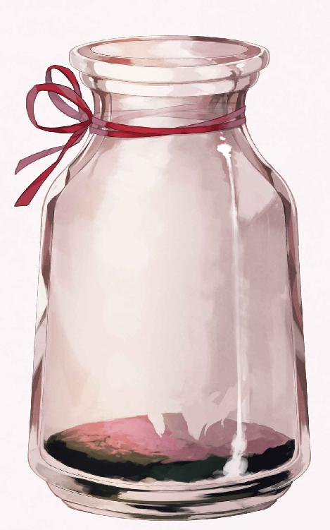

| 最果てのパンドラ (キュウビノベルス) | |
| いづみ上総 | |
| KYUBI SOFTWARE ENGINEERING (2017) | |
鎮魂の聖唱歌に亡骸をついばんでいた鳥たちが羽音を残して飛びさった。
大規模な野戦が終わり、市街を囲む城壁をのぞんだ平原に広がるのは屍山血河。
どこもかしこも骸ばかりであった。
累々たる死屍が緑の平原を穢している。
軍馬に戦士。傭兵に奴隷、騎士から魔法士に至るまで。
誰もが等しく物言わぬ骸となって野ざらしになっていた。
うめき声を上げられるほど幸運な者は、その殆どが後方に運ばれて野戦病棟を圧迫している頃だろう。大きな傷を負わなかったものは勝利を片手に街へと凱旋していった。
すでに侵略者は敗走し、守りぬかれた城壁の中からは市民たちの歓声が届いている。平和への喝采が鳴り響き、勝利の美酒が牙なき者たちの心を酔わせているのだろう。
それを意識の外へと締めだし、ウィルは黒い獣毛に覆われた耳を立てる。
はっきりと聞こえるのは祈りの声。
まだ赤色も温かい骸にそえられる聖句を込められた歌、そして祝福を込められた聖水。
死喰い鳥が舞う空の下、教会の神官たちが亡骸を略式で弔っているのが見える。
無数の神官や教理兵たちは勇敢に戦った達の前に跪き、聖印を結んでは冥路の無事を祈っている。
戦いに散った彼らが不死神の呪いにかかり、再びこの世に舞い戻らぬように丁寧に処置を施しているのだ。略式なのは、ひとつひとつ墓地へと埋葬するには遺体の数が多すぎて手が足りないゆえだ。
人にもたらされる神の恩寵は不足しているらしい。
平野で散っていった人の数が多すぎるのだ。ゆえに輪廻の神と、戦死者たちを導く戦神の手も足りないのだろう。
慈悲深い『人間たちの神』に鼻を鳴らすと、立派な鎧に身を包んだ騎士の亡骸を彼の従者とおぼしき若者が泣きながら馬に乗せているのが見えた。無辜の民を守るため、戦に赴いて名誉の戦死をとげた主を手厚く葬るつもりなのだろう。
その一方で、打ち捨てられた奴隷兵にはだれも見向きもはしない。傷兵を運ぶ軍馬、そして物資を回収する簡素な馬車にすら踏み砕かれて土に交じる始末だ。
戦地で死は平等に訪れても、その後の扱いには雲泥の差があるように思えた。
人狼の血族たる自分たちとは死への価値観が大きく違う。
人狼は死者の扱いを分けたりはしない。
ウィルたち魔狼ならば身内であれ敵であれ、死者を尊重して丁重に弔う。共にくつわを並べた戦友であったならば決して骸を足蹴にしたりはしない。
人間との価値観の違いには慣れないな――そんな感想を胸に椅子代わりにしていた岩から立ち上がると、遠くから黒い馬に乗った騎士が駆けてきた。
磨き抜かれた白銀のプレートメイルと、蒼い羽飾りのついた兜には見覚えがある。
この戦の指揮をとっていた男だ。
この付近を支配する領主で辺境伯と名乗っていたが、名前は忘れてしまった。
興味がなかったのだ。
「ここにいたのか。ウィルどの」
兜を外し、下馬して近づいてくる領主を一瞥すると、彼の馬が怯えたように大きくいなないた。文字通り、凶暴な肉食獣を前にしたときの本能的な反応だ。
「どうどう。落ち着け、怖がらずとも良い」
領主は勇猛果敢な愛馬と評したが、一撫でで凶暴な六足熊の首だろうとたやすく斬獲する魔狼は恐ろしいのだろう。人の言葉はあてにならないとウィルは内心で苦笑する。
「なんの用だ、領主よ。もう戦いは終わったぞ」
意識を切り替え、大陸の公用語で辺境伯に話しかける。
辺境伯は兜を脱いで鷹揚に応える。
「知っておるよ。さきほど街の戒厳令を解いてきた。みな平和を讃えている」
狂乱する相棒をなだめる辺境の領主に告げると、白髭をたくわえた辺境伯は頷いた。
辺境伯は人間にしてはかなり背が高く、魔狼の中では小柄な部類であるウィルと同じくらいの上背であった。
「ああ、どうやらあちらは大騒ぎのようだな。我の耳には喧しくて仕方がない」
「不自由をかけてもうしわけないが、どうか許してほしい」
歓声の音が混ざり合う街の方に視線を向けて正直な感想を口にすると、年老いた辺境伯は安堵と疲労の混ざりあった苦笑を見せた。
後方で自ら指揮を取っていた彼も、街を守る大きな戦に疲れを感じているのだろう。
魔狼にくらべ、人間とは実に弱い生き物だと改めて実感する。
並の人狼であれば一昼夜。鍛えた魔狼であれば七日は飲まず食わずで戦えるのだから、数時間の交戦で疲弊する人間がいかに脆弱か分かる。
か弱い身で、勝利をもぎ取った人の身をウィルはねぎらう。
「よいさ。勝利に宴をあげるのも戦の常だ」
「これも貴君のおかげだ。左翼が破られていたなら、この戦は負けていただろう」
「世辞は良い」
辺境伯の賞賛をウィルは受け流した。
辺境伯に人ならざる者に対する蔑視の感情は見えないが、こちらを信頼していないことは最初から匂いで分かっている。いまこうして平然と話しているが、その心臓は恐怖で早鐘を打っていることも聞き取れる。
よほど一騎当千と名高い魔狼が怖ろしいのだろう。それでも人狼族の中でも特に戦闘に秀でた魔族の参戦に感謝はしているらしい。
「我は自分のために役目を果たしただけだ。感謝も世辞も要らぬよ」
「そうはいかん。必要なことだ。そうでなくば、辺境伯ともあろう者が、礼も言えぬ恩知らずと思われてしまう」
謙遜する辺境伯から視線を外して周囲を見回すと、神官たちは戦場の功労者を遠巻きに見ていた。
彼らは見るだけで決して近づいてこない。
魔狼が恐ろしくて近づけないのだろう。強い警戒心と臆病さはまるで野生の猫かウサギのようだ。
鼠がネコを、羊が狼を畏れぬ道理もないか。と胸中で嘆息する。
「それでどうだった。わたしも左翼側までは手が回らなかった。ウィルどの、左翼の戦局の推移が知りたい」
どこにいっても畏れられる事に内心で辟易しながら、ウィルは辺境伯が欲しているであろう情報を口にする。
「敵の騎馬隊は七割強を壊滅させた。これで大隊規模の騎馬隊の育成にかなりの時間がかかるだろう。騎馬連隊の指揮官と副官、あとなんとかという英雄もそこらへんに転がっている。しばらくは平和になるだろう」
少し北方訛りのある土着の言葉に、ウィルは大陸の共通言語で答える。完全に公用語を習得しきれていないので、ニュアンスは異なるかもしれないが――まあ、伝わるだろう、と構わず話しを続ける。
「なんと！ 騎馬隊の隊長のみならず、音に聞こえた騎兵《疾風のアルベルト》を斃したというのか」
「名前など知らんよ。英雄だからといって街を守る結界術を破られるわけにもいくまい。攻めてきたから殺しただけだ。敵ではあったが、心ある弔いを期待する」
こともなげに放言し、返り血にまみれた革鎧を無造作に背後へと脱ぎすてる。
ウィルの背後は、魔狼の爪牙によって散っていった者たちの赤色で血の海になっている。
千人以上の鮮血と、英雄の返り血を浴びた革鎧はベシャリと音を立て、野に咲いた白く可憐だった花を更に赤く染めた。
「ウィルどの、どこか怪我を？」
「......だれに言っている。人間と同じにするな。ただの人狼ならばいざしらず、雑兵ごときが、魔狼たる我の毛皮に傷など付けられるものか」
革の質素な鎧は返り血を避けるためのものだ。
事実、傷の一つも身には受けなかった。
ただし魔狼の毛皮は鉄製の刃や鏃をたやすく弾いても、飛散する血液までを防ぐことはできない。血は鉄錆の匂いがして、しかも生臭い。
「我はヴァンパイアとは違う。血の雨など不快なだけだ」
泥で汚れるのは構わないが、血の匂いはウィルの好むところではなかった。そのための鎧であり、汚れを避けるためにまとっていた外套をも捨てた。
傷一つない革鎧は英雄の装備を剥ぎ取った死体漁り共に拾われ、盗品として売りさばかれることだろう。
「魔狼が人に討たれるなど、羊が狼を襲うことよりも稀有だろうさ」
「それはすまなかった。私ごときが心配することではなかったな」
人狼に伝わるコトワザを口にして牙をみせると、威嚇されたと思ったのか辺境伯は青ざめた顔ですぐに言葉を改めた。
「むぅ」
困惑を胸に低く呻く。
冗談を言ったつもりだが伝わらなかったようだ。顔の構造上、誤解されたのだろう。
人とは身体の構造がまるで違うので、言葉を覚えるのにもかなり苦労したのをウィルは思い出した。
「とにかく左翼側の結界士に損害はない。重傷者は数名いるが、復帰出来ぬほどでもないだろう。せいぜい良い療法士を付けてやることだな」
「恩に着る。結界士は数が少ないのでな」
「ならば、もっと護衛を増やすのだな。結界士を抜かれた戦いは悲惨だぞ。街を焼かれたくはないのだろう？」
結界士が、都市防衛の要であるのは常識だ。
長距離攻城魔法、あるいは投石機などによる市壁の破壊を防ぐための結界。それを構築するのは市街防衛戦の鉄則だとされている。
そのために市街を守る野戦では必ず結界士が投入されるが、侵略側も当然セオリーは弁えている。基本的な戦術理論に従い、侵略側は戦陣を破り、結界を破壊しようとする。
守るべき街を、先に武力で制圧してしまえば勝ちだからだ。
そのために弓による前面に対する制圧射撃が終わりと、守りが手薄になると騎馬隊が結界士の陣へと突っ込んでくる。結界士は少数であり、乱戦に弱い魔法士で構築される。いざ陣を突破されると、とたんに死亡率が五割を越える過酷な兵科となる。
「心得ておるよ。だからこそ、奴らは主力を本国に引き抜かれて手薄になった都市に侵略してきたのだろう」
「まったく、人間の戦争好きには困ったものだ」
兵力を割かれたことを好機として、異国が軍隊で侵略をしてきた。本来は不可侵と定められた地だが、貿易の要となる都市を隣国が欲したのだろう。
そして、偶然居合わせたウィルは辺境伯に一つの条件を出して傭兵として参戦した。
侵略側の誤算は、攻め入った都市に魔狼という殺戮の申し子がいたことだろう。彼らも、五倍の兵力を一騎に覆されるとは思わなかっただろう。
「ウィルどのがいなければ、この都市は大陸最古の街の名を返上していただろうな」
「世辞は良いと言っている」
「だが、事実だ。話には聞いていたが、魔狼の力とは凄まじいものだと再認識したよ」
魔族の力は種族によって異なるが、その中でも魔狼の実力は極めて高いと言われている。
たった数騎で敵対した国の兵を鏖殺して、王の首を刈り取ったという伝承は大陸史においても有名な逸話だ。
それこそが魔狼が過剰に畏れられる最大の原因なのだが、とウィルは胸中で溜息をこぼした。
「まあ良い。それで約束の履行を求める」
「ああ、そうであったな。すでに司書には話をつけてある。気の済むまで見ていってくれ。私はこれから戦勝祝賀会の準備があるので失礼する」
「ああ、二度と会うことはないだろうが、汝に人神の守護あらんことを願っているよ」
「人狼の信仰するという始祖の神狼ではなく？」
「お前が狼の子孫であれば、我らが始祖たるアルテリルに祈ってやらなくもない。領主よ、生肉は好きか？」
儀礼的な言葉を投げかけると、辺境伯は苦笑をもらした。
どうやら、今度は冗談が伝わってようだ。
「我も戻る。次の戦までせいぜい平和を甘受するといい」
「うむ、ウィル殿も武運長久たれ」
皮肉めいた警句に辺境伯は、強く頷いて兜をかぶって馬に座す。馬は主人の命に従って走り出し遠ざかっていく。
ウィルは其の背中を見送ると、町に向かって歩きだす。
歩くと人が割れる。誰もウィルに目を合わせようとしない。
ふと、地面にできた赤い血溜まりに目を向けると、全身に血を染めた黒い人狼が映っている。
「やれやれ、このまま戻ればパニックになるな」
ウィルは赤い目を細め、町に帰るまえに水浴びをすることを決意するのだった。
夕暮れを待って、宿を出ることにした。
「少し出てくる」
宿を貸し出した店主は、マントを人より突き出た鼻先まですっぽりをかぶって出ていくウィルに不審そうな目を向けただけで何も言わない。はじめに台帳にサインをするときは毛で覆われた手にぎょっとされたが、宿代を倍額払うと無口になってくれた。
「食事はいらない。鍵をくれ」
最低限の会話ですませ、フードから人の頭など熟した果実のように砕くことのできる獣毛で覆われた手をのばす。
「ほらよ」
「どうも」
施錠の依頼を受けた宿主が投げる粗末な鍵を受け取り、外に出る。
沈む太陽と街並みが作る黄昏時は、何もかもを曖昧にしてくれる。ウィルのように人に恐れられる存在が、ひと目を避けるには好都合な時間だった。
戦火に焼かれることをまぬがれた街を眺めながら、大通りをさけて目的地に向かう。
すでに終業した露天商たちが荷を片付けている。
薄暮から夜へと移り変わりゆく中で、人通りもしだいに寂しいものになっていく。戦いの顛末を謡う吟遊詩人の声も遠くなる。
点々と灯る光に背を向け、フードをかぶった魔狼は歩きつづける。
ウィルの足は人狼の優れた方向感覚に導かれて迷うことなく、官舎の立ち並ぶ街の中央へと進んでいった。
徐々に道が整備されていき、飾り気のない古い建物が増えていく。靴を必要としない肉球のある足裏に敷き詰められたタイルの冷たさを感じる。
ウィルの安宿がある区画より遥かに整然とした場所の一角にそれはあった。
古色蒼然たる前時代の建築物。入り口は狭く、建物自体も堅牢な石材でそこが優美さよりも合理性を重視しているのが分かる。
立哨は二人。
どちらも軽鎧と槍で武装している。
武装した衛兵も子猫とさして変わらないという印象を受けながら、入り口に近づく。
「ちょっと君。ここは関係者以外立ち入り禁止だよ」
「顔をみせてもらってもいいかな」
「......いいぞ」
立哨をしていた衛兵がフード姿の不審者に気づき近づいてきたので、呼び止められた瞬間にフードを剥がした。
ちょっとした冗談のつもりだったのだが――
「はっ、はあああああぁぁぁ」
「ひぎゃああああああ、人狼だ。殺さないでくれ」
一人は腰を抜かして失神。一人は槍を放り投げて脱兎のように逃げていってしまった。
「お、おい」
あっという間に無人になってしまい、薄闇の中で立ち尽くす。
「いや、さすがに傷つくんだがな」
街の衛兵ごときが魔狼に敵うはずもないが、あんまりな態度ではないだろうか。
そもそも魔法にも長けた魔狼を、他の人狼族と一緒にされるのも釈然としない。ネコと虎ほど違うというのに失礼な連中である。
「あるいは人の中に混じって生きている我の方が悪いのか」
二大陸を巻き込んだ人魔大戦から千年。
一部の地域では人間と魔族の融和が進むものの、まだまだ人間との溝は深く横たわっている。人との容姿や能力の差が顕著になるほど溝は深くなり、戦場の悪鬼と畏れられる魔狼ともなれば言わずもがな、である。
「誰も生まれは選べぬというのに」
どこにいっても馴染むことのない自分の姿にわずかな嘆息を交えて、気絶した衛兵に声をかける。
「おい、起きろ。こんなところで寝るな」
よほど肝を潰したのか、衛兵はピクリともしない。口元には泡を吹いている。
「ああ、仕方ない。こんな情けない姿を誰かに見られ、衛兵をクビなったら我のせいではないか」
ウィルは気絶した衛兵の醜態が衆目されられぬよう、柱の陰まで引きずっていく。
「どうして我がこんなことを」
ブツブツと不満を漏らしながら、ウィルは物陰に衛兵を運ぶ。
傍目からすれば仕留めた獲物を運ぶ獣のようだろう。幸いにして辺りに人通りはなく、その姿を見咎めるものはいなかった。
「やれやれ。戦争に参加して、衛兵を運んで。ただ本を読むだけで一苦労だな」
失神した情けない衛兵の安全を確保して、ウィルは建物の入口に近づく。
堅牢な石枠に、強固な鋼の扉がはめ込まれていた。開閉を封じる魔法の力が込められているのを感じる。
力ずくでこじ開けるのは不可能だろう。伝説の十聖の一人が開発した鍵魔法は、魔力や力だけではどうにもならない物が多い。鍵魔法の本質は、魔法というよりは呪いにこそ近いとされている。
そこをノックする。魔力を込めて。
解呪の術ではない。ただ司書には話を通したと領主は語った。ならば――
ややあって扉に『目』が生まれた。目はギョロリとウィルの姿を捉え、スッと消えた。
直後に扉を覆っていた魔法が霧散するのを感じて、ウィルはドアノブすら無いつるりとした表面を押す。扉は少しの冷たさと重みを掌に伝えて、少しずつ前方へと沈んでいった。
暗闇がつめこまれた廊下が目の前に立ちふさがり、下方に向けて沈む狭い通路に明かりが灯る。
ボッ、ボッ、ボッという音を立てて、青白い、鬼火のような火が蝋燭も燭台もなく等間隔に伸びていく。
「入ってこいということか。出迎えもないとは歓迎はされていないようだな」
死の沼へと誘う幽火にも似た光に誘われて廊下に足を踏み入れる。足裏の肉球を凍えるほど冷い石の床が迎えてくれる。
廊下はわずかに下へと傾斜している。歩いても歩いても地下へと伸びる斜路には青白い炎が連なり、前後の距離感がしだいに曖昧になる。
一定の間隔で通路は直角に折れ、どんどん深い場所へと誘われている錯覚を覚える。
長くつづく廊下が八度目の角を曲がったところで視界が急に開けた。
「これは、すごいな」
見るものを圧迫するように敷き詰められた本。本。そして本。
古びた本棚に、さらに年代を感じさせる本がぎっしりと詰まった空間がそこにあった。
大陸でも名を馳せる禁書図書館だ。
その入り口に一前の長机があり、机には主が陣取っていた。
若い女だった。
ピシッとした衣服を着込み、なにか書き物をしている。
女が顔をあげる。
翡翠のような深緑の瞳をもった若い女だった。
「ようこそ禁書図書館へ。領主より話は聞いています。歓迎はしないけど、利用することを許可します。まずはここに署名を」
女はそういって一枚の紙片を差し出してくる。そこには利用者の氏名を書くための空白があり、約款が認られている。
「サインは必須か？」
「もちろん。利用規約に同意をしてください。それで閲覧を封じる結界が解除されます」
紙片からは魔力の拍動が感じられ、これが一種の魔法契約だと分かる。
内容は――本を持ち出さないこと。本を傷つけないこと。司書の指示には従うこと。館内で騒がないこと。閉館時間を厳守すること。
それらの簡単な約束事が、いくつも箇条書きで記されている。
破ることのできない魔法契約にしては、ずいぶんとシンプルだ。だが逆にその分だけ強力な誓約でもある。
ウィルは魔法を扱う徒として、その書類を数分をかけて熟読してから問題ないことを確認してから名前を書いて差し出す。
「はい。これで利用条件は成立しました。どうぞお通りください」
ペタペタと足音を立てながら図書館に踏み入る。
旅の途中で知りえた情報どおり、図書館の内部は広大だった。
どこまでも本棚が並び、そこに古ぼけた書物がぎっしりと詰まっている。
中央だけが吹き抜けになっていて、周囲から押しつぶすように本棚が中央へと向けられている。万の桁ではとうてい足りない数の書物が、青白い魔力光に照らされていた。
これらが全て一般には出回らない禁書だとおもうと、全身の毛が沸き立つようだった。
キョロキョロと見回しながら歩き回ると、本棚の側面には大まかな案内があった。
異端とされた大陸史。すでに滅亡した王国の歴史。大陸の一部で隆盛を極めながら廃れた宗教の教義本。眉唾とされている大陸中の伝承。権力者に不都合とされた歴史の編纂本。辺境の郷土料理ばかりをまとめた奇書。大陸における魔族の分布をしめした稀少本。各国が秘匿する精密な地図。交易路の開拓の歴史。封印された魔物の逸話。神代の伝説。
文字通り、多種多様の本が本棚に詰め込まれている。それらが何階層にも渡って連なっている。
遥か高みにある小窓から茜色の光が、地上を照らす夕暮れのものだと理解して、ウィルは感嘆の声を上げた。
ここは自由都市の深い地の底なのだ。
「さて、『古狼の爪痕』はどこにあるのだろう。いや、ここにあるだろうか？」
眩暈を起こしそうになる蔵書から意識を引き剥がし、本棚の文字を追う。
探し物を見つけるために案内図を凝視する。
伝承の棚だろうか。それとも歴史の棚だろうか。それとも魔族の棚だろうか。
「ふむっ、よく分からないな。仕方ない、じっくり探すか」
純粋に興味を惹かれる書物も沢山有るので、ウィルは虱潰しに探すことにした。
人狼族の中でも、魔狼の寿命は特に長いのだから焦る必要はない。
神狼を探すために旅を続けている五十年も、千年にも迫る命数をもつ魔狼の一生からすれば決して長い年月ではない。
まずは一冊目を手に取り、その場で目を通す。
関係のない本だったが、棚に戻すことなく一気に読み切る。
ウィルは書が好きだった。
そこには自分の知らないことが数多く書かれている。たとえ既に知っていることでも違う側面からの見識を得られる。只人より遥かに長い一生を持ってしても網羅しきれない未知や、異なる思考を垣間見ることができるのが好きだった。
「ふう、これは違ったな」
しっかりと後書きまで読み終えたウィルが吐息を吐き出す。
求めていた物ではなかったが、それでも小さな満足が胸を満たしていた。
少なくとも戦場に赴いて、生きるために他人の命を奪い取ることで金銭を稼ぐよりもよほど充実している。
「んっ？」
本を棚に戻すと、ふとウィルは奇妙なものを見つけた。
「あれはなんだ」
それは図書館の中を泳ぐ魚だった。
魚は細長い身体で、長いヒレを優雅にたなびかせ空中を泳いでいる。
ふいに見つけた奇妙な魚は、ウィルの向かいにある二階の本棚の周りをスイスイと遊泳していた。
「透けている......」
目を凝らすとその身体はうっすらと透けていた。細長い身体も長いヒレも、つぶらな目に至るまで全体が色ガラスのように透明で内臓や骨すら見えない。
「普通の魚......じゃないな」
虚空を泳ぎまわる透明の魚など聞いたこともない。
魔力の匂いを帯びながらも、その存在感がひどく希薄だ。魔法に長けたものでなければ、魚を見ることすらも出来ないだろう。
「魔獣なのか？」
石室で長く篝火を燃やしたような特徴的な匂いに鼻を鳴らし、ウィルは魚を見つめながら独白する。
世界の各地を旅してきたが、あんなものは聞いたこともない。
魚たちは魔狼の疑問など気にもとめず、手すりや梯子の合間をスルスルと縫いながら泳いでいる。
いっそ典雅とすら思える舞いに目を奪われていると、本棚の隙間からスルリと同種の魚が顔を出した。
本棚の隙間は数ミリもなく、魚が潜り込める幅ではないにも関わらず。
「どういうことだ」
あまりに奇妙な光景に忘我していたとき、天井を突き抜けて更に新しい魚がやってきた。驚く間もなく石壁を、机を、階段を、はては床板をすり抜けて次々と図書館に透明な魚が侵入してくる。
強力な魔法の防壁で守られ、限られた者しか入ることの叶わない図書館はあっという間に魚たちの泳ぎまわる水槽へと変貌してしまった。
「なんだこれは」
この世の常識を超越した魚たちはウィルを気にすること無く、ゆらゆらと図書館の中を泳いでいる。その数は全部で七匹。みな同じ形だが、統率が取れていないのか、皆おもいおもいの場所を泳いでいる。
ウィルのことすら気に留めていないらしく、魚は目の前を優雅に通りぬけていく。
その一匹がウィルの近くの本にぶつかった。
いや、ぶつかることなく本を通りぬけた。
本の背表紙に激突したとおもった瞬間、魚は何事もなく本をすり抜けて棚の後ろへと移動してしまったのだ。
「本にも壁にもぶつからない......あれは実体がないのか。幻霊か、だが魚の幻霊など聞いたことも――」
ウィルは呟くと同時に、魚の身体に文字が浮かび上がっていることに気付いた。文字は魚の表皮を滑るように流れていく。
それが一つの文章を作っていることを悟り、魚の飛び込んだ件の本を開くと魚の身体を流れたものと全く同じ文章がそこにはあった。確認のためにウィルは別の魚がぶつかった本も手にとって開いた。内容を見比べても結果は同じだ。
「本の文字が体に写り込んでいるのか」
不思議な存在に興味を惹かれ、その動きに注視していると魚たちはそれぞれに色んな本へと飛び込んでは、身体に文字を転写させているようだった。
その行為にどんな意味があるのか分からない。ただ空中を舞い泳ぐ魚たちは神秘的な光景だと思った。
「なあ、あれは何だ」
はじめての光景に好奇心を抑えきれずウィルは、黙々と作業を続ける司書に声をかけた。
しかし黙々と作業を続ける司書の筆は止まらず、魚たちは優雅に輪舞曲を踊っている。
「司書さん、あれが何か知っているのか？」
少し声量を上げて、ウィルは図書館の静謐を揺さぶった。
しかし耳に届くのは司書の万年筆が紙を引っかく音ばかり。司書はこちらに一瞥すらくれない。
「......」
魚たちはどんなに激しく本に激突しても音一つ立てない。目には映るが、現実感がなくまるで幻のようだ。
ためしに自分の舌に、軽く牙を突き立ててみる。
「痛っ」
伝わってくるのは微かな痛みと血の味だ。
「夢でも幻じゃない......まさか、ウィル・オ・ウィスプの一種か」
美しくも不吉な精霊を連想して、少しだけこちらを気に留めない司書のことが気がかりになる。司書はずっと何も見えていないような態度だ。
「司書さん。なあ、司書さん」
呼びかけても、目の前で手を振ってみるも司書は反応しない。
「アンタ聞いているのか。いや、聞こえているのか？」
あまりの無反応さに魚から何か悪影響を受けているのではと思い至り、解呪の奇跡を口にする。
魔獣の中には見るだけで精神を病んだり忘我へと導くものがいる。そういった幻惑を破るための人狼族に伝わる奇跡の一つを詠唱する。
「麗しき月を奏でるアルテリル。我は願い奉る。其の眼、偽りを打ち砕く青瞳を――」
始祖たる神狼に祈りを捧げ、いまも神狼に灯る奇跡の一部を身に宿すための詠唱を紡ぐ。まとった奇跡が毛先を輝かせ、ウィルの黒い体毛がうっすらと銀光を帯びた時、すっと伸びた指がウィルの鼻先で静止した。
司書の指と視線がこちらに向いている。
「魔法なんか使わなくても、ずっと聞こえているわ」
「聞こえていたのか」
「ええ。もちろん。せっかく集中していたのを邪魔されたけどね」
ローブから腕を伸ばした司書は軽く肩をすくめると、ページを開いたままで羽ペンを休ませた。
その翡翠色の瞳には明らかな知性が湛えられている。
どうやら、本当にただ没頭していただけのようだ。
「幻術にでもかかったかと思ったぞ」
「あいにく、ここには禁書のばかりでね。見ただけで呪われたり発狂したりするような蔵書も少なくないわ。そういう本に毒されないように、ここには対魔力の高いものしか入れないようにしているわ」
「......だから選ばれた者しか入れないのか」
「そういうことよ。だから、ここに入れるのは辺境伯の許可が取れた人だけ。だから現在の利用者もあなただけよ。もともと滅多に人など来ないのだけど」
戦場で武勲を立てたのは入館許可を得るためだ。辺境伯に謁見したとき、最初に魔法士であるか尋ねられたのには、そういう意味もあっただろう。
抜け目のない貴族だったのか、と今更ながら認識を改める。
「それであれは？」
天井に目を向けると先程の魚たちが円を描くように回遊している。ゆるやかに燃える魔力の火を無色の腹に抱いて、ほのかに青白く輝いていた。
「あれ？ さあ、知らないわ」
「......」
「興味ないもの。紙は食べないし、知らない間にいなくなっているから無害な紙魚みたいなものよ。何年も前から数日ごとにやってくるけど、邪魔もしてこないし食害もないから無視しているわ。透魚って呼んでいるけど詳しいことは知らないわ」
そういってまた本に筆を走らせる。達筆な文字が、白い紙に新しい模様を描き出している。司書は透魚と名付けたものを見上げようともしない。
「透魚を調べようとは？」
「思わないわ」
顔も上げず、にべもない返事をする司書。
彼女の興味は書にしかなく、実害がない透明の魚などどうでも良いらしい。
そのうち、魚たちは一冊の本に殺到して、その本へと潜り込んでいった。
本へと沈み込んだ七匹の魚たちは、その身にいくつもの文字を浮かべながら一つの群れとなって図書館の天井をすり抜けていった。
「いってしまった」
「そう」
どこかに消えていった魚たちを見送ると、司書は気のない返事をする。
あとには何の異常もない図書館の静謐だけが残った。
微かに静けさに爪痕を立てる筆の調べのなか、ウィルは消えていった魚たちの軌跡をいつまでも追いかけていた。
本を片手に抱いて文字を追っていると、また魚たちがやってきた。
求める本も手がかりも見つからず、それらしい本を虱潰しに探していた夕刻の事だ。
魚たちは前回と同じく不意に現れて、透明な身体でヒラヒラと舞いユラユラと図書館を泳ぎ回っている。
耳にはすっかり慣れてしまった司書のペンの音。階下に意識を向けると、今日も彼女は長机で文字を綴っていた。彼女はこれ以外の様子をみせたことがない。
適当な椅子に腰かけたまま栞を挟み、ウィルは魚を観察することにした。
数日前と同じだ。
魚――透魚たちはしばらく図書館を回遊すると、それぞれが異なる本への文字通り『没頭』する。透明な身体に文字が浮かび上らせ、本を試読しながら選ぶように図書館をスイスイとおよび回る。
そしてしばらくすると、相談するかのように天井付近に集合して一冊の本へと殺到して、どこかに去っていく。
新しく分かったことといえば、魚たちは毎回同じ時間にやってくるということだ。
決まって薄暮をすぎた時間で、夜の戸口に近い時間だった。それは人が空をあまり見上げない時間だと言えた。
彼らは――透魚はウィルや司書をあまり気にしてはいない様子で自由に泳ぎまわる。
しかし触れられるほど近づくことはない。司書の言葉通り、気にしなければ無害な存在だと言えた。
「ふむ、これも外れか。見つからないな」
本を閉じて、近くの本棚に戻す。
なかなか目当ての本は見つからない。すでに百冊ほどを読破したが、目当ての書物は見つからない。
原書は見つからずとも、写本があればと探し続けていたが空振りばかりが続いている。
新しく本を手に取ろうとした時、遠くから教会の鐘が聞こえてきた。
落日を告げる教会の鐘だ。
「うるさいな。なぜ人はこんな音を立てないといけないのだ」
ウィルのような人狼には騒音だが、鐘楼の音は司書には聞こえなかったようだ。堅牢な図書館の外壁の厚みが音の大半を遮断してしまっているのだろう。
しかし音に連動するように明度が下がる。
図書館を照らす魔力の灯火が時間経過で尽きたのだ。
司書はなにも言わず立ち上がり、本に鮮やかな色の付箋を挟み込んだ。今日の仕事はこれまでなのだろう。
灯りが更に消え、うっすらとした暗闇の中で司書の視線が向けられた。
鍵をかけるから図書館から出ろ、という合図だ。
「仕方ない。今日はここまでにしよう」
諦めて八階から飛び降りる。地面までの距離はかなりあったが、ウィルは音一つ立てずに着地する。足をくじくようなヘマもしない。人間なら落下の衝撃で全身骨折をするだろうが、魔狼の身体能力はこの程度の高さをモノともしない。
「閉館よ」
「わかってるよ」
煌々と光を灯すのは出入り口に続く廊下だけだ。図書館の四方はすでに深淵へと続く奈落のごとき暗さで、人ならば足元すらおぼつかないほどだろう。
その片隅で司書は律儀に魔力灯のカンテラをもって立っている。見送りをするという意思表示だ。
「おやすみ司書さん」
ウィルが軽く手を上げて挨拶をすると、司書は小さく頷いたようだった。
きっと今日も彼女はここに泊まるのだろう。ここは彼女の職場であると同時に、彼女の塒でもあるらしい。衛兵が簡素なサンドイッチを差し入れにやってきたのも見たことがある。
彼女の生活はおそらく全てここで賄われている。
閉塞的で不健康さを感じさせるが、この場所の主に口を出す気はない。
ウィルは自分以外のサインのない入館記録帳に名前を記入して、外界に繋がる細長い通路を歩く。扉を押し開くと衛兵と目があった。彼はギョッと目を剥いたがウィルは構わず星空の下に身を晒す。
深い夜の匂いが風に乗って、扉の外からウィルの毛皮を波打たせた。
「また来てる」
図書館を泳ぐ魚を視るのも、これで七度目だ。
あいも変わらず膨大な本の海から目当ての書物は見つからないが、透魚たちは今日もやってきた。
そして五度目を越えたところで、その規則性も見えてきた。
透魚たちが選ぶ本には一つの明確な共通点があることにウィルは気付いた。
それは物語だった。
種類を問わず、新旧を分かたず、東西の隔てなく、言語の違いにも構うことなく魚たちは物語の描かれた本だけを選んでいるようだった。
それは有名な英雄譚であり、人々に忘れられた御伽噺であり、虚実と断じられた空想の逸話であり、完全な創作であり、僻地に根付いた昔話であり、辺境の童話だった。
透魚たちは、図書館に埋没した無数の物語の中から一冊を選び抜き、そして彼方へと去っていく。あとには余韻すら残さずに物語を一つだけ連れて行く。
「これも違った」
最後のページまで読了して、今日も図書館を泳ぎ回っている透魚を見上げる。
「まだいるのか。今日は長考だな」
天蓋で踊る透魚を見るのは七回目だが、今日はずいぶんと長いあいだ本を選んでいる。
それこそ、ウィルが一つの本を読み終わるほどの長い時間だ。
気に入る本がないのか、それとも別の理由なのか、魚たちは天窓の近くでクルクルと輪を描くばかりで本を決めようとしない。
ふと思い、ついさきほど読み終えたばかりの本を机の上に置いてみる。
読み終えたばかりの本の内容は、古い伝説だ。
かつて魔王を討伐した十七人の勇士の話。その活躍を『魔族側』から綴った、千年前から語り継がれる物語とは趣きを別とする書物。いわゆる異聞録だ。
「これも広義の意味では御伽噺の一種だよな」
表紙に『魔王伝』と記された書物は魔族側の指導者の視点から描かれた物語であり、教会の人間がみれば即座に焚書に処される類のものである。そこでは人魔大戦で活躍した大英雄たる『十聖』も、もとは十七人のうちのメンバーだったと記してある。
魔王の側近を勤め、大元帥まで上りつめた者による手記を編纂したもので、魔王の活躍が情感豊かに文字で描かれていた。
ウィルに作者はきっと女なのだろうと推測させるほど情緒に溢れた文であり、単純に物語としても面白かった。残念ながらウィルの探すものは書かれていなかったが、これも壮大な物語の一つである。もしかすると透魚も気にいるかも知れない。
「おっ。反応しているな」
机に寝かせた本に一匹の透魚が近寄ってきた。
透魚はすぐにタイトルに気づき、するりと本へと吸い込まれていった。
表紙のなめし革、無数の紙とインク、そして年季の入った木材の机を通りぬけて透魚は他の仲間のところに帰っていく。
そして天井付近に集まった透魚が三度円を描くと、一気に『魔王伝』へと殺到してきた。
群がった透魚たちはあっという間に戦記に近い御伽噺を『読破』すると、天井を貫通して消えていく。
いや、違う。
一匹だけ、まだ図書館に残っていた。
こんなことは初めてだ。
不思議に思って天井付近で停滞していた透魚の様子を伺っていると、スイッと魚が尾びれを動かしてウィルの近くまでやってきた。
これも初めてのことだ。
これまで透魚が他者に興味を示したことはなかった。
「どうしたんだ？」
不可解な行動にウィルが狼の耳を動かした時――
クイッ
不意に透魚がお辞儀をした。
そして仲間を追って虚空の果てに消えていく。
「......ははっ、まさか魚にお辞儀をされるなんて思わなかった。全く、この世界は本当に面白いな」
「生涯を通して集落から出ないといわれる魔狼が、こうして人界にいるというのも随分と珍しいと思うのだけど」
驚きを乾いた笑いで誤魔化していると、更なる驚愕が追い打ちをかけてきた。
ギョッとして声の主に目を向けると、司書の澄んだ翡翠の目がこちらに向けられていた。
彼女と言葉を交わすのは、初めて出会った日から実に数週間ぶりだ。
「なに、そんなに私が話すのが珍しい？」
「いや......君が無駄話をするようには見えなかったから」
「たまにはそういう事もあるわ。たとえば、古語の翻訳が終わった直後とかならね」
そんな言葉を紡ぐ司書の前には、まだ新しい羊皮紙の書があった。嗅覚に意識を開けば、乾ききっていないインクの匂いが濡れた鼻先をくすぐる。
「仕事は終わったのか？ ずいぶん長い間かかりきりだったようだが」
「ええ。ようやくね。古い人狼の口伝はずいぶんと苦労させられたわ。おっと、読むのはインクが乾いてからにしてよね」
思いもよらない言葉に身を乗り出すと、ウィルの言葉を先んじて釘を刺してきた。
「どうして探している本が分かったんだ」
「なんとなく。しいていうならば司書としての経験と勘ね。あなたが読んでいた本、それらの共通するものをピックアップしていったのよ......あなたが探していたのは神狼の居場所を記した『古狼の爪痕』でしょう？」
司書の言葉にウィルは息を呑むしかなかった。
それは今まで誰にも明かしたことのない秘密だったからだ。
子孫たる人狼族のあらゆる願いを叶えるという人狼の始祖アルテリル。
全ての人狼が『彼女』と呼ぶ最初の人狼を探していることを、ウィルはいままで誰にも伝えたことはなかった。
「図星って顔をしているね」
「なんで、わざわざ翻訳を？」
「利用者の探す本を見つけるのも司書の役目よ。残念ながらここには『古狼の爪痕』の原書も写本もないけど、手がかりになればいいと思ったのよ」
「アンタは――」
いつのまにかカラカラに乾いていた喉で言葉を生みかけたとき、遠きから閉館時間の訪れを告げる鐘の音が届いた。
それに連動するように図書館の明度が落ちる。魔力灯のマナが切れたのだ。
「今日はここまで。明日にはインクも乾くから読みにくるといいわ。開館は二度目の鐘がなってからよ」
「いや我は、すぐに――」
「明日の開館は二度目の鐘の音からよ」
「うぐっ」
強く念を押されては言い返せない。あくまで図書館の主人は彼女なのだ。
最初にサインを施した「司書の命には従う」という魔法の強制力には逆らえずウィルはしぶしぶ頷いた。
「分かった」
「アダムは休みだけど、鍵は開けておくわ」
アダムとは図書館の前で立哨をしている兵士の一人だろうか。
毎日のように顔を合わせるが、名前は識るどころか言葉すら交わしたことがないのを今更のようにウィルはなんとなく思い出すのだった。
椅子に座ると尻尾が圧迫されて窮屈だった。
「むぅ。人の椅子はやはり我には合わないな」
複雑な心境で横向きに座りなおし、まだインクの匂いが新しい書物を手に取る。
昨夜は興奮で眠れなかったので少しだけ瞼を重い。
司書は別段変わった様子もなく、新しい本の作成にとりかかっていてウィルに一瞥もくれない。
司書の手によって編纂されたばかりの本の重みを感じながら、ウィルは椅子の隙間から尻尾を出す。
タイトルすらついていない本を胸に寄せて、少しだけ緊張しながら開く。
そこには人狼たちが残した口伝を蒐集したものが示されていた。
古い伝説があり、ときには人と生きた比較的に新しい物語があり、人魔戦争の頃の記録も散見された。
魔狼をはじめとする人狼の血族は、本来は文字を持たない。文字を重視するという価値観を持たないのだ。
ゆえに、伝承は口頭伝達による口伝に限り、このように編纂されて一冊の本になることは極めて稀だ。大陸の共通言語を学び、識字能力のあるウィルのほうが人狼では異端なのだ。
その努力も、全ては人狼の祖である神狼を探すためだ。
ウィルは期待を込めて更にページをめくる。
多くの伝説があり、そこに高い頻度で祖狼が登場してくる。
祖狼アルテリルは自分の末裔である『息子』や『娘』に奇跡をもたらす。ときに戦いのための力を授け、ときに天変地異を退け、ときに豊穣をもたらし、ときに不治の病を癒し、ときに死者との邂逅を叶える。
それらは人狼の末裔だけに約束される、生涯で一度だけの恩寵だ。
ときには覚悟を求められ代償を必要としたようだが、それは偉大なる奇跡に比べればささやかな掛け金だった。
やがて、全てのページを頭に叩き込んだウィルは静かに本を閉じる。
「ふう」
思わず吐息がこぼれた。
結果だけを語るなら空振りだ。
アルテリルを探す人狼たちには、それぞれの願いと旅があった。
長い旅路に耐えることができず志半ばで杖を折った者もいた。苦難に命を落として、仲間によって語られた顛末も記されていた。新しくできた家族や友のために、渇望した願望を捨てた者もいた。
少数氏族である魔狼であれ、大多数の人狼であれ、心から切望したであろう願いを叶えたものは多くはないと分かった。
なによりウィルが最も求めた祖狼の居場所はどこにも書かれてはいなかった。
それでも、先人たちの想いはたしかに胸へと届いた。
まだ時間は掛かりそうだが、ウィルは必ず叶えるという自分の意志を再確認して本を司書に返す。
「知りたいことはあった？」
「残念ながら......」
顔を上げず尋ねてくる司書に正直に話すと、彼女の翡翠色の目がウィルを見据えた。
「これは興味本位なのだけど、あなたは何を叶えたいの？」
「言う必要はない」
興味本位と告げられて、軽々しく口にできるような願いではない。真剣に願ったからこそ、五十年以上も孤独な旅を続けているのだ。
「３０以上の地方言語で記された人狼の口伝をわざわざ翻訳したのだけど、その報酬はないの？」
「んぐっ。別に我は――」
頼んだわけではないと嘯くのは簡単だった。だが、それではあまりにも薄情だろう。
他者から受けた好意を無碍にする事は人狼族の誇りに反する。恩義はないが無視するには抵抗があった。
「......一人、会いたい奴がいるのだ」
「そうなの、奇遇ね。私もよ。いえ、私の場合『見てみたい』って言う方が正確かな」
司書の言葉にふと違和感を覚えた。
本にしか興味がなさそうな司書にしては意外な言葉だ。
「なにを見たいんだ」
「幻狐族」
「......ばかな。それこそ叶うものか」
幻狐族は絶滅した種族だ。
千年前の人魔大戦のときにはすでに希少な種族であり、魔族の中でも屈指の力を持ちながら、どの勢力にも帰順しなかった事を危険視した各国が手を組んで彼らを滅ぼした。
一族の絆が強かった彼らは大軍に少数で必死に抵抗し、そして根絶やしにされたという。
強力な種族だったと云われているが、数で圧倒されて全滅したと伝わっている。
それが、およそ四百年前の話だ。
その頃にはまだ年若いウィルは生まれてもいない。
彼らについて分かっていることは、狐の耳と尾を有する美しい種族であり、ハイエルフを越える強い魔力をもっていたという伝説。そして幻狐族という名前だけだ。
「全滅したと言われている。どの文献にもそう書いている。でもだからこそ『本当』なのか知りたい。書にあることが真実なのか知りたい」
「......証明する手段がないだろう」
「そうね。この目で見ない限りは信じることができないでしょうね」
そういって彼女は、ウィルが返したばかりの本に魔法でタイトルを刻む。
彼女が手にする真新しい本には『狼たちの声』という表題がつけられた。魔法で描かれているのは月に吠える狼の姿だ。
「さて、それであなたはどうするの？ 残念だけど、ここにはこの本より確かな手がかりはないわよ」
「そうなのか」
「ええ、ここの本を全て管理している私が知る限りは」
それは事実上の白旗宣言だ。
図書館の主たる司書が、ウィルの求める情報はここには『ない』と言うのだ。
努力が無駄になったことに少しだけ精神的な疲労を覚えて、ウィルは地上から降り注ぐオレンジ色の斜陽を仰ぐ。
「大陸中央のエルド博物館には足を運んだの？ 北大陸の魔法院大図書館は？」
「ああ。どちらも空振りだったよ。伝説の十聖が使っていたという紅蓮明星のローブや装備は見てきたけどな。他にも多くの場所には行ったよ。でも全部ハズレだった」
「そう」
禁書図書館ならば、と思ったがあてが外れたらしい。
またしばらくは祖狼の足跡を追って大陸を彷徨うことになるだろう。
寂寞とした思いを胸にいだいていると、なにかがスイッと視界の端を横切った。
それはこの図書館で何度となく見かけた透魚たちだった。
優雅に本を探して泳ぎ回る魚を目で追っているうちに、一つのアイデアが浮かんだ。
「どうしたの」
「我はあれを追いかけて見ようかと思う。世話になったな、司書さん」
透魚がどこから来ているのか、というのはずっと疑問だった。これは次の手がかりを得るまでの気晴らし、手遊びのようなものだ。
「そう。じゃあ、今日であなたとはお別れね。退館記録はこちらでつけておくわ......えっと、ウィル？」
最後にようやく名前を呼ばれたことに、ウィルは口端をわずかに釣り上げる。
透魚たちはすでに本を選び終えて、物語に読み取ろうと群がっている。
あまり時間はない。
幸いにして今日を最後にする予定だったので、荷物をすべて持ってきている。
もとより司書が完成させた本が手がかりになれば、すぐに街を立つつもりだったのだ。
「さようなら、ウィル」
「ああ、元気でな。司書さん」
最低限の荷物だけを詰め込んだ雑嚢を背負って、すっかり通い慣れた地上に続く長い廊下を一気に駆け上る。魔法が施された鋼鉄の扉を開け放ち、夕暮れの下に身をさらす。
「わぁっ」
突然のことに驚きを隠せないでいる衛兵たち。彼らの頭上に、空をかける透魚の影を見つけた。
透魚の軌跡を見つめ、驚く衛兵たちに軽く笑いかけると、衛兵たちの返事を待たずにウィルは大地を駆け抜ける黒い疾風となる。
決して馴染まなかった辺境の街は、わずかな時間で遥か後方で小さくなっていく。
検問を無視して、あまりの速度にウィルを視認すらできなかった跳ね橋の駐屯兵を置き去りして、沈む太陽へ飛び矢のように地面を滑る。
透魚を追いかけて奔る。
初めて知ったことだが、透魚は恐ろしく速く泳ぐ魚だった。
駿馬を全力で走らせても、とても追いつけないほどの速度で空を飛ぶ。
その様はまるで自在に空を駆ける矢のようで、おおよそ人の追える物ではなかった。
しかし魔狼の足はスレイプニルに迫るほど速く、七日七晩を休まずに走れるほどの体力を有している。透魚が放つ魔法の匂いを見失わないかぎりウィルが透魚を追うことは難しくはなかった。
不眠不休で三つの国をまたぎ、七つの国境を飛び越えて、二度の昼夜を見送ったところで透魚たちはようやく高度を落とした。
三度まばゆい曙光を迎えた日の朝のことだった。
「ここは――」
目の前にそびえ立った黒々しい異様な森に、ウィルの足ははじめて足を止めた。
道を塞ぐ森の色彩は深緑よりの更に深く、鬱々とした色合いの緑が視界を遮っている。
森の深さに反比例するように生き物の声は魔狼の聴覚にも届かず、ガサガサという音だけが風がない森に響いている。
「呪われし森か」
こういった忌み地が大陸の各地にあることをウィルは知っていた。
自死したエルフ姫の呪いを受けた『錆の森』。死者の魂が集う『黄昏の渓谷』。多種多様の生物の白骨が幾重にも積み重なり白く染まった『白死の山脈』。異常な姿の獣が昼夜を問わず殺し合っている『殺戮の沼地』。満月の夜にだけ湖畔に姿を現す『霧の城』。
それらは忌み地とされ、何者も立ち入らないという。
同様に此処も人はおろか魔族すらも寄り付かなくなった魔の領域なのだと、ウィルは魔狼の本能で感じ取った。
スンと鼻を鳴らすと、透魚の魔力は消えることなく森の奥へと続いている。
感覚を鋭く研ぎ澄ましても、森に分け入った者の足跡を見つけることはできない。未開の地であるのは確かだろう。
「ふむっ、行くか」
もとより放浪の旅だ。その禁書図書館にすら始祖アルテリルの情報はなかったのだから、少し寄り道をしてもいいだろう。
少なくとも透魚に対する興味は、ずっと胸の奥に燻っている。
季節を冒涜しているのではないかと疑うほどに湿った丈の長い草を踏みつけ、ウィルは暗い暗い森へと一歩をふみだす。
わずか数歩で太陽が遮られ、常夜の帳が頭上を覆い隠した。
乾いていた空気が一気に湿度を帯び、ぬかるみがスネを濡らす。空気はどんよりと重く、森全体が水底の底に沈んだように静謐で満たされている。
獣や鳥の声は聞こえず、虫の気配すらも希薄だ。
百メートルも歩かないうちにぬかるみは浅い沼地へと姿を変えて、ウィルが一歩を踏み出すたびに膝の下でバシャバシャと音を立てている。
「沼なのに魚もいないのか。こんなに水は澄んでいるのに」
シンと静まり返った森に響くのは冠水した森をかき分ける水音だけ、それでも透魚の放っていた魔力の匂いだけは、森の先へとずっと続いている。
「まるで迷路のようだ」
似たような木々ばかりが狭い間隔で乱立する暗い森は、ともすれば不意に方角を見失いかねず、自分の足跡すら水の中にあっては曖昧だ。目印になるようなものはなく、枝葉の天蓋のせいで太陽の傾きで時間を把握することすらできない。
また膝下まで冠水してしまっているので、休憩のため座ることすらできない。もし脆弱な人間がそんな事をすれば水に体温を奪われてあっという間に消耗するだろう。
「ここはマナが濃すぎる」
魔力密度も高すぎて、高濃度のマナに耐性のない者はすぐに体調を崩してしまう。沼地にも森にも生き物がいないのは、それが理由だろう。
瘴気のような毒性はないが、正常な空間とはいい難い。
「これでは誰も近づかないわけだ」
森に残された匂いがなければウィルも引き返していただろう。
危険を感じたらすぐに引き返そうと思いながら、透魚が残した匂いをおって森の奥深くに入っていく。
ずいぶんと奥まで潜り込んだところで、いきなり視界が反転した。
「は？」
唐突に世界が開けた。
とつぜんの眩さに目を塞いで再び開けると、深い緑の木々も、澄んだ沼地も、暗い枝葉の檻も全てが消え失せていた。
周囲を取り囲んでいた森も足先を冷やしていた水辺も消え、蕩然とした平原が目の前に広がっていた。
「な、んだ。ここはどこだ」
ウィルの目の前にはそよ風に揺れる瑞々しい草花が咲き乱れている。
さんさんと輝く太陽から降り注ぐ光があたりを暖かな光で満たし、広大な平野がぐるりとウィルを囲っていた。
先程までの暗い森はどこにもない。
「裏返った......」
ウィルはあまりの変化に混乱した。
どう考えてもさっきまでの光景と陸続きではないのは明らかだった。森で満ちていた濃密な魔力も、さっきまで毛皮にまとわりついていた湿気も感じない。
背後を振り返っても、そこには暗渠めいた森はない。肩越しの景色は穏やかな光が降り注ぐ平原だ。ただ、幻でないことを証明するように足は濡れたままだった。
まるで、ぬいぐるみを引き裂いて裏返したかのように世界が一変してしまった。どこか別の場所を、むりやり別の地点と接着したような非常識な情景の変転にウィルが戸惑いを覚える。
扉の中と外。あるいは世界の臓腑。
そんな単語が頭をよぎる。
「だけど、この場所には誰かいる」
さくりと、丈の短い野草が足を撫でる。肉球に感じる土は柔らかい。そして目の前には手入れされた畝がある。
耕された『畑』に植えられているものがニンジンや玉ねぎやマメだと葉や茎から分かった。どれも農村にいけばいくらでも見つかる種類のものだ。視線を動かせば、粗末なあばら家に収穫を終えたらしい芋が干されているのが発見できた。
明らかに人の手が入っている場所だという証左だ。
しかし人の姿はまるで見えず、畑から離れた場所にポツネンと大樹だけが見える。
ただの大樹ではないことをウィルは一瞥しただけで理解した。
幾星霜を重ねたであろう大きな幹には窓が、しっかりと大地を噛む根の合間には扉が備え付けられた自然の樹木など存在しない。
エルフの里で見られる、樹木をくり抜いて作った樹居だろう。
しかしエルフの隠れ里にしては様子がおかしい。
招かざる客が訪れたというのに、これだけ待っても威嚇の矢すらも飛んでこない。
なにより見晴らしの良い平野だというのに人の気配がまるでない。かといって廃村独特の気配もなく、地面にはつい最近掘り返された跡すら残っている。
「匂いは......こっちか」
白昼夢でないことをしめす唯一の手がかりは、透魚の残した匂いだけだった。
スンッと鼻を鳴らして匂いの元をたどる。
「あそこか」
やはり、というべきか。透魚の匂いの糸は樹居へと伸びていた。
サクサクと音を立てる芝生を踏みながら、整地された『畑』をよけて樹居にそろそろと近づいていく。
やはり人の気配はない。
ほんのわずかに嗅いだことのない匂いがするが、それが何の匂いなのか分からない。人ともエルフとも人狼とも違う匂いだ。
大きな脅威がないことは、危険に敏感な本能が感じ取っているが油断すること無く周囲を警戒する。
樹居まではそれなりに距離があったが、近づけば大樹を加工して作り上げた建築物の異様さが明らかになっていく。
一番に驚くべきところは樹木が死んでいない、という点だろう。
針葉樹をくり抜いているらしいが、王冠のように広がる緑の枝葉は瑞々しく生い茂り、豊かな生命力の誇示している。
枝葉の生み出す木漏れ日の眩しさに目を細める。まるで季節から切り離されたように日差しが強い。大陸の北西――その最果てまでに当たる辺境であるはずだが日差しは強い。
「いったい、なんなんだ此処は」
近づくにつれ緑の匂いは濃くなり、いまも生き続ける木であることを示すように清浄な魔力を毛先に感じる。
風も大地も、豊かな魔力を帯びている。
「これはずいぶんと立派な木だな」
木の根元までやってくると樹居の大きさがはっきりと分かった。おそらく木の全周を一巡するだけでも時計の長針が一回転はすることだろう。
木を眺めながら、地面に食い込んだ根をさけて、不自然極まりない扉の前を眺める。
「ふむ」
どうしたものか。
樹居を前に黙考する。
透魚を追ってきたものの、その後の事など考えてはいなかった。
そもそも暇つぶしのつもりだったのだ。神狼アルテリルを探す旅。そのささやかな寄り道にすぎない。
その旅路で、ウィルは誰かを訪ねるつもりなどなかった。
魔狼は他者に恐怖を呼び起こす存在でしかない。
その事実は、長い流浪の旅で十分すぎるほどに自覚させられてきた。
人もエルフも、その他の種族も強すぎる魔狼を畏れて拒絶するばかりだった。
透魚の棲家には興味はあったが、無用の騒乱など生み出すべきではないだろう。
怯えもせず、かわりに興味も抱かなかった図書館の司書など極めて異例の存在だとウィルも分かっている。
他の誰かと言葉を交わしても、種族の壁が立ちふさがる。
もう二度と、友と呼べるものは生まれはしないのだ。
唯一の友と呼べた者は故郷の土の中。その友との邂逅を求めて、ウィルは大陸を彷徨っているのだから。
「やはり戻ろう。ここから透魚が来ていることが分かっただけでも十分な収穫だ」
立ち去ろうと踵を返したとき、目の前に透魚がいた。
「――ッ！」
半透明の流線型で先の景色がかすかに歪ませ、透けた景色を映し出す一対の目がウィルをじっと見つめている。七匹がそれぞれに双眸でウィルを突き刺すように取り囲んでいた。
魚に表情などあるはずがないが、射すくめられたようにウィルは動けなかった。
本能が告げるのは死の予感。
これまで無害だったはずのものが、なぜか万の軍勢よりも恐ろしく感じられた。
つぶらな透明の瞳に宿っているのは無色の殺意だ。
七匹の透魚はウィルを取り囲み、退路を完全に塞いでいる。
気圧されて思わず後ずさると、かかとがドアを叩いた。
トンという音が思いの外に強く響く。
ドアをノックする音に透魚たちが距離を詰めてきた。
死の予感がたしかな圧力をもってウィルを追い詰める。
殺気が膨れ上がり、心臓が恐怖でこわばった瞬間、後ろで扉が開く音がした。
「あの、どなたですか」
背後からの声に反射的に振り返った。
そこには誰もいない。しかし――
「お客さんですか」
下から聞こえてきた子供の声に視線を落とすと、そこに一人の女の子がいた。
少女が羽織るのは、金刺繍で縁取りされた鮮やかな真紅の外套。
頭部を覆うフードの隙間から覗くのは雪水晶を連想させる白い髪と狐耳、マントの裾から見えるのは美しく長い尻尾。
それは伝説として語られる紅蓮明星のマントをまとった、二百年前に絶滅したと伝えられる幻狐族の特徴を備えた少女だった。
その日、ウィルは伝説と出会った。
なぜこうなったのかウィルには理解できなかった。
目の前には淹れたてのカモミールティーが湯気を立てている。
小さなポットは注ぐ口から蒸気を吹き出して、空気に心地の良い香りと湿気を交えている。室内には生木の匂い。樹居の内は外気に比べて柔らかな温度で満たされている。だが、そんな快適な状況でありながらウィルのリラックスとは遠い心境だった。
「落ち着かない」
主の不在の居間に響くのはコチコチという壁掛け時計の針の音だけだ。
人間用の小さな椅子に座ったまま、ウィルは部屋の中を手持ちぶさたに見回していた。
室内は簡素な作りだ。
調度品は多くなく、そのほとんどが現在も使用中の実用品ばかりだと察しがついた。
ドワーフが好む金属の品や宝石は類はなく、エルフが嗜む繊細な彫刻などの芸術品もない。高いマナの密度から魔法に携わる者の棲家だと分かるが、なぜか魔法を想起させる器具はどこにもない。
やや立派であることを除外すれば特徴のない居間であり、木の内部であることを除けば特徴のない内装であった。
唯一、部屋のあちこちに本があることが大きな特徴だ。
「さて、どうしたものか」
ウィルを迎え入れた少女は、窯の様子を見に行くと言ったきり戻ってこない。
『お客さまですね。初めてです。どうかゆっくりしていってください』
出合い頭にそんな屈託のない言葉をぶつけた少女は、面食らうウィルをなかば強引に家に連れ込んだ。
「いや、我は――」
「いま食事を用意しますね。お茶を飲んで待っていてください」
誤解を弁明する暇も、歓待を拒否する間もなく客間に案内されると、少女はお茶を注いでから慌ただしく部屋を出ていってしまった。
旅人を歓迎することは、裕福でヒマを持て余している者ならば珍しいことではない。
土地の領主や貴族などは遍歴の騎士を招き、彼らが連れてくる旅話を退屈な日々の慰みにしたりするからだ。ウィルも物好きな爵位持ちに招かれた経験がある。
しかし、
「こんな状況では......くつろげないのだが」
周囲には六匹の透魚がユラユラと泳ぎ回っていた。七匹のうちの一匹は少女について行ったので不在だ。
優雅に室内を彷徨う六匹の透魚たちは、優雅に壁際や机の下、天井などを回遊しているがこちらから一瞬たりとも目を離していない。
いまは殺気も敵意も判別できないが、不審な動きをすれば命はないだろうと直感させる鋭い気配を孕んでいた。
傭兵として雇われて戦場で敵陣に孤立したときですら危機感を覚えなかったというのに今は迂闊に立ち上がることも、湯気を生み出すカップに手を伸ばすことすら出来ない。
屋内に案内されてからというものウィルの黒い体毛は逆立ち、耳は警戒に直立したままだ。
その耳に騒がしい足音が届く。
「遅くなりましたオオカミさん。いっぱい焼けましたよ」
やがて香ばしい匂いを引き連れて少女が帰ってきた。
脳天気な笑顔を浮かべる少女の両手は熱気を放つ鉄板が握られていた。熱気を放つ鉄板の上には焼きたてのパンがホカホカと蒸気を立て、香ばしくも暴力的な香りを振りまいている。
急に空腹を思い出す。
ついさっきまで不眠不休で走り続けていたのだ。体力にはまだまだ余裕はあったが、湧き上がった食欲に胃袋の訴訟を起こしていた。
しかし、ウィルは自制してグッと唾を飲み込む。
六匹の透魚たちは、この瞬間も監視を止めていない。
ここで動けば命はない、と本能が激しく訴えかけている。
「おっとと、重いです」
厚手のミトンをはめた少女の足元はフラフラと危なかっしいが安易に手助けもできない。部屋着のように着られた紅蓮明星の外套が灼熱の鉄板で焦げないか心配だ。
「よいしょっと」
コトンとダイニングテーブルに鉄板を置いた少女の眼差しが、ウィルのカップに注がれた。
「あれ。どうしたんですかオオカミさん、カモミールは嫌いでしたか？」
少女が減っていない香茶をみて不思議そうに首を傾げる。
「いや。そういうわけではないんだが」
ウィルは曖昧に否定する。
とてもではないが透魚に囲まれた状態ではとても手の伸ばす気にはなれない。しかし、それを口にするのも憚られた。
「あ、もしかして私を待ってくれていたんですか。ありがとうございます」
「......ああ」
勝手に納得して少女が席につく。完全な誤解だがあえて口を出さず首肯しておく。
ウィルは改めて紅蓮明星の外套を羽織る少女を観察することにした。
歳は――少女ということ以外はよく分からない。
人間の年齢は人狼には判別がつきにくい。子供だというのは分かるが、人狼には具体的な人間の外見年齢までは分からない。人間だって人狼の年齢が分からないのと同じだ。
瞳は琥珀色。白い髪は長く、シャラリと音がしそうなほど美しい。
人の美醜には聡くないが、どこか北方の生き物を連想させる容姿だ。
彼女が着ているのは、かつて人魔戦争を終わらせた十聖たちを讃えて編まれたという紅蓮明星のローブ――そのレプリカだろうか。以前見たものとは細部が異なり、少しだけアレンジが加わっているような気がする。
「オオカミさん、無口ですね」
首を傾げるとローブに結われた鈴がシャランと小さな音を立てる。
鈴は東方で扱われる魔除けの一種だと言われている。魔力を散らす効果があるので本来は魔法士が身につけるものではない。それよりも気になるのは――
「どうしたんですか？ もしかしてワタシの顔になにか付いています？」
「いや、パンくずが」
「あはは、じつはさっき我慢できなくて一つ食べちゃいました」
「それは君の作ったものだからいいんだが――」
ウィルの視線は、自然と彼女の頭部で自己主張をする獣の耳に引き寄せられた。椅子に座った彼女の臀部付近では尻尾が箒のように左右に揺れている。
クリクリと角度を変える耳も、人狼にくらべて良く動く尻尾も飾りではない。
狐に似た尾と耳は幻狐族の特徴だが、彼らは全滅したと伝わっている。生き残りがいるという話は寡聞にして知らなかった。禁書図書館の司書が知れば喜びそうだ。
「その耳？」
「みみ？ お耳ならオオカミさんにも付いてますよ。私よりおっきいですね」
「ああ。あと、その尻尾」
「はい。お揃いですね。色違いです」
ウィルは頭を抱えた。
どうしよう。話が噛み合わない。
魔狼に怯える様子はないが、完全に『お客さま』扱いされている。
周りには透魚が相も変わらずに泳ぎ回っていて、敵視されている感じが強い。少女の眼差しが優しいだけに落差が激しく、春の日差しを受けながら猛烈な吹雪にさらされている気分だ。
「あの、オオカミさん。どうしたんですか、どこか具合でも悪いんですか」
「その、さっきから魚が気になって」
「ああ、ごめんなさい。ほら、あなた達ここはいいから戻って」
女の子はハッとした顔をするとパンパンと両手を叩いた。
柏手の音に透魚たちは蜘蛛の子を散らすように三々五々に消えてしまった。たった一匹だけ天井から顔を出していたが、少女の目線がその姿を捉えるとスイっと木の中に潜ってしまう。
「ごめんなさい。あの子達、オオカミさんがすごく珍しかったみたい。お客さんは初めてでしたから」
「たぶん、あれは......いや、なんでもない」
明らかな監視と攻撃の意思を持っていた、という言葉を確信と一緒に飲み込む。不用意な言葉で少女の笑顔を曇らせる事をひどく躊躇ってしまったからだ。
「それでオオカミさんはどうやってここに来たんですか？ ここは閉ざされた場所だってお母さん言ってましたよ」
皿にモシモシとパンをちぎりながら少女が質問をしてきた。
ウィルの皿に二つ、自分の皿には一つだけ彼女はちぎったパンを取り分ける。
「それは――」
きゅぅぅ
不意に腹の虫が鳴いた。
ウィルのではない。目の前の少女からだった。
少女は赤面して俯いてしまう。ウィルはこの仕草が人間の羞恥によるものだと記憶している。
「そういえば、我はとても空腹だ。さりとて館の主の名も知らぬまま食事をいただくのは非礼に当たると聞く。君の名を......伺ってもよいだろうか？」
赤面する彼女をみて思いついたままにウィルは立ち上がった。軽く顎を下げ、物語に出てくる遍歴の騎士のように問いかける。身につけた革鎧も、灰色の外套も大袈裟な立ち振舞をより際立たせてくれるだろう。
その芝居がかったセリフに少女はハッと息を飲み、一度深呼吸をした彼女はやや演技めいた動きで胸に手を当てて唇を開いた。
「っ！ ......私はパンドラ。おかあ......母が不在のいまは、この館の主です。オオカミさんは？」
どこか戯曲めいた語り口。されど、その口上にはぎこちなさが過分に含まれていた。語り慣れていないのだろう。
「我は魔狼。大陸を放浪する遍歴の旅人だ。館の主パンドラ。此度の歓待に感謝する」
旅慣れたぶんだけ彼女より流暢に、儀礼的な口調で旅人であることを告げるとパンドラと名乗った少女の瞳に輝きが宿った。
――ああ、やっぱりだ。
そんな感想が胸に湧いた。
透魚は『物語』をその身に蒐集して、この地へと回帰していた。だから透魚の主も物語を愛するのだと想像できた。
どうやら、それは正解だったようだ。
どこか芝居がかったやり取りも、幼い声に反した堅苦しい言葉遣いも数多の『物語』から抽出されたものなのだろう。
「オオカミさん。よろしければ、旅の話を聞かせていただけますか？」
「もちろん。しかし、その前に食事にしてはどうだろうか。このままではパンの精が逃げてしまう。我のような旅の徒には暖かな食事というのは稀有なものなのでな」
ホカホカと香ばしい湯気を立てるパンにワザとらしく視線を落とし、ワザとらしい言葉を掛ける。人々に愛されてきた物語のように少しだけ大袈裟に。
「そ、そうですね。せっかくの焼き立てですから」
少女――パンドラの空腹に気を遣うと、生き餌に食いつく魚よりも簡単に釣れてしまった。とても素直な性格なのだろう。
「さあオオカミさんも一緒に食べましょう」
「ああ、お言葉に甘えよう」
彼女はさっそく小麦の恩寵を手に取り、生地を裂いて驚くほどに白いパンの中身を開く。庶民ではなかなか口に出来ない上質の白パンだ。
そこにハチミツをまぶして、さっそくパンドラがかぶりつく。彼女の頬が蕩けるように緩んだ。
見る者まで嬉しくなるような笑顔に内心で苦笑しながら、ウィルは両手を合わせる。祈る相手は全ての人狼の祖である神狼アルテリルだ。
「それ、なんですか？」
「うむ？ これか？」
ふと、合わせた掌に目を落とす。
拳を重ねる食前の祈りとは少し違う所作に、パンドラが不思議そうに首を傾げている。
自然の恵みと食事を供してくれた者へ対する感謝の意を示す魔大陸の風習だが、人間の大陸では馴染みのない行動だと思い出す。
どう説明すべきか考えながら、ウィルは前足の肉球をモニモニ揉み合わせた。
「君たちの食前の祈りと同じだ。他にも信心深いものは挨拶に使うことはあるが......まあ、つまり祈りの一種だ」
「それはオオカミさんの習慣ですか。本には書いてありませんでした」
「書くほどのものではないのさ。もとは我らの故郷たる魔大陸の慣習ゆえな。君たちも毎日かかさず水を飲むとはわざわざ本に書かぬだろ？」
「......そうですね」
「本に書いてないことも沢山あるのさ」
一つの教訓のように指を立てて、その指から伸ばした鋭利な爪でパンを斬る。
エルフの名剣やドワーフの鍛えた魔剣にも等しい切れ味をもつ魔狼の爪で、音もなくパンを切り分ける。人狼は人やドワーフあるいはハーフリングほど器用ではないが、その爪や牙は多くの道具に匹敵する汎用性を持ち合わせている。
伸縮自在の魔狼の爪に、パンドラは目をキラキラさせていた。
「本当に爪がナイフの代わりなんですね。オオカミさんはすごいです」
「我からすればいちいち道具を持ち替えて食事をする人の方が不便そうであるし、なによりも不思議でたまらぬが」
ハチミツの入ったポッドを傷つけぬように注意しながら持ち上げ、その中身をパンに垂らす。パンドラと同じ琥珀色の液体が、外から差し込む光を浴びてキラキラと輝いていた。
上質のハチミツをたっぷりとパンに塗りつけ、食べやすいように三角に切って口に含むと舌を蕩かすような味が頬を緩めてくれた。
これは美味しい。
濃厚で深い甘みに思わずウィルは瞠目すると、パンドラはカップをおいて尻尾をブンブンと左右に動かす。
その仕草で、ハチミツが彼女の好物であると知れた。
「オオカミさん。ハチミツも食べるんですね」
「......甘いものは嫌いではない。見てのとおり我は熊人族ではないのだが、ハチミツも果実も好ましい」
器からレッドベリーをつまみ口に入れると、酸味を帯びた味が甘みと溶け合う。
「ベリーも美味しいですよね」
「ああ。森の恵みはかけがいのないものだ」
「オオカミさんは魔狼なんですよね」
「ああ、峻厳たるアルプ山麓より出でて、長らく旅をしている」
「あ、寒い所だ。私、知ってます」
「いかにも」
感心するパンドラに鷹揚に頷いて、再びハチミツに塗れたパンを食む。
数日分の空腹が満たされ、思わずウィルは目を細めた。
その仕草を見ていたパンドラが、不意に怯えの匂いを滲ませた。
「あの......オオカミさん。でも私の読んだ本には、ハチミツとかより好んで人を食べると書いてました」
「それは嘘だ。我らは人など食わぬよ」
「わたしは食べませんか？」
「食べぬよ」
ひどい誤解である。
魔族には人を好んで喰う食人鬼などもいるが、人狼族は人など食わない。
人だってトロルやオーガーを食い殺したりはしないだろう。魔族には多くの種がいるが、その大半が同じ二足歩行の生き物を喰うのには忌避感が覚えるそうだ。
それとは別に、人型の生き物は純粋に不味いという話もある。
もし、言葉が通じるなら鳥獣の類だって食べることを躊躇うだろう。魚だって命乞いをされれば見逃さない自信はない。
兎にも角にも人狼は人を喰わないし、ウィルは食人など考えたことすらない。ましてや幼い子供を食い殺すなど二つの月が空から消えるよりもありえない。
人を食うなら野草でも食べたほうがマシだと思うし、ハチミツパンのようなご馳走には叶うべくもない。
「よかったです。この本は嘘だったのですね？」
ほっとパンドラが胸を撫でおろすと怯えの匂いが消え、彼女は机の下から一冊の本を取り出した。
タイトルは『赤い頭巾の女の子』
北方に古くから伝わる民話の一つだ。狼に唆された少女が、お使いの途中に言葉を介する狼に食べられてしまう話だったと記憶している。そのあと訪れた英雄が狼の腹を裂いて少女を助け出すという。
「風評被害も甚だしい昔話だな」
「ふうひょーひがい？」
「きっと人魔大戦の頃の噂が独り歩きして出来た物語だろう。真偽はともかく、我は甘いパンや魚の方が好きだ」
故郷でも鳥獣の肉より山菜や川魚ばかりを食べ、ハチミツやブドウ酒を好んでいた。
やや変わった嗜好であったのは否定しないし、変わり者だったからこそ五十年も旅を続けているのかもしれない。
「よかったです。わたしはオオカミさんのお口に合うか分かりませんし、本を読めなくなるのは困ります」
「......だから、食べぬよ」
「よかったです」
「......がおーー」
小さな胸をなでおろし、朗らかに微笑むパンドラにふざけてみる。
「きゃーーー」
口だけで威嚇するが、ハチミツ塗れのパンを咥えたままではいかにも間抜けに見えたのか、パンドラは楽しげな悲鳴をあげてくれた。
その声に透魚たちが殺到してきた時は肝を冷やしたが、声を上げてはしゃぐパンドラをみて危険がないと察したのか再びどこかへと消えていった。
「君は......パンドラは本が好きなのか？」
緊張がほぐれると、室内の各所に本について質問することにした。
リビングの机にも椅子にも本がたくさんおいてある。本棚の数も多く、それにもまして蔵書の数が膨大だ。もちろん禁書図書館の蔵書には敵うべくもないが、個人で所有するにしては膨大な数だ。
「本を読むくらいしか出来ることはありませんから、毎日読んでますよ」
「退屈じゃないのか？」
「退屈はしてませんよ。でも、あの子たちが持ってくる本はすぐに読みきっちゃうんです。もっといっぱい読みたいのに」
そういって近くにあった本をめくる。
その本は何度も読み返されたのかずいぶんと痛んでいた。
嗅覚を鋭く研ぎ澄ますと、どの本にも彼女の匂いが深く染み付いている。よほど幾度となく読み返されたのだろう。
「本が――物語が好きなんだな」
「ええ、大好きです。ワクワクします。あれ？ 私、物語が好きっていいましたか？」
疑問の匂いがする。だが疑いの匂いはしない。
人を、魔狼であっても疑わないほど純粋な性格なのだろう。
「いや。旅人の経験則ってやつかな」
答えをはぐらかすと、今度は強い感動の匂いがした。
「スゴイです。もしかしてオオカミさんは噂に聞く探偵さんなんですか？」
「旅人だと言っただろう」
目を輝かせるパンドラに苦笑する。
彼女はコロコロと表情と匂いを変えてウィルを少しも飽させない。なにより少しも負の感情が生む嫌な匂いがしない。
「この部屋には本が多い......そのタイトルをみれば我でなくとも分かるさ」
「オオカミさんも本は好きですか」
「ああ。よく読むぞ」
その言葉にパンドラは破顔する。
本好きの仲間を見つけたことが嬉しいのだろう。
「ジョーと豆の木は？」
「読んだよ。原版の方だけどね」
一般に流通している内容と差異があるものを引き合いに出すと、パンを持つ手を止めてまま質問をしてくる。
「面白いですよね。金の卵を産むニワトリって本当にいるんでしょうか？」
「我は聞いたことが無いな。だが、勝手に音を奏でる竪琴は知っているぞ。海賊の財宝にそのようなものがあった」
「すごいすごい」
物語を愛する少女は、ウィルが旅路の途中で目にしたものに感動を隠せないでいる。
「ほらほら、あんまり話し込んでいると食事が冷めるぞ」
ウィルが彼女をうながすようにスープに口をつけると、パンドラも急いで食事を再開する。どうやら話の続きがしたくて仕方ないようだ。
パクパクとパンを一生懸命に頬張る姿は、狐というよりリスのようだった。
耳をピクピクと動かし、尻尾をパタパタと振る姿は愛らしい。
「あのオオカミさん。私、いっぱいお話を聞きたいです」
「かまわないぞ。我が知っていることでよければな」
彼女を眺めながらスープとパンに舌鼓を打ち終えると、彼女は待っていたと云わんばかりに質問を投げかけてくる。
虹の根元をみたことがあるか。人魚の歌はどんな風に聞こえるのか。海の匂いはどんな感じなのか。王様や貴族とはどんな人なのか。燃える山はほんとにあるのか。砂漠とは砂に覆われているのか。
ウィルが知ることも識らぬことも、彼女の興味の対象だった。
しかし不思議と質問攻めにされても嫌な気持ちにはならない。むしろ尻尾を振って話に聞き入る彼女にもっと多くのものを知ってほしいとすら感じた。
「それでですね。この本には『雪』っていう白くて冷たいものがあるっていうんですよ。オオカミさんの住んでいる山にはたくさんあるって書いてます」
「ああ。あるぞ。冬になると見渡すかぎり真っ白だ。さっきも言ったとおり、とても寒いところだ」
パンドラは次々に本をひっぱり出して質問攻めにしてくる。その本の数は読書家を自称していたウィルですら舌を巻くほどで、戸棚や床板の底の収納スペースからも出てきた。机の上はあっという間に本の山で覆い尽くされてしまった。
「すごい数だな」
「もっといっぱいありますよ！」
そういって彼女はリビングから続く扉を開けてまわる。
そこには寝室やリビングを問わず無数の本があった。
「おいおい、お行儀が悪いぞ」
「あっ、ごめんなさい」
パタパタと動き回る少女をたしなめると、ハッとした顔をして彼女が扉をしめて回る。
「――ッ！」
その瞬間、寝室の奥にみえた一冊の本にウィルは総毛立った。
扉は閉まったが、その光景は確かに脳裏に焼き付いている。
「どうしましたオオカミさん」
「い、いや何でもない」
寝室にいた透魚たちが一斉にこっちを見ていることに気づき、ウィルは言葉を濁した。
「あ、もうこんな時間ですね」
話し込んでいるうちに外は薄暗くなっていた。
物語であれば客人は館を辞すか、あるいは厚意に甘えて宿泊をすることになる。
それを知っているからか、パンドラはこちらの顔色を伺っている。
狼の顔色など分かるはずもなかろうが、狐耳の少女はまだ話し足りないといった雰囲気を醸し出している。耳をせわしなく動かし、モジモジと指を意味もなくすり合わせたりしている。
「ではそろそろお暇をするとしようか」
「え......」
その言葉にパンドラが露骨に表情を曇らせた。
少しばかり底意地が悪い気がするが、反応をみるかぎりはウィルの推測は外れていないようだ。
「今日は歓待いただき、感謝の極みであった」
それでも目的のためにこの場を立ち去ることを決め、供食への物語めいた儀礼的な言葉と感謝を告げる。
扉に手をかけて外に半歩を踏み出すと、空はひどく曇っていた。
「一雨きそうだな」
灰色によどんだ雲を見上げていると、控えめな声が背中にぶつかってきた。
「あの......」
寂しさの匂いに引き寄せられるようにウィルが振り返ると、パンドラは耳をペタンとしおらせている。
「よかったら泊まっていきませんか。もう夜になっちゃいますし」
「......いや、遠慮しておく」
おずおずとウィルを引き留めようとするパンドラに首肯しかけるも、こちらに敵意を放つ透魚たちに睨まれて辞意を示す。
「そう......ですか」
しょぼんと彼女の尻尾が垂れ下がった。
多くの物語で見知らぬ館に招かれた客が一夜を明かすと、不幸や苦難が訪れる。
それは物語で多くみられる様式美であり、それを知っていたからこそ彼女は素直に身を引いたのだろう。物語と現実は違うが、他者を思いやれる優しい心の持ち主だとわかりウィルは胸に暖かなものが広がる。
「オオカミさんを見送ってあげて」
寂しげに彼女が透魚に声をかけると、七匹のうちの一匹がスイッとウィルの前に躍り出る。
どこか冷たさを感じさせる透魚のあとを追って、広大な綠色の絨毯に踏み出す。
寂しさをまとった匂いがより強くなった。
「じゃあなパンドラ」
「はい。オオカミさん。どうかお元気で」
泣きそうな声にわずかな罪悪感を感じながらも、振り返ることなく魔女の隠れ家をあとにする。
空をスイスイ泳ぐ魚はこちらに一瞥もくれず進む。
「あ、ここが境界か。特殊な結界が張られているな。これはパンドラを出さないためのものか？」
問いかけるも、ウィルの言葉を一切を無視して透魚はなにもない場所へと姿を消す。
「ずいぶんと嫌われたものだ。それとも単に過保護なのか」
嘆息して匂いの変わる境界に一歩を踏み出すと、地面が水に沈み込んだ。一瞬の変化を気にもとめずスイッと透魚が泳いでいた。早く出て行けと急かしているようにも見える。
魚はかすかに青白く発光していて、暗闇の中で魔狼が迷わぬように灯火の代わりになっている。
案内するように先行する魚を追って、じゃぶじゃぶと水音を立てているうちに出口に到着した。
暗い森はすぐに月光射す平原に塗り替えられ、緑ばかりが続く辺境の果てといった風景が目の前に広げられた。
いつのまにか透魚の姿はなく、二つの衛星が夜空で煌々と光を放っている。
「さて、ずいぶんと辺境まで来てしまったな」
ウィルは荷物から地図を取り出し、星の位置を照らし合わせながら一番近い街を探す。
村ではダメだ。
そこで人狼は畏怖される。パンドラのように屈託なく接してくれる可能性などゼロに限りなく近い。それでは情報も集まらない。
さりとて町でもダメだ。
人目を避ければ面倒は減らせるし情報もあるが、ウィルの望むものはない。
村落よりも人が集まり、交易が豊かな物流の交差する場所でなければならない。
つまりは街。貴族の収める交易地や港、あるいは王都のようなものが理想だ。
ガサガサと赤茶けた羊皮紙を開くと、小国の都を見つけた。そこは二十年ほど前に一度だけウィルも訪れたことのある場所だった。
戦乱に明け暮れていた頃は大きな街ではなかったが、いまは平定されて新たな街道も敷かれたと聞く。
ウィルが望む物がある可能性も高い。
決して近い距離ではないが、それは人の足に限ったことだ。馬よりも速く疾走れるウィルならば数日もかかりはしない。
星の瞬きを消すように二つの月が輝いている。
その光に吠えたくなる衝動を噛み殺して、ウィルはそっと地面を蹴る。
どこまでも続く平原を駆けていくウィルの横顔はどこか楽しそうな彩が宿っていた。
扉をノックしてしばらくすると、主人が顔を出した。
「えっ、オオカミさん？」
「やあ、パンドラ。三日ぶりだな」
ふたたび訪れた来客に瞠目する少女に、ウィルは軽い口調で声をかけた。
警戒しながら周囲を回遊する魚たちをあえて無視しながら、驚きを隠せないでいるパンドラに目を細める。
「入っていいか？」
ウィルの耳はペタンと垂れ、全身の毛並みも地肌に張り付いていた。
外はひどい雨である。
結界を抜けたら大雨だった。
激しく打ち付ける雨が緑の大地に弾かれ、一面に薄霧めいた白い花を咲かせている。突然の驟雨に打たれたウィルは濡れ鼠のようなみすぼらしい状態になっている。
「えっと、あの......どうぞどうぞ」
「助かる、とその前に」
全身から雫を落とすウィルは室内に一歩を踏み出す前に、全身をブルブルと震わせて水気を落とす。イヌ科などの動物が濡れたときにするアレだ。
「わわっ」
ウィルの暴挙にパンドラが驚くが、結界士は他人をびしょ濡れにするような無作法はしない。ウィルは自分の周囲に透明の結界を張って、冷たい飛沫がパンドラに及ばないようにしていた。
「すまない。驚かせてしまったか？」
「ちょっとだけ......オオカミさんも魔法を使うんですね」
「ああ、魔狼だからな。奇跡と魔法はお手の物さ。おっとっ！」
水気の大半を弾き飛ばしたウィルは背の低い扉をくぐろうとして、入り口の段差で蹴躓く。
「大丈夫ですか？」
「大事無い。ちょっと小指を打ったが......それだけだ」
襲いくる激痛を堪えながら言う。子供の前で悶絶するプライドがどうしても許さない。本当は跳ね回るほど痛いのだが、おくびにも出しはしない。
「いま、お部屋を温めますね」
パンドラはウィルのささやかな強情さに気付くことなく、パンと手を打ち合わせた。
それだけで虚空に見たことのない文字が浮かび上がり、ぼんやりと発光すると乾いた暖かな大気がリビングに広がった。
「これは幻刻魔法か。はじめてみた、実在したんだな」
神の恩寵である奇跡を纏うでもなく、魔法の詠唱を紡ぐでもない。文字の秘めた力が世界を改変する。現存する魔法とは明らかに系統を異する魔法だった。
たしか幻刻魔法は千年前には継承者がほとんど絶えたとされていたはずだ。
「その魔法は誰が教えたんだ」
「お母さんですよ」
古い書物にしか存在しない魔女の行使する魔法に興味を覚えるも、その答えはあまりに凡庸なものだった。魔女は外から弟子を取るというが、彼女は血縁による継承者のようだ。
少なくとも幻狐が得意とする魔法ではないはずだ。だとすれば彼女の母親は一体何者なのだろう。
スンッと鼻を鳴らしてみても、この大樹の家にパンドラ以外の生き物の匂いはしない。
「君の母は幻狐なのか？」
「オオカミさん『げんこ』ってなんですか？」
「いや、知らないならいい。忘れてくれ」
背後で透魚たちの動きに殺気は交じるのを察知して話題をあらためる。
乾きはじめた毛皮に突き刺さる気配が『余計なことを言うな』と脅してくるのだ。口を噤むほうが賢明だろう。
「変なオオカミさん」
クスクスと笑いながらタオルを手渡してくる。タオルは太陽の下で光を浴びていたのかほのかに良い香りがした。
「ありがとう」
「風邪、引いちゃいますからね」
「そんなに弱くない......が、雨に濡れるのは好きじゃない。水浴びは好きだが」
「お風呂は？」
「おふろ、とは？」
聞いたことのない単語が出てきてウィルは思わず首を傾げた。
「お湯をたくさん溜めた大きな桶に身体を浸たして身体を洗うんです。とっても気持ちよくて、私だいすきなんです」
主に過ごしてきた北方では聞かなかった風習だ。
お湯をふんだんに使って身体を洗う？ 温泉とは違うようだが、なんとも贅沢なことである。
「入ってみますか？」
「いや、今日は遠慮しておこう。それより渡したいものがあるんだ」
興味はあるが、まずは最初の目的を果たすことにしよう。
濡れた背嚢を床に降ろし、雨よけに使っていた藁を剥ぎ取る。
背嚢の紐を解くウィルをパンドラが不思議そうに見ている。
なにが出てくるのか気になっているのだろう。
久方ぶりに気分が高揚するのを感じながら、その中から硬い手触りのものを取り出す。
それは本だった。
表題には『雪の王妃』と書かれている。本は他にもある。『火口箱』『人魚と王子』『盛夏の夜の夢』『ナッチェの商人』『岩窟王子』『ロミーとジュリア』。その他、多数。
十冊を越える本が机に転がる。
作者は複数だが、どれも物語であるという点が共通している。そして、その全てが禁書図書館にはなかった本だ。
素性を隠して都市の本屋から仕入れた、庶民の間で流行している物語の数々である。
「わあーーー」
机に広げられた書物に、面白いほどにパンドラは目を輝かせた。
「どうしたんですか、これ」
「物語が好きなんだろう？ 退屈を紛らわせるために買ってきたんだ」
「これ読んでいいんですか？ 私が読んでいいんですか？」
机に手をのせてウサギのようにピョンピョン跳ねるパンドラに、ウィルは今までにない微笑ましさを覚えた。これほど尻尾を振ってくれるなら、わざわざ街まで足を運んだ甲斐があったというものだ。
「ああ、プレゼントだからな。君にあげるよ」
「～～！ 嬉しいです。すごく」
雨の中を行軍したせいで微かに湿気を帯びた本を胸に抱きしめ、パンドラは感極まったような声をあげた。激しく揺れる尻尾と、ピンと立ち上がった耳が彼女の気持ちをこれ以上無いほどに代弁していた。
「喜んでもらってよかった」
「素敵なプレゼントです。ありがとうオオカミさん」
本を抱えたパンドラが感激を胸にウィルに抱きついてきた。
「――あ、ああ。一飯の礼だからな。こんなもので良ければ」
パンドラのとつぜんの行動に驚愕と困惑に硬直しながら、そんな言葉をかける。
少女の体は壊れてしまいそうなほど小さく暖かく、ほのかに良い香りがした。
「ごめんなさい。オオカミさん。私、こういうときどんな言葉を言えばいいのかわかりません。でも、すごくすごく嬉しいです。
本もそうですけど、何よりまたオオカミさんが来てくれたことが一番うれしいです」
まだ湿ったウィルの漆黒の毛皮に抱きついてパンドラは言う。
揺れる尻尾がパタパタと脛にぶつかっている。ふわふわとした好意の香りが鼻孔をくすぐった。
――困ったな。
あまりに真っ直ぐな好意にウィルは戸惑い、自分の顎を指先で掻いた。
ここまで喜ばれるのは予想外だった。
パンドラのために本を集めてきたのは事実だが、ウィルが望んだことは一人ぼっちの魔女の孤独を慰めることでも、パンドラに歓待の礼をすることでもない。
彼女の寝室の本棚で偶然に見つけた一冊の本。『古狼の爪痕』と銘打たれた書を読むことがウィルの本当の目的だ。
それが他ならぬ、旅の目的である人狼の始祖たるアルテリルへの手がかりだからだ。
書がなければ、きっとこの場所を省みることすらなかっただろう。所有者の信頼を得ることで呪式が解錠される『絆の鍵』の封印が施されていなければ本を贈ったりはしなかっただろう。
しかし、
「オオカミさん。オオカミさん。今日も泊まっていきますよね。私いっぱいご飯を用意しますよ。パンもハチミツも、温かいスープもサラダも、テーブルいっぱい作りますよ」
パンドラはしっかりと抱きついたまま、疑うことを知らない真っ直ぐな眼差しでウィルを見上げてきた。琥珀の瞳が素直な好意をウィルに向けている。
「さすがにそんなに沢山は食べれない」
純粋なパンドラの香りにウィルは、そんな言葉を返すのが精一杯だった。
人狼を蔑むことも恐れることもなく、濁りのない気持ちを向けられたのは里を出てから初めてのことだ。喜びと感動の匂いに頭がクラクラする。
だからウィルはパンドラと目を合わせることができない。
戸惑うウィルにできたのは眩しすぎる好意に目を細めながら、誤魔化すように小さな魔女の頭を撫でることだけだった。
一晩が過ぎ去り、ほのかな日の匂いで目を覚ました。
窓を絶えずゆらしていた揺らした激しい風は去り、雨の香りも薄まっている。
むくりと起きると胸元に違和感。
首を傾けるとパンドラが胸にしがみついていた。
昨夜は記憶にある最後の瞬間までずっと言葉を交わしていたので、そのまま寝てしまったのだろう。
ふと、故郷で友と過ごした夜のことを思い出す。
あのころも、こうして親友と二人で一つの寝床を分け合っていた。
「サーリア」
懐かしい名前を小さくつぶやき、パンドラに手を伸ばす。
壊さないように、まちがっても鋭い爪で傷つけないように細心の注意を払って自分の掌よりも小さな頭を撫でる。
「ううん。にゅ、ふぅ」
パンドラは頬をゆるめてウィルの手に頭を寄せてきた。まるで撫でることを求める小動物のようだ、とウィルは内心で苦笑した。
しかし胸にしがみつかれたままでは動けない。
どうしたものかと苦心した末にウィルはシーツを丸めてパンドラにおしつける。その抱き心地の良さを察したのか、胸の体毛からふかふかのシーツの塊に鞍替えして再びパンドラは深い寝息を立てはじめた。
自由の身となったウィルはベッドから離れることにした。
そんなウィルに透魚たちがついてくる。
ウィルの背後を奪う透魚たちを無視して、聴覚に意識を集中する。
気になっているのは外の音だ。
なにか柔らかいものに、硬いなにかが突き刺さる音が繰り返されている。
サクッ サクッ
そんな秘めやかな音が家の周り、しかもあちこちで鳴り響いているのだ。
人の耳では聞こえないほど小さな音だが、人狼族の聴覚はそれをハッキリと聞きとがめていた。
わずかに警戒しながら、外に続く扉を開け放つ。
キィと微かにドアがきしみ、雨上がりの土の匂いが鼻を刺激した。
音の発生源は入り口の裏手の方のようだ。
かかとを僅かに浮かし、狩りのときの歩法でそろりそろりと歩いて行く。
樹居を形作る大きな幹も隠れるようにして音の発生源を探ると、そこは最初にウィルが入り込んだ畑だった。
そこで何かが蠢いている。
「なんだあれは」
畑で動いているのはカカシだった。
カカシ達は瞠目するウィルに気付くこともなく鍬や鋤などを手にもってせっせと畑を耕している。隣の畑にはハサミを手に果物を収穫しているカカシもいる。
数十体はいるだろうか。命の匂いはしない代わりに、強い魔力の拍動を感じる。
「これはゴーレムなのか」
ゴーレムとは魔法の力を使い、無機物に簡単な命令を実行させるための人形だ。
一般的に単一、多くても三つまでの命令しかこなせない単純作業用の自動人形だ。それでいて動力源となる魔石が恐ろしく高価であるため、経年劣化をしにくい石などを素材に作られ主に重要拠点の防衛などに使われる――のだが。
「なんてデタラメな」
藁で作られたカカシ達は人間のように複数の工程を行いながら鍬を振るっては土をかき混ぜ、人間と変わらぬ速度で畑を耕しては畝を作り、精密な動きで野いちごを摘果してはカゴにつめていく。
どれ一つとっても、今まで見たことのある鈍重なゴーレムの動きとは異なっていた。その内側から感じる魔力も過去に見たものより遥かに純度が高い。
ぼんやりと見つめているとカカシの一体が水車小屋に入っていく。風車小屋で小麦粉を挽くのは珍しくないので、編みカゴの中には小麦がつまっているのだろう。
「魔女の召使たちか」
文字通り黙々と働くカカシたちが、実害があるどころか有益な存在であると認めるとウィルは踵を返す。
ふと思いつき、小屋に並べられた芋を一つ手に取ってみる。
盗人と判断されてもおかしくないが、カカシたちは農作業にかかりきりでウィルの行動にアクションを起こさない。ひたすらに土を掘り返し、大地のめぐみを収穫する行為に勤しんでいる。
少し奇妙で牧歌的な雰囲気の農場に剣呑な空気が混ざる気配はないのを確認すると、ウィルがいくつか芋や野菜、その他の具材を拝借して、両手に抱えて緑を茂らせる魔女の家に戻る。
行き先は吊り下げされた鍋のある竈場。
石作りのしっかりとした台所に、いくつかの金属製品が見受けられた。まだ市街を除けば普及していない鉄製品ばかりだ。
古めかしい樹居には似つかわしくないと感じながらも、水瓶を覗き込む。
決して大きいとは言えない水瓶には、澄んだ水がなみなみと入っていた。水の精霊たちの純度が高いので、飲用に魔法で清められているのだろう。
「ふむっ、しっかりとした台所だ。少しばかり借りよう」
瓶から水を掬って手を洗い、磨き上げられた石材の板に芋などを並べて作業を開始する。
水で土を落とし、ナイフより鋭い爪で皮を削いで、適度な大きさに切り分けていく。
すべての具材を切り終えると、鍋に水を注ぐ。
竈に薪はないが問題はない。かまどの口には火の精霊の残滓が揺らめいている。
「これなら大丈夫だな」
しっかりと作りを確認して、短い詠唱と共に着火する。
火が焚きついたのはわずかな合間だけ。あとは活性化した火の精霊達の生み出す熱に、風の精霊の加護を加える。狭いかまどの中で熱が渦を巻き、火口に置かれた鍋を熱しはじめる。
鍋の中の具材が煮えるまでしばらく掛かるだろう。
透魚たちは何もアクションを起こさずウィルを静観しているので、どこかで吟遊詩人から聞いた詩を口ずさみながら作業を続行する。
やがて水が沸騰をはじめ、野菜が煮えてくるとアクを掬いながら味を整える準備をはじめる。
基本となるのは塩。いくつかのハーブやニンニクを使いながら、床下の貯蔵庫に山ほど保存されていたチーズの一部をくわえてトロミを出す。
チーズの溶けたスープを弱火でじっくりと煮込みながら、外の石窯でパンを焼くことにした。素材は昨夜の内に仕込まれていたので、窯に火を入れたらあとはじっくりと焼きあがるのを待つだけだ。
収穫したばかりの野菜でサラダを作り、微かにレンゲの香りを含んだハチミツと、新鮮なバターを小壷にいれて火にかけながらゆっくりと温める。
太陽が空から藍色を取り払った頃、いつしか食欲をそそる匂いは厨房だけではなく樹居の全てを席巻していた。
そうなると、当然の帰結として。
「オオカミさん。なにをしているですか？」
寝ぼけ眼の魔女が、まぶたをこすりながら台所にやってきた。
意識が覚醒しきっていないのか耳と尻尾をペタンと垂らし、シーツをひきずりながらノソノソと歩いている。大きなあくびをすると人間より鋭い歯があらわになる。
「おはよう。朝ごはんを作っているのさ。まあ、見ての通りだ」
「チーズの匂いします」
「ん。チーズは苦手だったか」
鼻をひくつかせるパンドラの反応に顎を掻く。
「ちょっとだけ。チーズは匂いが強くて......お母さんは好きなんですけど」
「好き嫌いはよくないぞ。ちゃんと食べるんだ」
「うー」
故郷の親に云われたことを今になってなぞる。
不服そうにむくれるパンドラに笑いを噛み殺しながら、パンと完成したばかりの鍋料理を机に並べる。
ここでは二度目となる食事だ。
「朝食にしよう」
「......はい」
パンドラが返事をして椅子に座って手を打ち合わせると、幻刻文字が働いて食器が宙に舞い、ひとりでに配膳をしていく。水差しが空中で傾いて水を注ぐようすは、まさに人々の想像する魔法の業だろう。
「その魔法、すごく便利だな」
「他にも色々できますよ。でも他の人には教えちゃダメだってお母さんに言われてます」
「それは残念」
そんな会話の間にも配膳は進んでいく。
鍋の中身を大きな匙がすくい取り、ウィルとパンドラの前に置かれた皿にトポトポと注ぐ。カカシが集めていた果物の絞り汁が木の杯を満たし、焼きたてのパンをノコギリのようなナイフが皿に切り分けていく。
「では、いただくとしよう」
使い終わった食器が列をなして水場に消えていくを見送り、いつものように祈りを捧げる。
そしてパンドラの動きが止まっていることに気付いた。視線はスープに、その手にはスプーンが握られているがピクリとも動かない。耳も尻尾もへにゃりと萎れていて、食べたくないのがハッキリと分かる。
「パンドラ」
「うっ。これ飲まないとダメですか」
「好き嫌いはよくないぞ。それにチーズには栄養がいっぱいなのだぞ。本を読んでいるなら知っているだろう」
「それは知ってます......けど」
尻尾を躊躇うように一振りさせ、歯切れの悪い言葉を口にする。
「我が作った食事がイヤなのか」
「そ、そんな事はないです」
残念そうにウィルが頭を垂れてみせると、大袈裟なほどに首を横に振ってパンドラがスプーンを握り直す。ただの意地悪のつもりだったのだが、素直な子だ。
「うう」
白い液体に小さな魔女は木の匙を入れ、すくったスープをおそるおそるといった様子で口に運ぶ。その視線がチラッとこちらを向けられる。小さな魔女はウィルの目がしっかりパンドラを捉えている事を確認すると観念し、意を決したようにスープを口に含んだ。
「............っ？」
その琥珀色の目が見開かれ、匙が新しいスープを掬う。それがまた薄紅の唇の奥へと消えていく。
繰り返される動作にウィルはニヤリと口角をあげた。
「気に入ったか？」
「オオカミさん。これ美味しい。すごく美味しいです。こんなの初めて食べました。ぜんぜんチーズ臭くないです」
「香草で匂いを消しているんだ。ブドウ酒もあったから使わせてもらったんだが、良かったかな？」
「もちろんです」
尻尾をブンブン振りながらウィルの事後承諾にパンドラは何度も頷く。
「これなら毎日でも食べたいです。ありがとうオオカミさん」
スプーンを握りしめ、目をキラキラさせてとびっきりの笑顔で答えてくれた。
傭兵として名を馳せた女の英雄から教えてもらった料理だが、小さな狐の魔女にも評判は上々のようだ。
「パンにつけても美味しいぞ。もともと硬くなったライ麦パンをつけて食べるためのものだが、こうして白パンにつけて食べると――」
手本をみせるように一口サイズに切ったパンをチーズシチューに浸して、それを口に含む。すぐにパンドラも真似をしてウィルに倣う。
「んーーー、これも美味しいです」
幸せそうに目を細めるさまに微笑ましさを覚えながら、ウィルは目的に繋がる橋頭堡を更に築くことにした。
いつのまにか透魚たちが七匹とも姿を表していたが、どうせ彼らの目を盗むことが出来ないのなら暴露させたほうが早い。
「そんなに気に入ったのなら、いつでも作ってやる。他にも美味しいものは沢山しっているからな。一緒に暮らすなら毎日でもご馳走してやるぞ」
そういってウィルは軽口をたたく。
それは封印された『古狼の爪痕』を読むための布石。パンドラの信頼を勝ち取るための第一歩だ。
もちろん、最初から上手くいくとは思っていない。こんな得体の知れない人狼と一緒に生活するなど普通ではありえない。誰だって突然の申し出を疑うに決まっている。
いつか信頼を得られるならいい。何度でもここに通えばいい。その程度の気持ちでウィルは言い放った。
「ホントですか。オオカミさんと一緒に暮らせるんですか。うれしいです」
だが、パンドラはまったく疑うことすらなくウィルの意見を快諾した。
「......あ、ああ」
「それからよろしくお願いしますね。あ、でもオオカミさんじゃあ、ちょっと不便かも」
「え、ああ。そう、かもな」
琥珀色の瞳を輝かせるパンドラに困惑を隠せない。
こうも簡単に信頼されるとは思わなかった。そんなことは里を出てから一度もなかった。濁りのない眼差しなどウィルの旅とは永く無縁であり続けた。
たとえパンドラが世間を知らない幼い魔女だとしても、あまり無防備にすぎるのではないだろうか。
「オオカミさん。あの、お名前を教えてほしいです」
「我はウィル・ビスクラレッド。ウィルと呼んでくれていい」
「ウィル。ウィル......うん、いいお名前ですね」
気づけば名乗っていた。そして彼女は偽名の可能性すら考慮せずにしっかりと噛みしめている。
あまりに無防備な彼女は、そのまま小さな手を伸ばしてくる。
その意図が分からないでいると、彼女の両手がウィルの掌をしっかりと握りしめた。ブンブンと上下に動かされる自分の手を見つめる。
「ウィル。これからよろしくお願いしますね」
「あ......ああ」
やがて小さな手が離れ、パンドラが上機嫌に鼻歌を唄いながらパンドラが皿を洗い出しても、ウィルは温かさの残る手をいつまでも眺め続けていた。
パンドラと一緒に暮らすことが決まったので、ウィルは家の周りを散策することにした。
自分の住む地域のことをもっと知っておきたかったからだ。
祖狼の手がかりを掴めば去るつもりだったが、学ぶことの大切さはウィルは知っている。
「断じて長居するつもりはないんだが」
言い訳めいたことを言いながら、数日をかけてフラフラと歩きながら畑を見て回る。
まず家のすぐ近くにあるのが、様々な作物の採れる畑だ。ここではニンジンや白菜、数種の芋や豆類が採れるらしい。食卓にのぼるメインの食材はここが原産地だろう。
少し離れたところにぶどう園と小麦畑があり、そこでもカカシたちが働いている。石の蔵を除くとひんやりとした蔵にはワインが毎日でも飲めるほど大量に保管されていた。
さらに離れたところには牧場があり、驚くべきことに家畜化された牛がいた。鼻をならすと乳の匂いもする。
農場の直ぐ側には栽培されたフルーツ畑があり、赤や深青のベリーなどが無数に実をつけていた。ブドウも大量に鈴なりになっている。
おおよそ人が生活にするに必要な食材が育成され、必要に応じてゴーレムたちに収穫されているようだ。
「すごいな。まるで楽園だ」
実際に足を使って歩いてみると、改めてここが広大な平原であることが分かる。働くカカシも百体を越えたあたりで数えるのをやめてしまった。
ウィルは歩き回りながら、その完成された閉じた世界を見学して、そして拭い去れない違和感を抱いた。
「だが、やはりおかしい」
しかし平原を巡ればめぐるほどに同時に奇妙な点も浮き彫りになってくる。
一人、あるいは少人数を養うために開拓された土地。
たしかにそれは理解できるが、そのサイズはこの土地に迷い込む前にあった森の直径より広く感じるのだ。農園や菜園で育っている植物の季節感もバラバラで夏に採れる果物と、冬に収穫できる作物が同時に育っている。
これだけの農作物があるにかかわらず獣や虫による食害がほとんどなく、野生のものと思われる鳥獣がほとんどいない。
総じて作られた世界のように感じられる。
魔法に長けた魔狼の勘が、全てが幻のようにすら感じさせる。
ふと、農園の外れに湖沼を見つけたので自分の中の疑念を払拭しつつ近づいてみる。
農場に引かれている灌漑用の水路を辿って小さな湖の側までくると、水面で魚が跳ねるのが見えた。
「魚はいるのか」
近づくと、透明度の高い湖には多くの魚が泳ぎ回っていた。
透魚とは違う。どこにでもいるような尋常で自然の魚だ。
「ふむっ、やってみるか」
ふと、その姿に閃きを感じてパンドラを呼びに行くことにする。
天気は晴れ、風も強くない。日差しは穏やかで気温も暑くない。物語の世界に一歩を踏み出すなら良い日だろう。
パンドラの匂いを辿っていくと、やがてハンモックで本を読んでいる姿を発見した。
彼女は送ったばかりの本を開こうとしているところだった。そんな彼女が最初の一ページを開く前にウィルは声をかけた。
「パンドラ、いい天気だから釣りをしてみないか」
「釣り、ですか？」
「ああ。パンドラは釣りをしたことはあるか？」
「ないです。やってみたいですけど、釣り竿も糸もありませんよ」
思いついたアイデアをそのままパンドラにぶつけてみると、予想通りの答えが帰ってきた。一通り倉庫や家の中を見て回ったが釣具は見当たらなかったからだ。
「なら、やってみよう」
「でも、竿がないですよ」
予想どおりの返答である。だからこそ驚かせる価値がある。
「なければ作ればいい」
「え？」
本を手にしたまま目を丸くするパンドラの手を握って、小さな冒険に連れ出す。
「ウィル、どこにいくんですか？」
戸惑うパンドラをつれて、やおら剣呑な雰囲気をまとう透魚を無視して、小さな森に分け入る。目的の品はこれまでの散策中に見つけている。
「お、あったぞ」
申し訳程度に点在する木々の中からナナカマドの木を見つけ、鋭い爪で伐採する。
「その木をどうするんです」
「いいから見てろ」
余分な枝葉を落とし、魔法で火をおこして炙る。炙った木の生皮をナイフで削る要領で処理する。これで竿の完成だ。
次は糸を作る。小さな林の中に分け入り、朝露に濡れた蜘蛛の糸を採取する。魔道具としても重宝される糸を引き伸ばし、三つ編みの要領で一本に束ねて、それを３つ作って更に一つにまとめる。これで糸も完成した。
糸と竿をくくりつける。腰の道具箱からボロ布をひっぱり出し、余った蜘蛛糸でしっかりと竿と糸を固定する。最後に糸の先端に細く伸ばした金属の針を結う。
これで釣り竿の完成である。
「すごーい。魔法みたいです」
「はっはっは、あんまり褒めるな。じゃあ、初めての釣りをしてみようか」
できたての二本の釣竿の片方をパンドラに渡す。
「はい。これはパンドラの分」
「え、私のもあるんですか？」
「もちろんだ。二人でするんだからな」
「あ、ありがとうウィル」
完成した釣り竿を握りしめて、小さな狐の魔女が尻尾を揺らす。
紅蓮明星のローブをなびかせ、パンドラがウィルのあとをトコトコとついてくる。出来たばかりの釣り竿を揺らし、それにつれて嬉しそうに尻尾も振れている。
ワクワクしているのがはっきり分かるほど、小さな魔女はご機嫌だ。
「ウィル。これで魚が釣れますか？」
「さあ、それはやってみないと分からない。分からないから楽しいのが釣りなのさ」
かつて友達から教えられた言葉を、そのままパンドラに伝える。
この魔女も、自分と同じように釣りの楽しさを感じてくれるだろうか。
「ウィル。ウィル、どこで釣りますか」
クイクイと腕を引いてたので湖を指差す。初めての釣り体験が待ちきれない様子だ。
一言で湖といっても、そこそこの広さがある。くるりと周囲を見回すが、草が乱雑に生い茂っていて釣りに適した場所は見つからない。
「草を散らすから少し下がってろ」
素直にパンドラが数歩分だけ下がるのを見届けると、ウィルは音もなく爪を伸ばして青々と茂る叢をサッと払った。
稀代の名剣とも比肩しうる魔狼の爪は、有象無象の緑を瞬時に刈り取る。それを繰り返すこと数度、あっという間に背丈が半分以下になった草に仕上げとばかりに魔法をぶつける。
ズシンッ。鈍い音が響き、一斉に目の前の草が地面と一体化した。まるで巨人の足で踏み潰されたように草も土も平坦になっている。
「わわわっ、なにしたのです」
「防御用の結界魔法で地面をならしただけだ。ちょっとした応用技術だな」
傭兵をしていたときこの魔法で何人もの敵が墓いらずになったとは告げない。そんな余計な事実は、この牧歌的な時間には相応しくない。
「さて、これで見晴らしは良くなったな」
血なまぐさい記憶を脳内から消去しつつ、光を反射させる蒼い湖に目を向ける。
悪くない。
あいにく湖に浮かべる舟はないが問題ない。
パンドラが驚く姿を想像して、短い詠唱を口にする。
力ある言葉の末尾を結ぶと、水面に透明の橋がかかる。水の中に浅く沈んだ長方体の結界で湖の中が透けてみえた。
「は、橋ができました。こんな使い方もあるんですね」
「火を熾したり、風を生み出すだけが魔法じゃないさ。まあ、魔法の講義はどうでもいいから釣りを楽しもう」
言うならば結界を沈めただけの簡単なものだが、今日のところはこれで十分だ。魔法で作った結界の足場など数時間と持たないが釣りをするだけならこれで事足りる。
その縁にパンドラと並んで座る。
「ほら餌をつけたぞ」
クネクネと踊る川虫を釣り針に突き刺し、パンドラに渡す。
「ひえっ！」
黒と茶色の縞模様の虫に、ビクッとパンドラが身を縮めた。
「......」
パンドラから虫を離すと、ウィルの手元を覗き込んでくる。
「......」
また虫を近づける。
「ひゃっ！」
「......」
離すと、また覗き込できたので虫を顔に近づける。
「こゃんっ！」
「ぶふっ」
頓狂な声にウィルは思わず吹き出してしまった。
「もーー、なんで笑うんですか」
素直なリアクションにくつくつと口元をおさえるウィルに、パンドラは頬を膨らませてポカポカと殴りつけてくる。少しも痛くない。
「ウィルは意地悪さんです」
「いやいや。すまんすまん。虫は苦手なんだな」
「虫はちょっと気持ち悪いから苦手です」
少しだけふてくされた口調でそっぽを向くパンドラに苦笑する。
魔狼にも物怖じしない浮世離れした性格かと思いきや、そのあたりの感性は市井の娘と大差ないらしい。
「でも、これに慣れないと釣りはできないぞ」
「むぅ、生き物じゃない偽物の餌があるって本に書いてありました」
「ルアーか。あれは高級品だ」
無為な会話をしながら、餌に針をつけて竿をしならせる。ふわりと弧を描いた針先が湖面にぽちゃっと水音を立てた。
あぐらをかいて竿を手の中で固定するも、パンドラは倣う気はないらしくウィルの仕草をジッと観察している。やはり虫は触りたくないようだ。
仕方ないと嘆息して、魚がかかるのを待つことにする。
一分が過ぎ、五分がたっても釣り糸はピクリとも動かない。
そのうち、ただ流れる時間に飽きたのかパンドラが小さなあくびをした。少し退屈しているらしい。
「ウィル。まだ釣れないのですか？」
「すぐ釣れるときもあれば、いつまでも釣れないときもある。釣りっていうのは、そういうもんだよ」
「そういうものですか」
理解したような理解していないような曖昧な返事をして、また生あくびを漏らす小さな魔女。狐の尻尾がペタペタと結界の桟橋を叩いている。
「退屈か？」
「......はい。ちょっと」
少し迷ってコクリと頷く。ウィルに少し遠慮しているのかもしれない。
「ご本、読んでいいですか？」
「それはご自由に」
釣り竿を軽くもちあげて、おずおずと口を動かすパンドラに微笑みかける。
日が射すようにパンドラの表情が明るくなり、彼女はプレゼントしたばかりの本をマントから取り出した。
はて、さっきはどこに収納していたのだろう。と思う間もなく、彼女はあぐらをかくウィルの膝の間に座り込んでしまった。
青天の霹靂たる混乱がウィルに襲いかかった。
「な、ななっ、パンドラなにを？」
しかし、せっかく作った釣り竿を湖に放流するわけにもいかず、パンドラを押しのけることもできないまま座椅子にされてしまう。
胸の中を席巻する困惑に目を泳がせていると、膝の上の魔女が能天気な声をあげる。
「ウィルはお膝はフカフカですね」
「それは、その......ありがとう」
彼女の意図が読めないまま、曖昧な返事をするとパンドラはウィルが握った竿竹の邪魔にならないように本を広げる。
「ここで読むのか」
「私はここがいいです。ウィルのお膝はポカポカで気持ちいいです」
「......そうか」
なにをいうべきか考えるも、結局なにも思いつかず釣り竿を手の中で無意味に弄ぶ。
ふと視線を落とすと、パンドラは熱心に読んでいる本の内容が目に飛び込んでくる。
白い装丁の施された本のタイトルは『雪の王妃』だった。
「その本、面白いか？」
「はい。とっても」
溌剌とした声に自分の選択が間違っていなかったことを確信しながら頷き、自分もパンドラの肩越しに童話作家の作品に目を通す。
羊皮紙には童話でありながら美しい挿絵があり、物語を彩っている。
ウィルは釣り竿を握ったまま、その文字を追いかける。
傭兵と各地を巡り歩いてきたウィルには母親がするように子供に朗読して聞かせることすらハードルが高い。出来るのは、彼女と同じように物語を追いかけて、それを噛みしめることだけだ。
......
............
お互いに無言のまま。パンドラは本をめくって、ウィルは釣り竿を握る。
雲は高く、広がる空を駆けるように鳥たちが湖を渡っていくのが見えた。
釣り竿はいつまでも揺れることなく、ゆっくりとした時間のなか羊皮紙もめくる音だけが聞こえる。
湖はどこまでも静かで、日差しは夏を目前にしているとは思えないほどにポカポカと柔らかい。
「ん......少し寝ていたのか」
うららかな陽気が誘ってきた眠気に舟を漕いでいたウィルが目を覚ます。
気付くといつしかページをめくっていたパンドラの指は止まり、胸に心地よい重みを感じていた。
「パンドラ？」
視線を落とすとすぅすぅと秘めやかな吐息が聞こえてきた。
「ふっ、寝てしまったか。この陽気なら無理もないが」
穏やかな寝息と自分でもよく分からない感情に胸をくすぐられ。ウィルの口角が少し上がった。
「？」
自分の中に生まれた感情の正体が分からず、ウィルが首を傾げる。
その仕草でかすかに重心がかわり、パンドラの身体が滑り落ちそうになる。そこにウィルの手が伸びた。
「おっと、危ない」
とっさに彼女の小さな身体を支え、少し迷った末に元の位置に座らせる。
「むむっ。この体勢だとちょっと危ないな。仕方ない」
しかし一度バランスを崩したことで安定を失ったのか、膝の上でグラグラと揺れてしまう。どうあってもパンドラが滑り落ちてしまいそうなので普段から身につけている革製の胸甲を外して、自分の胸元に寄せる。
片手で竿を握りなおして、空いた手で彼女の腰に腕を回して支える。
「ん......ふわふわ、です」
ウィルが胸の体毛にパンドラを沈めると、どこかくすぐったそうな声を上げた。
完全に身を預けた彼女が落ちないように、パンドラの腰に手を回す。
「んっ、身体が熱い？」
ふとパンドラの体温が高いことに気付いた。
手を伸ばし、その額に触れる。かなり熱い。
人狼族は、幻狐族とも人間とも種族が異なるが体温がここまで違うものだろうか。
人間なら病に伏せるほどの高熱だと思える。だがパンドラの寝顔は安らかで、病の兆候は見つけられない。
「これも幻狐族の体質なのか？」
そんな疑問が頭に浮かんだとき、激烈に竿が引いた。
「っと、ようやくか」
グイグイと引いてくる糸の先に意識を集中するため、疑問を棚あげして魚との格闘に移る。水面の近くでバシャバシャと激しく水音が立ち、穏やかな静寂が遠ざかる。
「んー、ウィル。どうしました？」
「きたぞ。パンドラ、魚だ」
眠そうに目をこすりながら尋ねる小さな魔女に、簡潔な答えをぶつける。
「ほんとに！」
「ああ、手伝ってくれ。かなり強い、このままだと竿を持っていかれる」
未知の体験に目を輝かせる少女に助力を願う。少女は本を大切そうにマントの中に仕舞いこみ、おそろおそるといった感じで竿を握った。
それに合わせてウィルも力を調整する。かなり強い引き。大物だ。
「しっかり握ってくれ。竿が奪われる」
「は、はい」
もちろん、魔狼の膂力を煩わせるほどではない。ウィル一人でも楽に釣り上げることは可能だが、どうせならばパンドラにも釣りの楽しさを教えたかった。
「んんんんんっ、重いですーー」
「頑張れ。もうちょっとだ」
適度に力を加減しながら、パンドラと一緒に魚との釣り糸ごしの格闘を楽しむ。
釣り糸が右へ左へと動き、ときおり水面に銀色の鱗が反射する。透明度の高い湖の中に見える魚影は小さくない。
「いまだ。引けっ！」
やがて魚の抵抗が弱くなったのを見計らって、二人一緒に力を込めると水面から一匹の魚が宙を舞った。
魚は大空に弧を描き、ウィルたちを大きく飛び越えて、水滴を振りまきながら青々と茂る叢の中に落ちる。
「釣れましたか？ ねえ、ウィル釣れました？ 釣れたんですよね？」
「ああ。お手柄だ。ありがとな」
初めての体験を成功させたパンドラが興奮したようにまくし立てる。そんな少女の頭をウィルは撫でて、彼女を抱きかかえて立ち上がる。
ビチビチと音を立てる現場に向かうと、そこには立派な川魚が跳ねていた。
「すごい。おっきいです。ねえウィル、これ食べられますか？」
「イワナンだな。塩焼きにすると美味しいぞ」
川魚は生食できないので、パンドラの質問に答えてながらシメる。これだけで味がずっと良くなる。釣り上げたイワナンはまるまると太っていて、十分に夕食にするに耐えうるように見えた。
「これを夕食にしよう」
「ねえねえ。ウィル、お魚って美味しんでしょう？」
「食べたこと無いのか？」
「うん。でも美味しいってウィルがいってました」
その言葉で気合いが入る。とびきりの料理に仕上げたくなる。
「塩焼きでも美味しいが、今日はムニエルにしよう。美味しいぞ」
だが、一匹だけ食卓に乗せるのはあまりに質素にすぎるだろう。せめてもう一匹は釣り上げたい。
そう思って竿を振るう。釣り上げた魚は逃げないように結界の魚籠に入れて水の中に沈めた。
今度は湖のやや中心部に餌を放つ。すると、今度はポイントが良かったのかすぐに反応があった。今度もかなり引きが強い。
「おっ、きたぞ」
「もう釣れたのですか。すごいです」
「それは我らの頑張り次第だ」
ウィルは耳をピンッと立て、パンドラは竿に手を重ねる。
蜘蛛の朝露糸を縒り合わせて作った糸がピンと伸びて、強靭な竿がググっとしなる。
「んなっ！？」
そのとき、釣り糸がのびる湖の水面近くに巨大な影が横切った。
普通の魚ではない。普通の魚でウィルの数倍の大きさなどありえない。
直後、ウィルが握った竿に今まで感じたことのないような強烈な『引き』が襲ってきた。
「うおおおおおおおぉっ！」
「こゃああああああ？」
猛烈な反応に二人で絶叫する。
一瞬で演技する余裕を失い全力で抵抗するものの、馬鹿げた力で水面に引き寄せられる。
脳裏に、得体の知れない魚に丸呑みされる映像が浮かんだ。
とっさに手を離したものの、勢い余って二人して湖に落ちてしまう。
盛大な水音と水しぶきが上がり、竿を手放したウィルとパンドラが数秒の後に水面から顔を出す。
「ぷはっ」
「なんだったんだ今のは。湖のヌシでもかかったのか」
キラキラと光を反射する水面をみてもすでに巨影はなく、パンドラは目をパチクリさせている。彼女の濡れた銀髪が陽光に輝いていた。その周囲をオロオロと透魚たちが彷徨っている。
二人ともズブ濡れで顔を見合わせる。
どちらもびしょ濡れで情けない姿だ。
「ぷっ」
みるも無残なお互いの姿に吹き出したのはパンドラが先だった。
「あははははウィル、変な顔」
「くっ、ははは。パンドラだって」
お互いにびしょ濡れのまま笑い合う。
魚は竿ごと逃してしまったが、これほど愉快な気分になるのは久しぶりだった。
「くちゅんっ」
しかし、すぐにパンドラが可愛らしいくしゃみをしたので我にかえる。
「風邪を引く前に出ようか」
「そうですね。ずぶ濡れになってしまいました」
湖から上がり、雫を盛大に滴らせながら魚籠を回収して樹居を目指す。
「ウィル、お風呂に入りませんか」
その帰り道に尻尾をしんなりさせたパンドラが提案してきた。
「ああ、前に言っていたやつか」
「気持ちいいですよ。それにとっても温まります」
「ふむ。では入ってみよう」
「あなた達、準備してきてくれますか？」
破顔するパンドラはひどく動揺したように泳ぎ回る透魚たちに『お願い』をする。透魚たちは一瞬戸惑ったように尾びれを動かしたものの、パンドラが「はやくはやく」と急かすとピュンッと飛び去っていった。
お風呂とは樹居に併設された小屋の中にあるらしい。そこの鍵をパンドラが魔法で解錠すると、一足先に小屋へと入って手招きした。
「ウィル、こっちですよ」
「ほう、これが風呂か」
三角屋根のついた小屋は、完全に密閉されておらず屋根と壁面に隙間があり、そこから蒸気が逃げ出していた。小屋の中心には湯気を立てる四角の大桶がありタップリと湯を蓄えている。
温泉を切り取ったような作りに、ようやく想像は追いつく。
風呂とはいわば大きな桶に湯を張って、その中に身を浸す行為であるらしい。
湯の張られた桶を見下ろすと、自分の真紅の瞳が反射していた。
「なるほど。温泉を自宅にもってくるとは驚いたな」
湯気が立ち上る様子をみて、故郷のアルプの山を思い出す。故郷にはお湯が湧き出る泉があり、そこで湯浴みするのが魔狼たちの楽しみとなっていた。
故郷を出てからめっきり廃れてしまった習慣だが、その名残として水浴びはいまでも欠かしていない。
贅沢に湯を消費することになる『風呂』に懐かしさを覚えていると、パンドラがいそいそと服を脱ぎだした。
「ぷはっ、うう寒いです。ウィルも早く温まりましょう」
紅蓮明星のローブから腕を抜き、水分を含んだスカートを降ろす。簡素な下着を脱ぎ捨て、身につけていたものを全て取り払ったあとに現れたのは体毛に乏しいパンドラの裸体だった。
人の子供の裸は初めてみた。ひどくツルンとしている。
周囲の透魚たちが妙に殺気だっているが、理由は分からない。
「ひゃああ、あったかいです。あ、ウィルはこっちをつかってください」
たっぷりとお湯の張られた長方形の箱に身体を沈めたパンドラが、スペースの半分を指差す。
「では我もお邪魔させてもらおう」
ウィルは常に身につけている簡素な防具を取り払う。身を守るための防具というよりも埃避けの意味合いが強いので、いくつかの装飾品を外せばすぐに生まれたままの姿になる。
黒い体毛が水気を吸っていつもの半分のほどのボリュームになっている。
「おっ、おおお。これはいいな」
片足を湯につけ、身体を深く沈めてウィルは感嘆の声をあげた。
思っていたよりずっと気持ちがいい。源泉のように熱すぎることもなければ、気になる硫黄の匂いもしない。
「気持ちいいですよね。お風呂」
「ああ。気に入った」
吐息を漏らすと、パンドラがこちらをジッと見ていることに気付いた。
「どうした？」
「ウィルは毛むくじゃらですね」
「人狼族はみんなそうだ。我からすれば人の肌はツルツルすぎて寒くないのだろうかと気がかりになるほどだ」
見るかぎり人の肌は体毛が極端に少なく。また皮膚も弱そうだ。
幻狐族も人間と大差ないように思えるので、強靭な肉体をもつ魔狼としては不安になるほどだ。少なくとも戦いや狩り、過酷な環境に適応した体だとは思えない。
「でもウィルは夏は暑そうですね。私も尻尾が暑い時があるから分かります」
「その時ばかりは人が羨ましくもあるな。砂漠での旅は我ですら死ぬかと思った」
南方で思い出を語りながらゲンナリする。
ジリジリと焼け付く砂漠の日差しは拷問のようだった。
「そういえば、砂漠の先の島国には動物の言葉が分かる人がいると書いてました」
「......それはギンタローのことか？」
「はい。すごく強い鬼を仲間たちと退治したと書いてました」
ああ、と胸中で嘆息する。
それはこの大陸にも伝わっている極東の島国の英雄伝説だ。
たしかに、彼は広義の意味では動物と会話していたと言えるだろう。
その凶悪な三面六臂の鬼を知っている。固有の魔獣が跋扈する険しい山を知っている。鬼を討ち斃したギンタローなる武者を知っている。
なぜなら彼が言葉を交わした動物とは、祖狼を探して海を渡って放浪していたウィルだったからだ。
極東の島国に伝わる狼信仰に祖狼アルテリルの手掛かりがあるのではないかと、旅の初期にヤマトの国を巡り歩いた。そのときの逸話が海を越えて本人の耳に入ったのだから魔狼の心境は複雑だった。
往々にして伝説や伝承とは、こんな誤解から生まれるのかも知れない。
「ウィル。変な顔をしてませんか」
「......気のせいだろう」
「私も動物と話してみたいです」
湯の指先でピチピチと跳ねさせながらパンドラは言う。
ウィルは一人分の一生を旅に費やしてきたが、その動物と話すなどの伝承の真偽を怪しく思っている。人狼に伝わる慣用句いうところの『尻尾唾』ものである。
しかし、こんな内容だとすると――
「ウィルは動物と話せますか？」
おおまかにウィルの予想通りの展開である。
「ああ、話せるぞ。あいにく魚は無理だけどな」
当然のように嘘を口にする。もちろん動物と語り合うことなど出来ない。
野生のオオカミとだって不可能だ。
第一に、動物と話せるならとてもではないが、その肉を喰うことなど出来ない。友達を食べるような者は、とてもではないが知性を持ち合わせてると言えないだろう。
だが、夢を壊すのは忍びないのでささやかな偽りを自分に糊塗する。
「リスとも？」
「ああ。あいつらは口が悪い。いつも木の上でヒソヒソ噂話だ」
「熊とも？」
「ああ、あいつらは滅多に喋らない。物静かなやつらだよ。反対にサルはやかましい」
「じゃあ、天馬とも？」
「それは見たこともないな」
娯楽に飢えた地方の領主よりも興味深そうに身を乗り出すパンドラに、わざとらしく顎に手を当てる仕草をみせつける。
「私もお話してみたいです」
パンドラは年頃の娘らしく、とても多感で影響を受けやすかった。物語に執心しているのも、退屈な生活によるものだけではなく、色んな事を知りたいという彼女の知識欲によるところが大きいのだろう。
「ウィル。今日もなにかお話をしてほしいです」
「本より我の話か？」
「お風呂では本を読めませんから」
こうして言葉を交わせば旅の話をせがまれる事も珍しくなくなっていた。一冊を読み終わるたびに、一つだけ過去の話をするのがここ二、三日の習慣だ。
「それにウィルの聞いてきた話も面白いけど、私はウィルの話が聞きたいです」
「我の話ね」
魔女の棲家で旅の語り手をするなど、ウィルは想像もしていなかった。
それでも神狼を探してあてどなく旅をしてきた年月という貯蓄があり、話すことには困らない。
――さて、なんの話をしようか。
ゴブリンの集落を訪れた話。オーガーの山賊に襲われた話。ギンタローと巨大なムカデを退治した話。死霊の彷徨う島に漂流した話。リザードマンの里で大きなイノシシ狩りに参加した話。たった数人でエルフの里を守った話。フェアリーを奴隷商から助け出した話。そして幾つもの戦場で防衛のために戦い抜いた話。
話せる事はいくつもあり、それらは吟遊詩人が謡う遍歴の物語に通じる部分がある。
そのうちの一つを選びだす。
パンドラが好む冒険譚をチョイスする。
「そうだな。今日は傭兵として、とある使節団の予備兵力として雪山越えをしていた時の話をしようか」
深い雪を踏みしめる音を思い出しながら、情感を含ませて語る。目を輝かせているパンドラに苦笑しながら湯気に覆われた天井を仰ぐ。
夜の静けさに包まれていると、その時の記憶が泡のように浮かんできた。
より深く記憶に潜るために目を閉じて、情景と匂いを思い出す。
それは侵略を受けた小国が、一刻でも早く同盟国への救援を求めるために過酷な雪山を越えんとしたときのことだ。
ウィルは使節団の護衛として雇われ、護衛の兵士たちに同行していた。他の傭兵たちは少数での雪山超えを無謀と断じて前金だけをもって遁走し、気づけば傭兵はウィルだけになっていた。
当初は困難と思われた山越えは、思いの外に順調だった。
しかし、峠を抜けて下山の途中で突然の吹雪に見舞われた。横殴りの雪のもたらす凍気は痛いほどで、視界は白く深い闇に覆われた。
決して軽装ではなかったが、使者を連れての慣れない雪山の行軍は危険だとすぐに判断された。それは賢明だったと思う。じっさいに書簡をもった使者は、鍛錬している兵士たちに比べても虚弱で寒さに震えていた。
すぐに野営の準備が始まったが、そこで先行していた兵士から一報が入った。休息が取れそうな洞穴を見つけたという連絡だった。
使節団は偶然に見つけた洞窟に飛び込んだ。その洞窟は風雪を凌ぐには十分な深さと広さがあり、だれもが運命の女神の導きと手を握りしめ感謝をしていた。
火が焚かれ、兵士たちが言葉を交わしながら冷たく冷え切った鎧を脱いだ。雪で濡れた外套を乾かし、冷たい剣や槍を岩肌に立てかける。
めいめいに吹雪が立ち去るまでのわずかな時間。心身の休息を取るために緊張を解いていた。
そんな中、洞窟の奥と偵察にいった数人がまだ帰らないことがウィルには気がかりだった。
「おい、あいつらどこまで行ったんだ」
「あいつらなら大丈夫だろう。かりにも英雄候補だ」
高い練度を誇る精鋭であり、いくつもの戦場で武名を轟かせた戦士たちの安否を案じるものはいなかった。彼らは護衛隊の隊長に信じられたからこそ斥候を任され、大きな自負を抱えて洞窟に消えていった。
その彼らが、三十分たっても戻ってこなかった。
嫌な予感がしたウィルだけは、鎧を脱がずに洞窟の奥をにらみ続けた。
吹き荒ぶ吹雪の音が反響する昏い昏い洞窟の中、焚き火の香りに交じるその匂いに最初に気付いたのは嗅覚に優れたウィルだった。
その匂いに一瞬でも気付くのが遅ければ、誰も知らぬ山中の洞窟で一団は全滅していたことだろう。
とっさに防壁結界を張った瞬間、なにかが透明の壁にぶつかった。それは指先ほどの長さの針で、鋼よりも硬く、要塞の外壁なみに強固な結界に弾かれて洞窟内に散らばった。
「なんだ！」
「奥になにかいるぞ」
「ば、バケモノだっ！ でかいぞ」
突然の襲撃に浮足立つ一団が、闇の中で見たものは巨大な獣だった。
しわくちゃの老人の顔に、巨大な獅子の身体、大きな異形の翼、サソリの尾をもった魔獣。人食いの化物。マンティコアと呼ばれる存在だった。
その爪牙はおびただしい量の血で汚れ、醜悪な老人の口元には斥候に向かったリーダーの首がぶら下がっていた。
思えば、吹雪の中であまりに不自然なほど簡単に避難場所を発見できた。視界の悪い悪天候にかかわらず、行軍中の一団が見落とさないほどに洞窟は目立っていた。
雪山の吹雪に追いこまれたものが逃げ込みやすいように、あえて目につく場所に選んだかのような立地だったのだ。
「ちっ、罠か」
遅ればせながら魔物の巣に誘い込まれていたことにウィルが気付いた時には、すでに戦いは避けられない段階まで進んでいた。
騒然とする一団を先んじてウィルは行動を起こした。
「総員。抜剣、陣形を組め」
人以外と戦ったことがなく動揺を隠しきれない隊長に先んじて檄を飛ばし、防御結界を身に纏わせゴツゴツとした壁面を走る。
そこにサソリの尾に生えた無数の小針が射出される。針は結界によって阻まれたが、壁面に突き刺さった針の周囲がドロリと黄色く変色して溶けた。
「やはり魔毒」
肉に刺されば身体は溶け、猛毒に蝕まれて命を落とすことは想像に難くなかった。
「だけど、こんなところで雇い主を失うわけにはいかないんだよ」
内心で闘気を滾らせ、ウィルはマンティコアの背後へと跳躍する。
風切り音。黒い影が奔ったようにしか見えない一瞬の出来事に銀光が煌めく。
それだけでマンティコアの尾は失われた。
刹那の交錯に放った魔狼の爪が、劇毒の蠍尾を斬り落としたのだ。
ＧＩＡＡＡＡＡＡＡＡＡＡＡ
マンティコアにある老人の顔が、金属がきしむような耳障りな悲鳴をあげる。
ウィルは沢山の本を読み、人魔戦争の頃に猛威を振るった魔獣マンティコアの対処方を知っていた。だからこそ、まずは最大の脅威たる尾を先んじて狙った。
ＧＹＩＡＡＡＡＡＡＡＡＡＡＡＡ
マンティコアもすぐに一番危険な相手が誰かを理解したのだろう。失ったサソリの尾を気にもとめず殺意の咆哮を上げてウィルへと襲いかかった。
闇の中で人の腕ほどある大きな鉤爪が振り下ろされる。
人の肉体であれば熟した果実のように砕けるであろう爪に、ウィルは腕をかざした。
ズシリと重い一撃がウィルの毛皮に襲いかかった。
だが、それだけだ。
大戦鎚すらも防ぎ切る毛皮は、マンティコアの鍵爪であっても肉まで届かせはしない。なめし皮のガントレットは紙のように切り裂かれたが、魔狼の天性の鎧はそれ以上の猛威を許さない。
それでも強引に膂力で押し切ろうとする怪物をウィルは地面へと引きずり倒す。かつて英雄がウィルに使った『技』を模倣した強引な足払いだった。
人の数十倍の力を宿す烈蹴が頑強な魔物の足をへし折り、バランスを崩したマンティコアを地面に引き倒す。
「うおおおおおお」
老人のような醜悪な顔の下に腕を差し込み、野太い首に腕を回す。全身に筋力を駆使して、魔獣の首を一気に締め上げる。
かつて『竜の勇者』が行ったという愚直なまでの肉弾戦。密着したままではマンティコアは爪も角のついた翼も使えない。
膂力をふり絞るとゴキッという音と共にマンティコアの頸骨が折れた。巨躯がダランと弛緩して、口から大量の血液をこぼしてやがて絶命した。
「......終わったぞ。はぁ、疲れた」
安堵の吐息を漏らして、まだ体温を残した骸の下から這い出す。
「隊長。こいつの死亡確認を頼む」
外套についた赤黒い血を拭っていたら、周囲が静まりかえっていることに気付いた。
「隊長、どうした」
洞窟を席巻するのは魔獣を発見したときと変わらぬ緊迫感。
またぞろ化物と出会ったような目がウィルに向けられている。
不信と恐怖に彩られた目で察した。
怪物は自分なのだと。
人はとても臆病で、自分たちと違うものを恐れる。怪物を殺せるものは、また怪物なのだ。同じ所属であっても、一刻の仲間ですらなく鎖につながれただけの猛獣にすぎないのだと態度で突きつけられた。
賞賛はなく、感謝もない。排斥と拒絶の眼差しこそが人との間に横たわる断崖だった。
その事実が、マンティコアの爪すら通さなかった毛皮を貫いて心臓に突き刺さった。
「............我は奥を見てくる。犠牲になった彼らを弔ってやってくれ」
その視線に耐えきれなくなり、洞窟の奥へと向かう。
だれも最後まで声をかけてはこなかった。
背後で焚き火で燃え尽きた薪がパチンと弾ける音が、静寂の中でひどく大きく聞こえた。
――――
――
「と、そんなことがあったのさ。もうずっと前のことだよ」
少し苦味のある記憶を吐き出して、天井から視線をパンドラに戻す。
そしてギョッとした。
「......なんで泣いているんだ」
パンドラは涙を流していた。唇を噛みしめて、ハラハラと瞳から雫を零していた。雫が湯に落ちて小さな波紋を作っていた。
「そんなのひどいです。ウィルはみんなを守るために戦ったんでしょう。なのに、ひどいですよ」
「......いや。我は」
彼らを守ることは傭兵としての仕事だった。
それだけだ。割り切っている。だから傷ついてなどいない。
「私はウィルを怖がったりしません。ウィルはウィルだから、怖くなんてないです。怖いなんて思いません」
気にしていない。それはとても古い話で、自分の中でも納得ができている。
それなのに、パンドラの一言でなぜか救われたような気がした。長年ずっと目をそらしてきたものが、ようやく報われたような気がした。
「ありがとう」
気づけば、自分でも驚くほど自然にそんな言葉が出ていた。
目頭が熱い。胸が締め付けられる。
その感覚に耐えきれず、ウィルはそっと湯の中に頭を沈める。
きっと湯気のせいだ。長話をして湯あたりしてしまったのだ。だから、この感情は一時的なものに過ぎない。
ウィルは湯の中に顔を沈めたまま、自分に言い聞かせる。
彼女に情を移してはいけない。いずれは魔女の隠れ家を去るのだ。彼女の信頼を得て、『古狼の爪痕』を読んでしまえば滞在する必要もない。
そうすれば、このママゴトのような生活もすぐに終わる。
言い聞かせるように、焼きごてを心臓に押し当てるようにウィルはその言葉を何度も心で繰り返す。きっと胸が苦しいのは酸素が足りないからだ、と言い聞かせながら。
その日、古い夢をみた。
まだ旅立つ前の記憶だった。
少しだけ霞みかかった景色に「またか」と心の中でウィルは呟く。
この五十年間、何度も繰り返された懐かしい悪夢だった。
記憶にあるかぎりずっと白い冠をかぶっている故郷の山を背にしているのは、ウィルの幼馴染とも呼べる相手だった。
彼女はわずかウィルより一日早く生まれた魔狼族の子供で、ずっと同じ時間を過ごした存在で名前をサーリアという。
サーリアはめったに他種族と交流せず、一つの地域を縄張りにして長い生涯を生きる魔狼族にしては珍しく、彼女は好奇心旺盛で時間を見つけては周囲を散策して、真っ白な毛皮を泥だらけにしては年長者たちの頭を悩ませるような娘だった。
【ウィル。今日は森に行きましょう】
【やめようよサーリア。森には子供だけで言っちゃダメだって長老も言ってたよ】
【長老がなによ。私はウィルよりお姉さんなんだからね。年長者の言うことは聞くものだって母さんも言ってたでしょ？】
【お姉さんって一日だけじゃないか】
【もうウィルは細かいなー。いいから付いてきなさい】
サーリアは一日早く生まれただけで、隣の家の子供を『ウィル』と愛称で呼びつけてはお姉さん風を吹かせる子供だった。
幼いウィルは、そんな強引な幼馴染に逆らえずにいた。
【サーリア、危ないからやめようよ】
【ウィルは心配症ね。いいから見てなさい】
そんなやり取りの後にサーリアはいつも大怪我をしていたが、彼女は決して懲りたりはしなかった。当時のウィルは物静かな魔狼で、活発で物怖じしない彼女に引っ張り回されてばかりだった。
【わたしもいつか勇者になるの。そして悪い王様とか退治するんだから】
【それはどっちが悪者か分からないよ】
【弱い者の味方が正しいに決まっているわ。だから世界中を旅して色んな人を助けるの。あの伝説の十聖のように】
【十聖ならむしろ魔狼の敵だと思うんだけど】
【細かいことはいいのよ。とにかく私は旅に出るわ】
サーリアは外の世界に憧れ、いつか旅に出て冒険するのだと夢のようなことを毎日のようにウィルに語っていた。
彼女は長老たちの語る昔話には誰よりも目を輝かせ、広い世界に対する強い興味を隠しもしなかった。そしてウィルはそんな彼女に密かに憧れを抱いていた。
だが、ウィルはそんな彼女に《自分もついていく》とは言えずにいた。
そんな二人に転機が訪れたのは、彼女に連れられて滝に遊びに行ったときの事だ。
めったに魔狼族も踏み込まない美しい滝は彼女にとって格好の遊び場で、保守的で遠出を渋るウィルをようやく連れ出した日のことだ。
彼女からすれば、きっと宝物をみせるような気持ちだったのだろう。
ウィルもグイグイと手を引く親友を、その日は迷惑だとは思わなかった。そして、小さく拒絶しながらも禁足地に踏み込むことにも共犯じみた少しだけ後ろめたい興奮もあった。
【ウィル、この先だよ。ほら水の音が聞こえるでしょう】
【サーリア。なんか変だよ。森に生き物が全然いない。なんだか怖いよ】
【平気だよ。きっと魔狼の私たちに怯えているだけなんだから】
無謀を体現したかのような彼女は、ウィルの言葉を一蹴して滝の正面に飛び出した。
そして二人は、滝で毒に侵されて死んだ魚を食い漁っていたコカトリスという名の魔獣と出会った。
ヒドラと並んで毒の王とも呼ばれる魔獣は、魔力を蓄えた二人をみてニヤリと笑った気がした。
コカトリスは、まだ大人とはとても呼べない魔狼の子供を『餌』として認識して近づいてきた。歩くたびに地面が毒に侵されて変色する。
【逃げるわよウィル。大人を呼びに行かないと】
普段から冒険に慣れていたサーリアは危険を感じてすぐに逃げ出した。
だが初めてみる魔獣の禍々しさに、その殺意にみなぎる瞳に射すくめられ、幼いウィルは腰を抜かして動けなくなってしまった。
【ウィル。はやく逃げて。走るのよ。走れば、私たちの足にはあいつも追いつけない】
サーリアがウィルに声を掛けたが、恐怖に支配されたウィルの足は動かなかった。
【あ、ああ】
コカトリスは怯える獲物に堂々とせまり、その口から毒素をドロリと吐き出す。
触れれば骨まで瞬時に腐ると聞かされた魔毒が煙となってウィルに迫る。それを寸前で救い出したのはサーリアだった。
【ウィル、危ない】
ウィルに庇うように覆いかぶさって、そのままサーリアは震えるウィル抱えたまま集落へと走りぬけ――そして集落の入り口で倒れた。
コカトリスの毒は、ウィルを庇ったサーリアの背中を蝕んでいたのだ。
真っ白な毛皮は爛れ、背中の一部は完全に溶けていた。
【サーリア！ サーリア！ だれか、だれか助けて】
ウィルは懸命に叫んだ。サーリアの傷の深さに涙が止まらなかった。
すぐに魔狼の里は蜂の巣をつついたような騒ぎになり、ウィルの話を聞いた大人たちはすぐに討伐隊を編成して、その日のうちにコカトリスの命を奪った。
だがサーリアは二度と目覚めることなく、そのまま帰らぬ者となった。集落の全員がサーリアの死を嘆き、そしてその亡骸を弔った。
あのときサーリアを本気で止めておけば、あのとき怯えて立ち止まらなければ。
そんな思いがウィルを苛んだ。
サーリアの家族はウィルだけでも助かってよかったと喜んだ。ウィルの家族も我が子の無事を祝福しながら、サーリアの死を悼んだ。
だれもウィルを責めなかった。
自分のせいだ、と口にしたことを叱られた。それではサーリアが浮かばれないと優しく諭された。サーリアの蛮勇を貶すものも、ウィルの臆病さを罵るものもいなかった。
それが辛かった。憧れの相手が死んだのに、自分を責めることすらも同胞たちは許してはくれなかった。
ウィルはサーリアに謝りたかった。
言葉を交わす間もなく、永遠の別離を突きつけられた友人に一言謝りたかった。
だからこそ、彼女の死から数日を待たずして旅に出た。
人狼族の末裔であればどんな願いも叶えるという慈母。祖狼アルテリルを探して。
朝早くにパンドラの棲家を出たウィルは、その姿を石畳で作られた街に溶け込ませていた。
朝の川霧にけぶる街はまだ微睡みの中にあるかのように静かで、聞こえてくる馬車の轍音もどこか遠い。毛皮に露を生み出す水分を含んだが空気が吐息をわずかに白く染め、ウィルは呼気を悟られないようにマントの襟元を鼻先に引き上げた。
乳白色の薄闇の中に浮かび上がる光は、大陸で普及をはじめた魔力を要しないガス灯という常設の照明器具だ。ぼんやりとした光を生み出す光と、独特の匂いに微かに目を細めながら雑踏を避けて路地の裏手に回る。
そこには朝から営業をはじめている店があり、そこからオレンジ色の光が外へと滲み出している。
所狭しと積まれた本を確認してウィルは、書店の二度目となる客になることを決めた。
「ああ、アンタか」
しかし、顔をみせたウィルに書店の主はウィルの姿を認めるなり渋い顔をする。
その表情に怪訝なものを感じる間もなく、以前パンドラにプレゼントした本を売ってくれた店主はキツく目を閉じて、重いものを吐き出すように言った。
「悪いが帰ってくれないか」
「......なぜだ」
前回も好意的な態度とは言えなかったが、門前払いされるのは心外だった。
「アンタが来ると困るんだよ。うちは真っ当な店なんだ。魔族がくるなんて噂が立つと......その、マズイんだ」
どこか苛立たしげに、しかし真っ直ぐにはこっちを見ずにおどおどとした口調で男は言う。嗅覚には強い恐怖の匂いが交じっていたが、同時に揺るぎない意志も感じる。
「わかった。これでここに来るのは最後にする......だから今回だけ売ってくれないか。新しい本を読ませたい子がいるんだ」
「悪いが......帰ってくれ」
しかし男の態度は冷たいものだった。
にべもない言葉にジワリと腹の中から熱が湧いた。
「ずいぶんな言い草じゃないか」
言葉の棘に内心がざわめき詰め寄ると、男が喉の奥で小さな悲鳴が聞こえた。
傷つけるつもりはない。ただ本を買って、パンドラの喜ぶ顔が見たいだけなのだ。
「どうしても我に売る気はないと......？」
「そ、そうだ。私にも家族がいる。妻や子供が後ろ指を指されるのはごめんだ。あんたは上客だが、俺達にも生活がある」
「ほう」
口元を覆うフードを取り払うと怯えの匂いが強くなった。
彼の怯えた目に、赤瞳の人狼が映っている。
恫喝などしたくないが、必ず三日で帰ると約束したのだ。他の街に足を運ぶ時間はなく、かといってプレゼントをもたずに帰るのは気が引ける。
背筋を伸ばし、ずいっと一歩を踏み出したとき、幼い声が書店の奥から聞こえた。
「お父さんをいじめるな。悪いオオカミめ」
声のした方に目を向けると、整然と並ぶ本の先に母親らしき女性の腕の中で声を張り上げる子供の姿があった。三つ編みでソバカスのある少女だ。
「出て行け、オオカミ」
不安そうな母親の腕に抱かれた女の子は近くの本を掴み、ウィルに投げつけた。
なぜか避けられず、目蓋の上にぶつかった。
「出て行けっ、出て行け、まぞく」
叫びながら本を投げつけようとする子供を見る。
「ひっ」
その瞬間、赤い目に射すくめられて恐ろしくなったのか子供の手が止まった。その眦にみるみる涙はたまり、やがてワンワン泣き出す。母親は子供を抱きしめたまま、不安に押しつぶされそうな瞳を夫とウィルに向けている。
――ああ、とウィルの心に名状しがたい感情が広がり、自分にぶつかった本を拾い上げる。本のタイトルは《赤い頭巾の女の子》だった。
痛みなどない。血など出ない。馬上から振り下ろされる突撃槍の一撃にも耐える肉体は子供に本を投げつけられたくらいでは傷など付かない。
「すまない迷惑をかけた」
平然と自分にぶつけられた本を店主に返してウィルは踵をかえす。
ふと気づけば、パンドラの住む樹居の前に立っていた。
どこをどう戻ってきたのかは分からない。樹居を照らす光はとっくに地平線の先に落ちて、星の光が大樹の梢から覗いていた。
「ウィル、おかえりなさい」
扉をノックするとすぐにパンドラが飛び出してくる。開け放たれた室内からはシチューの香りがして、そこへと案内するように小さな魔女はウィルの大きな手を引く。
すっかり鼻に馴染んだ匂いがウィルを包んでくれた。
だが、ウィルは扉をくぐれなかった。
「すまないパンドラ。本を買ってこれなかった」
言葉とともに生まれた後悔が、胸を奥をひどく抉った。空っぽの革袋がなぜか重く感じる。光を宿した室内がウィルには眩しすぎた。
「そうなんですか」
少しだけ意外そうな声に、胸が痛んでパンドラの顔をみることができない。
きっと楽しみにしていたはずなのに、それに応えることが出来なかった。
「でも、帰ってきてくれてよかったです。お腹すいたでしょう。ご飯できてますよ」
しかし、彼女はウィルを気にせず招き入れる。
たった数日の旅で疲弊したウィルを座らせて、パンドラは弾む声でウィルの分の夕食を用意してくれる。
「食べないのですか？」
温かいシチューを前にしても食欲が生まれなかった。すっかりと慣れた椅子に座ってもいたたまれなかった。
透魚達は、そんなウィルを冷ややかに見つめている。
頭のなかで反響しているのは、街で聞いたあの子供の言葉ばかりだ。
旅をはじめては多くの悪罵や偏見にさらされてきた。戦場では聞き飽きるほど呪いの言葉を吐きかけられた。
そんな負の言葉からずっと目をそむけてきたが、もしパンドラがウィルの目的を知ってしまったならどうなるだろう。
ただ『古狼の爪痕』を読むためにだけに一緒に暮らしていると知れば、きっと彼女は傷つくだろう。
裏切られたと嘆くだろうか、嘘つきと罵るだろうか。
その瞬間を想像すると胸を掻きむしりたくなった。
――我は悪いオオカミだ。
純粋な少女を騙している魔狼は、生きるために子供を食べるオオカミよりも悪辣だろう。自分の目的のために少女の好意を利用している事はまぎれもない邪悪だ。
渦巻く感情をうまく処理できず、本をぶつけられた額を撫でる。
「ウィル、どうしたんですか？ どこか痛いのですか？」
「いや、なんでもない」
「でも、とても痛そうな顔をしていますよ」
ふいにパンドラは、そっとウィルに寄り添いウィルの頭をそっと抱きしめた。彼女の腕に抱かれると、パンドラの温もりが伝わってくる。
「なに......を？」
「私が泣いている時、お母さんはよくこうしてくれました」
「我は平気だ。平気だから......そんな風にしなくて......いい。我はもう子供ではないのだ。だから平気なのだ」
拒絶は途切れてうまく声にならなかった。
とくんとくん、という心臓の音が聞こえる。
「私はウィルが好きですよ。だから、辛い時は言ってください。こう見えて私はお話を聞くのが大好きなんです」
「......知っている。よく知っている」
胸をくすぐるのは濁りのない好意の匂い。
その香りに包まれながらウィルはパンドラの言葉に何度も頷く。
その様子を、透魚たちはただ静かに眺めつづけていた。
二つの月が欠けて満ちるほどの日が過ぎた。
パンドラは毎日飽きること無く本を読みふけり、ときおり思い出したようにウィルを釣りに誘ったり、ランチバスケットを片手に二人で散歩したりする。
湖のヌシはまだ釣れず、パンドラは少しだけ料理の腕が上達した。
最初は閉ざされた世界に窮屈さを感じていたウィルも、しだいに生活に慣れていった。
天気のいい日は野原でパンドラと昼寝をしたり、気まぐれにカカシたちに混ざって農作業に勤しんだり、パンドラの読み終わった本に目を通したりと日々をのんびりと過ごしている。
その間にいつか湖のヌシを釣るために桟橋を作ったり、風呂場を大きく改築した。
街に出ていく機会はグッと減ったが、新しい本は透魚たちが運んできてくれる。
七匹の透魚たちは以前と比べるとウィルを警戒しなくなり、付きまとわれることも少なくなった。信用されているとは感じられないが、もう同衾しようと混浴しようと冷たい殺意を感じることはなくなった。
そのことに安堵を得ることができるようになった日の事。
「ウィル。これくらいで足りますか？」
呼ばれて振り返るとパンドラが沢山の木材を抱えて立っていた。
「ああ、十分だ。これだけあれば新しい椅子も机も作れる」
新しい家具を作る素材が揃ったことに満足して頷くと、パンドラの表情が明るくなった。
いま作っているのはウィル専用の椅子だ。
二人で暮らしていると、小さな家具が人より遥かに重いウィルの体重を支えきれず軋みはじめたのだ。
ベッドはすでに作り変えた。パンドラがウィルのベッドに潜り込んでくるので、ベッドの支柱が耐えきれずに折れたからだ。
パンドラの寝室は現在ほとんど物置小屋も同然で、夜遅くまで二人で話してウィルのベッドで寝ることが習慣化していた。
ベッドの自作した頃からウィルの私物も少しばかり増えた。水場にはコップと、歯を磨くためのブラシも二人分が並んでいる。
凹凸を合わせてしだいに組み上がっていく椅子を眺めながら、パンドラは尻尾を振っている。
彼女はずっと上機嫌だ。
パンドラは誰かと暮らすことが楽しくて仕方がない、と言っていた。
ずっと一人だったから話し相手がいることが嬉しいのだという。
「まったく、頓狂なやつだよ。我は魔狼だというのに」
パンドラに聞こえないように呟いたウィルの口元はかすかに緩んでいた。
こうして同じ相手と過ごすことも悪くない。そしてパンドラが魔狼であることを気にしないように、ウィルもいつしか彼女が幻狐族だということを気にしなくなっていた。
我は変わったのだろうか、と自問する。
『古狼の爪痕』を読み終えれば去るつもりだったのに、いまではこうして自分用の家具まで作っている。
長居するつもりはなかったのに、いまの生活も悪くないと思っている自分がいた。
祖狼に出会い、サーリアとの邂逅を果たせばそこで自分の旅は終わりだと思っていた。これまで旅が終わった後のことなど考えもしなかった。
祖狼を探す旅が終わったなら、魔狼の集落に戻らず、ここでパンドラと暮らすのも悪くないかも知れない。パンドラが旅に憧れるなら、世界を隔てる結界を破って外に連れ出すのもいいだろう。
どこまでも続く海の碧さを、大地を染める雪の白さを、果てしなく続く緑の森を、大勢の人が生み出す熱気をパンドラにも知ってほしい。
子供を連れての旅は難しいが、あと数年もすれば彼女も大人になるだろう。今はまだブカブカの紅蓮明星のマントも大人になれば似合うようになるだろう。
そのときが楽しみだ、と思いながら最後の一槌を入れて椅子を仕上げる。
ようやく完成した椅子を地面に立てて、パンドラの方を振り返る。
「パンドラ、どうした？」
振り返るとパンドラが樹居の幹に寄りかかっていた。
「少しだけ、具合が悪くて」
言葉のとおり、日陰にいるパンドラの顔色はよくなかった。
顔は紅潮していて、フラフラしている。
「なんだか、身体が熱くて......」
耳を伏せて、尻尾を垂らしたパンドラがぼんやりとした表情でそんな事をいう。
なぜかいつも聞こえるカカシ達の作業音も、今はほとんど聞こえない。
「でも大丈夫ですよ。ウィル、そんなの寝ていれば......すぐに」
いつもの朗らかな笑顔を見せようとした瞬間、パンドラがその場に倒れた。
「パンドラ！」
とつぜん地面に伏したパンドラを目にして、ウィルは叫ぶ。
それと同時に農具を振るっていたカカシや、仕事に勤しんでいたゴーレムたちが糸が切れた操り人形のようにバタバタと倒れていく。卒倒した人形たちは色がくすみ、起きたがる様子すらない。
「な、なんだ！」
まるで世界が突然に死んだような光景に背筋を凍りつかせながら、ウィルは崩れ落ちた彼女を抱きかかえる。
「パンドラ、一体どうした――熱っ」
小さな体を抱いた両手を襲ったのは、焼けた石を握りしめたような痛みにも似た灼熱感だった。パンドラの身体は怖ろしいまでの高熱を放っていた。尋常な生き物の体温とは思えない熱だった。
「この温度はなんだ？」
耐熱性に優れた魔狼の獣毛を貫いて皮膚まで焦がす熱に苛まされながら、ウィルはその口元に掌をかざして、手首に指をそえる
肌に直接触れると、燃え盛る薪を握ったような痛みが襲いかかった。それでも彼女の状態を計るために焦熱に耐える。
「パンドラ。おい、パンドラ。しっかりしろ」
呼びかけても反応しない。呼吸は早く、意識はない。
ジリジリと指を焼く痛みに目元をしかめながら脈を確認する。
「呼吸はしているが脈が早すぎる。それにこの体温はどう考えても異常だ」
永く生き、多くの書物に触れたがパンドラを苛む症状に心当たりなどなかった。
そもそも医者ではないウィルでは、症状にどんな対処法を取ればいいのか分からない。
そのことがウィルの心を焦らせる。
幻狐族特有の症状なのか、それとも突発的な病なのか、あるいは発作の類なのかウィルには分からない。
「くそっ、どうする。どうする。どうしたらいい」
胸の内で激しく燻る焦燥感で周囲を見回す。
そうしている間にもパンドラの息はますます荒くなり、苦しそうに身悶えする。
いつもは彼女に付き従う透魚たちの姿もない。カカシや人形と同じようにどこかで力尽きているのだろうか。
頼れるものはなく、秒刻みで事態が悪化している気がする。
「とにかく、なにかしなくては」
冷静さを欠いた意識の中で熱を鎮める手段を考える。
「そうだ。水。パンドラすぐ戻るからな」
思い立ったウィルは家に飛び込み、炊事場に置かれた大きな水瓶をもって戻る。ついでにテーブルクロスや毛布を持ち出して、水瓶につける。
「少し冷たいぞ、我慢しろよ」
パンドラのところに戻ったウィルは濡れた毛布をかぶせ、服を濡らす。その上から水瓶をひっくり返して、パンドラに水を浴びせる。
乱暴な手段だが、この異常なまでの体温を下げることが最優先だと思ったのだ。毛布の上から水をかけたのは、急激な温度変化に心臓が止まらないようにするためだ。
しかし大量の水を浴びせるも、文字通り焼け石に水をうったように一瞬で蒸発してしまう。体温がさきほどより上がりつつあるのか、衣服がブスブスと焦げた匂いを放ち始めていた。
「くそっ、だめか。なら、あそこだ」
強い耐火性をもつ紅蓮明星のマントだけは無事だが、チュニックやスカートの生地は発火しそうなほど焦げ付いている。それでも難燃性の素材を用いているのか、かろうじて炎上はしていない。
もはや一刻の猶予もないと判断して、パンドラを抱きかかえ獣毛を焦がしながらウィルは草原を奔る。閃いたアイデアにどれだけの効果が見込めるか分からないが、もはや懊悩する時間はなかった。
累々と横たわるカカシやゴ―レムの骸を避けながら、何度も二人でゆっくりと歩いた道をわずかな時間で踏破する。
その視界に煌めくものが映った。
見えた。
「うおおおおおおおおおお」
全身のバネを最大限に駆使してウィルは跳躍する。
空を駆ける影が大地に陰影を落とし、それがウィルが作った柵を越えた。眼下に広がる青色は一気に近づき、盛大な水音を響かせた。
そこは湖だ。
パンドラの生き物としては高すぎる体温を下げるため、膨大な水量を利用することにしたのだ。ウィルとパンドラが一緒に作った桟橋がそう遠くない場所に見える。
水で溺れないように、慎重に少女の身体を湖に浸すとわずかにパンドラの呼吸が楽になったようだった。苦しげな呻きはなりをひそめ、わずかに表情が和らぐ。
しかし湖に飛び込んだ瞬間から、急激に水温が上昇を始めた。
冷たい水が一気にぬくもり、熱湯と呼べる温度になっていく。急速な温度変化は、周囲の水棲生物たちにも影響を与えた。魚は腹をみせて浮かび上がり、水に棲む昆虫たちを殺しはじめる。
「......」
ウィルは湖の中をパンドラを抱きかかえたまま移動する。同じところに留まっていては熱を下げることは難しいと感じたからだ。
移動する度に魚たちが死に、虫たちの命が絶えていく。まるで存在するだけで生きとし生けるものを害する呪霊のようだ。
「......もう、ここで釣りはできなくなったな。パンドラはガッカリするだろうな」
熱い少女の額に手を当てて、周囲を見回す。
いつしか湖は魚たちの死骸でいっぱいになっていた。
ひどく生臭い。いつか釣ろうと話していた湖のヌシも腹を見せて死んでいた。大きなナマズであったヌシが死ぬと、湖に満ちていた水の精霊の気配も消える。
もう湖は死んでしまった。水温は熱湯と呼べるほどに熱くなり、もうもうと立ち上る蒸気が周囲に霧を生み出している。
カカシや人形は停止し、死に絶えた湖は音の一つも生み出しはしない。
あまりに静かな世界の中で、ウィルは少女を抱きしめたまま空を仰いでいる。
「どうすればいい？」
ウィルは自問した。
パンドラの体温はまだ上がり続けている。彼女の病状は大きな湖を一つ滅ぼしても飽き足らず、いまもなお熱を放ち続けている。
パンドラの呼吸は落ち着いていたが。さっきよりもずっと消耗しているようだった。
蝋燭が炎と光を生み出すかわりに寿命を削るように、熱を生み出しているパンドラもまた急速に命の灯火を弱めているのだろうか。
このままでは遠からずパンドラは死ぬだろう。
だがウィルには、どうすればいいのか分からなかった。
結界の中から出ることの出来ない少女をどう救えばいいのか分からなかった。
英雄を何人も打倒し、いくつもの冒険を越えてきた魔狼は、一人の少女を救う手段を見つけられず途方にくれていた。
「こんなのは望んでいない」
彼女が死ねば『古狼の爪痕』にかけられた魔法が封印が解ける分かっていても、そんな風に目的を達成したくなかった。
ザリッ
その打ちひしがれた魔狼の耳に、ささやかな音が響いた。
「誰だっ！」
湖から生まれた白い霧のなかに誰かの気配を感じて、ウィルは誰何する。
蒸気と霧の混じった白い世界の中に、自分たち以外の誰かがいる。
いままで誰も寄せ付けてこなかった場所に、何者かが踏み込んできた。
神経を研ぎ澄ますと、何者かが霧の湖畔に佇んでいるのを発見する。白い霧の中に誰かの影が見える。
乾いた血の臭いと、ひどく古い匂い。
不老とされるハイエルフに近しい匂いだった。それが膨大な魔力と血の匂いをまとっている。
そのことにウィルの警戒心は最大になった。
――こいつ、我より強い。
「貴様、人間だな。ここは人の立ち入っていい土地ではない。すぐに去れ」
口からのでまかせは、パンドラの身を守ろうと出た言葉だ。
そんな自分の心情に驚きながらも、牙を剥いて臨戦体勢を整えると霧の中の人物はかすかに微笑む気配を感じさせた。
霧の中の影が一歩近づくと、そのシルエットが明らかになる。
灰色のローブをまとった人物だ。だがローブはおびただしい量の血液で赤黒い蘇芳色に染まっている。その手にはネトリーコの長い杖が握られているのが匂いでわかった。
水中と陸地ゆえに身の丈は判断しにくい。華奢ではあるが、永遠の民であるハイエルフすら凌駕する魔力をまとった者にそんな判断材料は意味をなさない。
「止まれ。それ以上こちらに近寄るなら武力をもって対応させてもらう」
いまだ敵意はない。だが油断は出来ない。
勝てる保証など微塵もないが、一糸一毫の勝機すら無くともパンドラだけは守らなくてはならない。勝てなくとも、一人で逃げ出すなどできない。
そんなウィルを見て、目の前の相手はなぜか満足そうに頷いた。
「ふむ。やはり悪くないわね」
思いの外に若い女の声が響き、土にトンッと杖を打ち鳴らす。
それだけで身動きが取れなくなった。
「なにっ！」
見ると下半身が凍りついていた。それどころか熱湯と化していた湖の一部が氷結してウィルの自由を奪っていた。
強力な魔法が湖を凍らせ、ウィルの身体を拘束したのだ。
「バカな。あの一瞬で、詠唱もなしに」
呼吸するように魔狼を封殺した相手に絶句する。そんな真似はハイエルフですら不可能だ。世界に名を轟かせる聖都の大賢者であっても一小節の呪文を必要とするだろう。
その条理を完全に覆えした相手に戦慄を覚えながらも、ウィルは刹那のうちに行動を起こした。
皮肉にもパンドラの体温でわずかに溶け出した氷塊の一部を砕き、魔剣とも比べられる爪で氷を瞬く間に切り裂く。
跳躍。相手と距離を取るために、足枷になっていた氷塊を蹴りつけ水面から飛び出して空中に結界を創成。湖の上空に形成した即席の足場に着地する。
「なにっ！」
そして、固まった。
そこには、全周囲を囲むように氷の槍が数百も展開されていたのだ。膨大な魔力を漲らせた氷槍の全てがウィルに鋭い鋒を向けている。烈火のごとき魔力は、魔狼の天性の鎧を貫く確信させる。
膨大な数の槍はウィルが好戦的な態度を見せれば、即座に魔狼を射抜くであろうという予感を与えた。
勝てない。逃げることもできない。
「んん、ウィル」
かすかな諦念が脳裏をかすめたとき、抱きしめた胸元からパンドラの声が聞こえた。
「パンドラ......」
名前を呼ばれたことでウィルが最後まで抵抗することを決めた、その時――
「そこまでだ、魔狼よ。私には争うつもりはない」
唐突な戦闘中断の呼びかけが行われた。
声の主がトンッと杖で地を叩くと、魔力を孕んだ風が吹きぬけて立ち込めていた霧の一切を払い飛ばした。
そこにいたのはフードを目深に被った女だった。
「降りてきなさいウィル。その子を治療するための時間は、あまり多くはないのだから」
見ず知らずの女が名前を呼ぶと、周囲に停滞していた氷槍が溶けて消えた。
「お前はなにものだ」
「この状況でそんな些事にこだわって、その子を死なせたいの」
有無を言わせぬ口調がウィルを貫く。
警戒はしたものの、女の言葉には嘘の匂いはなかった。
なによりもパンドラに向けられた親しげな言葉には、強い焦りのようなものを感じた。
「わかった。すぐに行く」
自分の結界を蹴って、女のそばに着地する。
そして気付く。真新しい血の匂いは女から漂っていた。
溢れ出す鮮血が彼女の服を濡らしている。
「あんた」
「私のことはいいから、その子をそこに寝かせなさい」
脇腹から血を滴らせる女の指示に従い、パンドラを柔らかな叢に寝かせる。
油断はできないが、自分とパンドラを殺すつもりなら既に事をなしているだろうという論理的な思考がウィルを恭順させた。
「そんな怪我で何をしようっていうんだ」
女の顔には脂汗が浮かんでいる。身を苛む激しい痛みを堪えているのは明らかだった。
「私のことはいいと言っている」
女がフードを取り払うと、銀に近い灰色の髪がこぼれた。
若い人間に見えるが、その双眸には老熟した疲れのようなものが垣間見える。
その横顔にパンドラの面影が重なった。
その女は懐から桃色の液体で満たされた瓶を取り出し、その上部をへし折る。その手は苦痛で小さく震えていた。
「パンドラ。飲みなさい」
すでに意識のない少女の顎を持ち上げ、瓶を傾ける。その手がパンドラの体温で焦げるが、彼女は少しも怯まない。
その必死さは決して赤の他人が持ち得ない種のもので、ウィルは女の行為を黙認した。
トロリと流し込まれる蛍光色の液体をパンドラが嚥下する。
やがて液体が全て喉の奥に消えると、どんな効果がもたらされたのかパンドラの呼吸が落ち着き。次第に放たれていた熱も収まってくる。
「まに......あった」
ローブの女はそれだけを口にして脱力する。顔面は真っ青で、唇は完全に色を失っている。出血はすでに命に届きかねないほど衣服を濡らしていた。
「おい、あんた。しっかりしろ」
倒れそうになる名も知らぬ女をとっさに抱きかかえる。ひどく軽い。
舌打ちして、祖狼に奇跡を請い願う。
祖狼の治癒奇跡を人に使うのは初めてだが、傷を塞ぐことは可能だろう。
「麗しき月を奏でるアルテリル。我は願い奉る。其の腕、瑕疵を癒やす右腕を我に貸し与えたまえ」
祖狼を称える歌を唄う。今も生き続ける古き祖先の奇跡を身に宿し、女の脇腹に手をあてて傷に意識する。
ドロリとした粘度ある血が手を汚す。かなり深い。傷口の周りの衣服を切り裂くと、脇腹の肉ごと抉れている。人間では生きているのが不思議なほどの深手だ。
「ウィル。あなたは......パンドラ......ごめんね。また......ダメだった......また私は......ごめんね。ごめんね。わたしは、また......もう次は、ないのに......ごめん」
意識が混濁しているのか、彼女は譫言のように何度も謝る。それはようやく吐息を安定しはじめたパンドラに向けられているのだろう。
「もういい。喋るな、傷に障るぞ」
「ウィル、どうか......」
その言葉を最後に彼女も意識を手放した。すでに傷は塞がったが、意識を繋ぎとめていた気力が尽きたのだろう。人間が、あの深手で意識を保っていたこそが驚愕だ。
「なんなんだ。これは。なぜ、アンタは我の名前を知っている」
草原に横たわる小さな魔女と、意識を失った得体の知れない魔法使い。
二人を見下ろしながら尽きぬ疑問を一端を口にする。
しかしウィルの独白に答えるものはなく、再び吹き出した風だけがウィルをあざ笑うかのように草原をざわつかせていた。
先に目を覚ましたのは女の方だった。
透魚たちは一晩を越えた頃に女の身体から生み出され、彼女の周りをヒラリヒラリと遊泳している。
傷が癒え、魔力も回復しているが顔色は戻っていない。そんな彼女を心配するかのように透魚たちはベッドの周りを巡っていた。
透魚の主が彼女だったことに軽い驚きを覚えながら、ウィルは女に声をかける。
「起きたか......」
「ええ」
女は目を覚ますと、白銀の髪を整えてから深い吐息をもらした。
ウィルは胸に渦巻く疑問や言葉を放つことなく、その仕草を見守る。念のために杖は預かっていたが、それが何の防衛手段になるかはウィル自身にもわからない。
「世話になってしまったわね」
「成り行きでな」
若い声に老獪な響きを宿した声にウィルは頷いた。
開かれた樹居の窓からは朝の日差しと、淡々とカカシたちが振るう農具の音が入り込んいる。室内に舞う微細な埃が、女の灰銀色の髪とあいまって美しく輝いている。
「さて、どこから話そうかしらね」
「あんたは何者だ」
生への疲れを背負った声に、単刀直入な質問をする。不躾な言葉だが、その疑問を解消することが答えへの最短ルートだと感じていた。
「私はアーデルハイデ。魔女アーデルハイデ」
「まさか......人魔戦争の十聖。双壁の魔女アーデルハイデか！」
自らを千年前の大英雄と自称する相手に、ウィルは思わず瞠目する。
「ああ。そう呼ぶ人もいるわね。もう、とても昔の話だというのに。なかなか忘れてはくれないものね」
その言葉に衝撃を受けるも、かつての大英雄はくたびれた笑みを浮かべるだけだ。
戦いに長けた魔狼を軽く凌駕する魔力。言葉の端々に宿る老熟しすぎた響きは、彼女の答えを信じるに足るものだ。
しかしウィルはかぶりを振る。
驚くべき告白だが、知りたいことは女の名前や経歴ではない。
「だが、我が聞きたいのはそんなことではない。そんなことは『どうでもいい』のだ」
ウィルは驚きを投げ捨て、より核心に近づくための言葉を発する。
疑問をぶつけながらも、ウィルは疑問の答えを手にしている。だから欲しいのは自らが出した答えに対する確証だ。
「あんたは――パンドラの何なのだ。なぜパンドラを助けた」
「そんな事、もう気付いているのでしょう？ ウィル。祖狼を追い求めし漂流者」
「......やはり、あんたはパンドラの母親か」
「そうよ......こんなお婆ちゃんで驚いたでしょう。これでも１５００歳なのよ」
どこか自嘲するように伝説の魔女は目元を細める。
自らの素性を読み当てられたことより、予想が当たっていたことに衝撃を受ける。
アーデルハイデがパンドラに向ける穏やかな眼差しは、やはり母親のものだった。
「あの紅蓮明星のローブもあんたの物か」
「ええ。お察しの通り」
「パンドラは、あんたのローブを大切にしていたよ」
「知っているわ。ぜんぶ、コレを通して見ていたからね」
自らの困惑を誤魔化すようにパンドラが愛用する紅蓮明星のローブの事を口にすると、伝説の魔女は自分の周囲を泳いでいた一匹の透魚の顎を撫でる。
「これはあんたの使い魔だったのか。どうりでパンドラの行動原理にそってないわけだ」
「魔女の七人の従者たちよ」
「それが魔女の見えざる使徒か。まさか透魚がそうだったとはな」
「透魚？ それは素敵な名前ね」
アーデルハイデが使い魔をなぞるとレンズを思わせる透明な瞳が、一瞬だけプリズムのように光を拡散させた。
「彼らは優秀な子たちよ。どこにでも行けるし、私はこの子達を通してなんでも見ることができる」
「使い魔を通して見ていたから、パンドラの変調にすぐ気付いたのか」
考えてみれば魔女の帰還は出来すぎたタイミングだった。
だが、ずっと娘の生活を監視していたのであれば不思議だとは思えない。
魔王を討伐した伝説の魔女だ。隠れ家への転送魔法の一つは用意していてもおかしくはない。
「そうよ。自分の娘を目の届かないところに放置するほど薄情ではないわ」
「ついでに我のことを監視していたわけか」
「狼に可愛い羊を食べさせる趣味もないのよ。アナタが悪い狼なら今頃は畑の肥料か、牛の飼料か、魚の餌よ」
「就職先が多くて困るな」
淡々と語る魔女の目は少しも笑っておらず、わざとらしく軽口をたたいて怖気を紛らわせる。
「だが、安心しろ。我は小狐を食うほど飢えてはおらぬし、魔狼は幼い子供を食うほど落ちぶれてもいない」
「そう信じたいものね」
心胆を芯から冷やすのは、パンドラに危害を加えようとすれば彼女はいまからでもウィルを即殺するだろうという確信だ。
「双璧の魔女は人嫌いで酷薄だと伝わっていたが、あながち間違いではないのだな」
「敵には容赦しないわ。それが誰であろうと」
冷たい声が一瞬で心臓を締め上げた。
「あの子の母親とは思えない言葉だ」
「意外だったかしら......あの子の親が伝説の魔女だったことが」
彼女の言葉に沈黙で答える。
パンドラは彼女の娘とは思えないほどに純粋だ。
少なくとも気配に冷たい殺気を孕ませる人間の娘だとは思えない。
彼女は魔狼の沈黙に、アーデルハイデは深い溜息にも似た呼吸をして口を開いた。
「あの子は、ここに迷い込んだ最後の幻狐が残してくれた一粒種。わたしにとって最後の執着よ。私自身、だれかの子供を生むことになるとは思わなかったわ。世の人間たちが口にする『ヤキが回った』というやつかしらね」
深くふかく自嘲するように呟いて、ずっと付き従っていた透魚たちに『いっておいで』と声をかける。
透魚たちは、スイッと虚空を泳いで隣の部屋に寝かせたパンドラのもとに泳いでいく。ウィルは使い魔の忠義を知っているので、その動きを背中で見守った。
「分からない......」
「なにが分からないのウィル？ 人嫌いとして知られる古い魔女に子がいたことかしら。それともアナタの名前を知っていたことかしら？」
「違う。そんなことじゃない」
首を横に振って否定する。
「なんであんたは彼女を一人にしていた。あの子はずっと寂しがっていたというのに」
パンドラは滅多に母のことを口にしなかった。だが、ときおり誰かを探すように視線を彷徨わせるのだ。話したいことがある、そう云うかのように。
それは決まって本を読んだあとであり、ウィルの物語を聞き終わったあとだ。
「アナタは気付いたのね」
パンドラが不意にみせる寂しさを察することが出来るほど、ウィルは今日までパンドラを見てきた。
「パンドラの父はどうなった。俺はあの子から父親の話を聞いたことが一度もない」
「予想はつくでしょう」
その冷たい一言に奥歯を噛みしめる。
パンドラの記憶にもいないという事は、つまりそういう事なのだ。
「そうね。やっぱり、あなたには話しておくべきね」
そういって彼女はベッドから身を起こす。
「無理はするな。致命傷だったんだぞ。傷は塞いでも血が足りてないはずだ。伝説の魔女でも人間なのだろう」
痛みをこらえるように顔をしかめるアーデルハイデに忠告をするも、彼女は眉間にシワを寄せながらも立ち上がった。
「ここで話せるようなことではないのよ。いいから......付いてきなさい」
部屋の片隅に立てかけられた杖を手にとり、もたれかかるようにしてフラフラと外に出ていく。その気迫に負けてウィルは彼女のあとを追う。
脇腹を押さえながら歩くアーデルハイデの歩みは遅く、それでも決して立ち止まりはしない。確固たる精神が肉体を屈服させているのだろう。
彼女は草原を歩く。
風は凪いで緑の大地はひどく静かだった。
「ねえ、ウィル」
「......なんだ？」
「あなたは、あの子が好きかしら」
不意に振り返ることなく放たれた言葉がウィルの足を止めた。
ウィルの言葉を待つようにアーデルハイデも樹の下で足を止める。彼女を姿を覆うような樹木の影が魔女の輪郭を曖昧にする。
どうだろう。そんなことは考えたこともなかった。
ただ――彼女との時間はとても安らぐ。パンドラとの会話が楽しい。物語に憧れて、旅をしたいと願う彼女を微笑ましく思う。
「あなたが、あの子を好きでいてくれるなら、もう少しだけここにいて欲しい」
「......なぜ、そんなことを」
木の陰に隠れた魔女が振り返る。
「あの子は、もう死ぬわ」
「なっ......」
その言葉に絶句した。
「一ヶ月......長くても秋まではもたない」
衝撃を受け止めるヒマもなく、彼女の母は呪いのような怖ろしい言葉を紡ぎ上げた。
「なぜ、だ」
呪詛のように全身を硬直させる呪いを振りほどこうと、ようやく口にできた言葉はあまりにも短かった。
「あの子の父は幻狐なの。あの尻尾と耳を見ればわかるようにね」
「それに何の関係がある」
おもわず激しそうになる声を必至で押さえ込み、魔女の言葉を否定したい一心で反駁する。それでも脳裏には先日の苦しそうなパンドラの姿が焼き付いている。
「幻狐は強い魔力をもって生まれてくる種族よ。あなた達、魔狼と同じようにね」
アーデルハイデは平原に屹立した広葉樹の陰で立ち止まり、影の中からウィルに淡々と語りかける。なぜか日陰の暗がりは深く、アーデルハイデの顔がよく見えない。
「それは脆弱な人の身には過ぎた力よ」
いつのまにか彼女は手の中に一つの陶器を握っていた。居間で使っていたティーポットだった。
「私のように時間をかけて器を育てた魔女ならば不可能ではなくとも」
ポットに魔力で生み出した水が注がれていく。すぐにポットは水で飽和して、日陰の中でユラユラと水面を揺らす。
「器の出来ていない人の子供の身体には大きすぎる」
彼女はそっとポットを愛しげに撫でて、そっと蓋を閉じた。
「やがて急激に成長する魔力に、器が堪えられなくなる」
一気に周囲の温度が下がり、ポットはひどく軽いカシャッという音を立てて壊れた。取っ手だけになってしまったポットの下に、無残な姿になった陶器の残骸が散らばっている。 その段階になって、ようやく握られていたポットが『誰』なのかを察した。
「この間、アナタがみたものがそれよ。飽和した魔力が身体を蝕む現象。オーバーヒートよ。魔法を使う者の間では、けっして珍しい症状ではないけど」
そこで言葉は区切られた。
そこでようやくウィルは言葉を口にすることができた。
「あれがオーバーヒートだと！ あれが......あんなものが！！」
オーバーヒートは珍しいものではない。ウィルだって一度や二度は患ったことがある。魔力を扱うものならば誰であっても一度は背負う自家中毒の一種だ。
「オーバーヒートで死ぬなんて聞いたことが無い」
過剰魔力で体調を崩すことはあるが、それは身体がダルくて一日ほど寝込む程度の軽いものだ。命にかかわるようなモノでは断じてない。
「人と幻狐のハーフであるあの子は、そうではなかった。そうではなかったのよ......もう、次はない。あの子の体は、自分の力に殺されてしまう」
「バカな。溜まった魔力があるなら使えばいいじゃないか」
「......ここのゴーレムたちがなんで動いているのか知っている？ この結界を誰が維持しているか知っている。どうして閉じたこの世界に風が吹き、嵐が訪れ、雨が振るか知っている？」
ひどい諦念を交えた言葉に背筋が寒くなる。ザザッと不意に抜けていった風には――いつものように魔力の匂いが微かに混じっていた。
「まさか」
「この閉じた楽園は全部、あの子の魔力によって出来たものよ。私があの子の魔力が永続的に消費されるように世界と紐付けしたの。
だから、あの子の気持ちが晴れているならこの世界は晴れる。同じように心が荒れれば嵐がやって来る。寂しさに想いが沈めば空が泣き出す。湖に魚がいるとしれば魚が生まれる。鳥という概念を知れば、鳥が訪れる。野原に美味しいベリーが咲くと知れば、この世界にベリーが人知れず自生する。それだけの膨大な魔力をもって、あの子は生まれてきたのよ」
「あまりに強力だから幻狐が滅ぼされたというのは」
「真実よ」
言い伝えられる伝承は、ただの脚色だとおもっていた。
一つの世界を維持してもなお、身を蝕むほどの魔力をどう消費させていいのかなどウィルには想像すらつかなかった。
「なにか......なにか手があるはずだ」
口をついて出た言葉には願いにも似た響きを含んでいた。
あの笑顔が消えると想像した瞬間、足元から大地が崩れそうな感覚に襲われた。
膝が震えて、自分が立っているのかすら分からない
「アンタが魔女なら知っているだろう」
縋るように蓄えた知識に引きずり出す。
古来より不治の病を癒やすための手段や、不死への試みは為政者をはじめ多くの人間や魔族に模索されてきた。そのたびに多くの悲劇が語られ、ごくごく僅かな成功例を世に残した。
「治癒の獣ユニコーンなら！」
「それは病ではない『寿命』と言われた。秘境に隠れ住むユニコーン達が語ったわ」
「西の大陸に不死の酒ならば」
「製法を識るものは、もう誰もこの世にはいなくなっていた。書物は焚かれ、国ごと滅んでいた。再現する時間など、もう残されていない。魔大陸の神泉もすでに枯れていた」
「ならば、イリクサーは」
「昨日、飲ませたのが錬金の十聖が残した最後のイリクサー。それすら時間稼ぎにしかならなかった。イリクサーを飲ませたのも、もう三度目よ」
「うぐっ」
浮かび上がる希望が一つ一つ泡のように弾けていく。希望が消えていく。
ウィル。お話をしてください
ねえねえ、今日はどんなお話ですか？
ウィルの話をもっと聞かせてほしいです
あの無邪気に物語をせがむ顔が消えしまう。そう思うと言葉が喉で詰まって出てこなかった。
アーデルハイデはこちらを湖面のように凪ぎきった瞳で見つめている。その諦めを含んだ静かな眼差しに怒りを覚え、ウィルは叫んだ。
「悔しくはないのか」
「っ！ 悔しくないわけがない。旅のためにどれだけの時間を費やしたと思っている。治療法を探すためどれだけ世界を彷徨ったと思っている。だが、もう時間がない」
殺気を漲らせて、アーデルハイデが陰間から腕を伸ばし、ウィルの襟首を掴んだ。
母だけが持ちえる気迫と裏腹に、その力はあまりに弱々しかった。人であることを差し引いても、女であることを考慮しても、アーデルハイデのつかむ力は赤子ほどもなかったのだ。
「アンタ。もしかして......アンタも時間が」
「無茶をしすぎたわ。あと数年は大丈夫かと思っていたのに」
彼女にも、避けられぬ死期が迫っているのだ。
耳をすませば彼女の心音は頼りなく、魔力の圧も高くない。生命力が衰えているのだ。
「最後のチャンスだったんだけどね。時間切れだったわ」
彼女の手が解け、力なく垂れ下がる。ローブから覗く腕には深い傷があった。
よく見ると傷はアチコチにあった。首筋にも、腕にも、足にも、なにか凶悪なものと戦い、勝てずとも何度も何度も挑んだ。そんな過去を連想させる傷が体中に刻まれていた。
それらの多くが古い傷ではない。
ここ数ヶ月で出来たであろう、完全には癒えていない傷ばかりだ。
「アンタ。なにと戦っていたんだ」
伝説の魔女にあんな深い傷を負わせる相手なんているのだろうか。そんな怪物をウィルは知らない。かつての魔王軍の幹部ですら彼女の前には膝を折ったと伝わっている。
「アナタには関係ないことよ」
「嘘だ。魔狼に嘘は通じない。アンタの声が嘘だと証明している」
心臓の音色も、魔女の匂いも真実とはかけ離れたものだ。
「......アナタは祖狼を探していたのではなかったの。わたしが何をしていようと、あの子がどうなろうと関係ないことでしょう？」
「関係ないことは――」
「封印がかけられた『古狼の爪痕』を手に入れるためにあの子に近づいたクセに」
「ッ！」
不意に図星を突かれて絶句した。
「知っているのよ。あの子になんで優しくしているのか。あの子を騙して、無邪気に良い狼だと懐かれて。アナタは満足でしょうね。魔狼だからと畏れられることもなく、友達として慕われてさぞ居心地が良かったでしょう」
魔女の言葉が心臓に突き刺さった。
１５００年を生きる魔女は、ウィルのことを見抜いていたのだ。
透魚の目を通じてずっとウィルを見ていた魔女の言葉に声を失った。
否定など出来るはずもなかった。
願いを叶えるため封印の書を欲したことも、パンドラとの穏やかな時間にやすらぎを感じていたのも事実なのだから。
太陽が雲でかげり明度が落ちたことで、はじめてアーデルハイデの表情が明らかになっる。
老いた囚人ような疲れと絶望の入り混じった目がウィルを見据えていた。
「......ウィル。あと少しでいい。どうか、あの子に夢を見せてあげて。最後まで友達でいてあげて」
その言葉はあまりにも優しかった。
穏やかすぎる言葉にウィルはなにもいえず、立ち尽くすことしかできなかった。
夜中になってパンドラは目を覚ました。
「あれ、ウィル。いつの間に夜になったのですか」
ベッドで半身を起こしたパンドラが不思議そうに首を傾げたので、どう答えるべきか迷っていると、隣りにいたアーデルハイデが言葉を挟んだ。
「あなたは居眠りしていたのよ」
「あ、お母さん。帰ったんですか？」
母の姿を認め、パンドラの耳がピンと立ち上がる。尻尾がワサワサと触れて、喜びの匂いがウィルの鼻をくすぐった。
「ええ。ただいま。パンドラ、お腹は空いてない？」
「うーん、ペコペコです。さっき食べた気がするのにどうしてでしょう？」
どうやら倒れる前の記憶はないようだ。半日が過ぎたというのに、オーバーヒートに苦しんだことも覚えていないらしい。
「きっと、育ちざかりだからよ。パンドラも今年で十一歳だもんね」
娘の疑問に対してアーデルハイデは何食わぬ笑顔で嘘をついた。
ウィルは初めて知ったパンドラの歳に衝撃を受け、思わずよろめきそうになった。
十一歳。まだ彼女は十一歳だったのだ。
人より遥かに長く生きる魔狼ならば、赤子と変わらぬ歳だ。
それだけしか生きていないのに、その生命がもう尽きようとしている事実にウィルの足は震えた。
「お母さん、私もっと大きくなれますか？」
「ええ、きっとなれるわ。もしかしたらウィルくらい大きくなるかもね」
平然と嘘をつく『魔女』に戦慄していると、アーデルハイデがウィルにそっと近寄り――魔狼にだけ聞こえる程度のささやかな声で耳打ちする。
「アナタはこの子を泣かせたいの？」
それは覚悟を決めた声だった。
娘のために嘘を突き通すことを決めた、哀しくも優しい匂いを含んだ声だった。
その言葉にウィルも心の声を噛み殺して、言葉を紡ぐ。
「いや、さすがに我ほど大きくなっては可愛げもなかろう。我より大きい人間など数えるほどしか見たことがない」
「そうですか。でも大きくなったら旅をしてみたいです。お母さん、ウィルに付いていってもいいですか？ 私も海や雪を見てみたいです」
「ウィルに影響を受けすぎたわね......まあ、いいわ。私たち魔女は十二歳になったら大人だから、そこからは好きになさい」
ひどく哀しい匂いがアーデルハイデから届いた。
彼女は、彼女が十二歳を迎えられない事を知っている。
それでも彼女は娘の希望を絶やさぬように、何処にも存在しない未来へと視線を向けるフリをする。
「お母さんは一緒に来てくれないんですか？」
首を傾げるパンドラに、母親は哀しみの匂いを強めながらも冗談めかして手を振る。
「あはは、お母さんはダメよ。仲良しのあなた達を邪魔なんてできないわ。イジワルな猟師になんてなりたくないもの」
不意に不可思議なことを言われた。
その真意を掴みかねてパンドラと顔を見合わせる。
パンドラが狐耳をピクピクさせながら首を傾げると、アーデルハイデは妙にクネクネと身体を踊らせ「嫌だわーー、やぼな事を言わせる気ねー」などと意味不明な言葉を放つ。
「こんな年寄りに激しく燃える衝動を見せつけるつもりなんでしょう。ほんと若い子ったら大胆なんだから」
ますます理解できない言葉を重ねる伝説の魔女。アーデルハイデは熱でもあるのだろうか。
哀しみを会話でごまかしているとしても意味不明な内容だ。
「さっきから何を言ってるんだ、あんたは」
演技とは思えない態度に半眼で肩をすくめると、魔女は意味深な視線をウィルに投げかける。
「ああ、娘をオオカミに食べられるなんて、わたしは不幸な母親だわ」
「もう、お母さん。ウィルは人なんか食べないよ」
よよよ、とわざとらしく目元を拭う魔女にパンドラは唇を尖らせた。温厚な彼女にしては珍しく怒っているようだ。
「ウィルは食べませんよね」
「食べぬよ」
「ですよね！」
グッと両手で拳を握り尻尾を左右に動かしながら力説するパンドラに頷くと『どうですか、お母さん。ウィルはこう言ってますよ』と言わんばかりの顔をする。
娘のみせる清々しいまでのドヤ顔にわずかに驚いた表情を見せつつも、口元に指先を当てる。微笑ましく思いながらも、イジワルな『魔女』らしさを含んだ笑みを浮かべる。
「それは知っているわ。でもオオカミは女の子を食べるものなのよ。とくに若いオオカミは昔から危険だと言われているのよ」
「......そうなんですか、ウィル？」
「そんな聞いたこともない話題を我に振られても困る」
魔狼としてはようやく成人の歳を迎えたばかりなので『若い』部分は否定しない。だが、アーデルハイデのいう『オオカミ』はどこか違うニュアンスを含んでいるようだった。
ふと、狼が男性的な意味合いを孕んだ隠喩だと思い出す。
アーデルハイデは指にはめられた白銀のリングに触れて、穏やかな表情で愛娘の頭を撫でる。
「まさか私も『赤い頭巾の女の子』をこの目で見るとことになるとは思わなかったわ。あ、でも結婚式には呼んでね」
どうやらアーデルハイデは、ウィルとパンドラの関係を勘違いしているようだ。
その勘違いを正すために、ウィルは軽く溜息を吐く。
「魔女は女同士で結婚するのか？」
「............は？」
ふと呟いた言葉に怪訝そうな顔をするアーデルハイド。リアクションが凍結してしまった母親にパンドラが声をかける。
「もうお母さんったら。ウィルはお友達だよ。それに男の人みたいに言ったらウィルに失礼だよ」
「え？」
「え？」
実の娘の言葉にアーデルハイデは目を丸くする。あまりに意外な反応にウィルもまた疑問符を浮かべる。
はて――もしかしてアーデルハイデにはオスだと思われていたのだろうか。
たしかに人狼族の性別はわかりにくいと言われることがあるが、入浴まで監視されていたのに誤解されていたのは少しばかり心外である。
そういえばパンドラと入浴するたびにひどく透魚たちが警戒していた。
あれはもしや、ウィルの事をオスだと勘違いしていたからだろうか。
一人で原因について考えてみる。
覚えた公用語の一人称が間違っていたのだろうか。魔狼族の【わたし】に相当する言葉は、たしか《我》だったはずだ。だが独学なので自信はない。
なんとなく虚しい気持ちになり、フサフサの毛皮の奥に隠された薄い胸を触ってみる。この部分も女性らしいとは言い難い。毛並みの豊かな尻尾はメスとしての特徴だが、それが人間の価値観に通じるというのは聞いたことが無い。
「ウィル、あなた女だったの？」
「......その言葉に遺憾の意を表明したい」
気まずい空気が流れる。
そもそもの性別を間違われた時になんと言えばいいのか分からない。
ふと思い出せば、禁書図書館の司書もギンタローも、いっとき時間を共有したものたちもウィルを女として扱ったものは一人もいなかった。
もしかすると、性別を正しく理解していたのはパンドラだけだったのではないだろうか。
なんというか少しショックだ。
そんな空気を察したのか、パンドラはオロオロしながら新しい話題を口にした。
「お母さん。ラハーブは見つかりましたか」
「あー、今回もダメだったのよ。いったい、どこにいるのかしら」
うなだれていたウィルはふと耳に触れた言葉にギョッとした。
伝説の魔女に目を向ける。伝説の魔女は平然とした顔をしている。だが、彼女からは先程までとは違う強い動揺の匂いがした。
どんなに老獪で鉄面皮をかぶろうと、その心の匂いまでは隠せない。
ましてラハーブという単語を、ウィルは禁書図書館で目にしたばかりなのだ。
ラハーブは最古の叙事詩に登場する太古の獣の名前だ。
神に見捨てられた獣であり、朽ちることのない黄金の心臓を持ち、永遠に壊れない檻に封じられたまま数千年たった今も生きているという。
その怪物をアーデルハイデが探している。
なぜ、という疑問は愚かしいだろう。
決まっている。娘のためだ。
太古から生き続ける怪物の心臓であれば、そこに宿る神秘は計り知れない。それを道具として扱えば、人では決して届かぬ奇跡を起こすことだって不可能ではないだろう。
アーデルハイデは『見つからなかった』と軽く否定したが、彼女はきっとラハーブに挑んだのだ。
そして伝説の魔女の力でもラハーブには届かず、深手を負って帰ってきた。あの傷を見る限りはおそらく何度も挑んだのだ。娘の命を救うために。
アーデルハイデが無意識に脇腹をおさえるのが見えて、全ての疑問が氷解した。
「冗談や御伽噺はそれくらいにして、そろそろ食事にしないか？ アンタも長旅で疲れただろう。食事は任せてくれ」
そのことを決して悟られまいとウィルは竈に向かう。
静かに胸に灯った火を隠すように彼女たちに背を向けても、七匹の透魚たちは追ってはこなかった。
自分のベッドをアーデルハイデに明け渡し、ウィルは狭いベッドでパンドラと一緒に寝ていた。
パンドラの体温は相変わらず高く、この状態がタイムリミットまで猶予を与えられている状態に過ぎないと分かる。
パンドラはそんな自分の現状など露知らず、パンドラは一冊本を読み終わると、今日もウィルに物語を求めてきた。
だからウィルは最初の物語を口にした。
なぜウィルが旅を出たのかという、誰にも言わずに生きてきた過去を初めて口にした。
サーリアの名前をパンドラに教えた。サーリアがいかに自由で、どれだけウィルと同じ時間を過ごしてきたのかを伝えた。パンドラと同じように冒険に憧れていたことも、大人になる前にこの世を去ったことも、包み隠さずに全て小さな魔女に伝えた。
パンドラは黙ってウィルの物語を聞いていた。
透魚たちの姿はなく、夜の静けさに触れ合う心臓の鼓動だけが伝わってくる。
「これがウィル......ウィルノーラと名付けられた魔狼の旅の序章だ」
「ウィルノーラ。それがウィルの本当の名前ですか？」
ゆっくりと睡魔に誘われて舟を漕ぎ出したパンドラが、確かめるようにウィルに問いかける。そんな彼女に秘密を明かしたウィルはかすかに微笑んだ。
「ああ、それが我の名だ。魔狼は大切なものにしか名前を教えない。『忌み名』という古い古い風習だ」
「ウィル。どうして私に本当の名前を教えてくれたのですか？」
「さあ、どうしてかな。パンドラには覚えていて欲しかったのかもな」
彼女は首を傾げる。
まだ幼い彼女に、この言葉の意味はきっと理解できないだろう。
琥珀色の瞳に眠そうにこする少女の頭を撫でる。
獣毛に覆われた手の大きな手が心地よかったのか、パンドラは安心したように目を細めて小さく尻尾を振った。
「ねえ、ウィル。私も旅に連れて行ってくれますか？」
「ああ、もちろんだ」
気づけば、自然とそう答えていた。
「よかった、です......」
その言葉とともにコテンと胸元の重みが増し、やがて小さな寝息が聞こえてくる。
人の十数倍は鋭い聴覚で、二人分の穏やかな呼吸音を聞き取れるようになるとウィルはそっと少女の温もりのあるベッドを這い出した。
そして本棚に並ぶ『古狼の爪痕』に手を伸ばす。
高鳴る鼓動を抑えて本を手に収める。
この本に触れるのは初めてだった。これまで何度も好機はあったが、なぜか触れることを避けていた。いま思えばこの本からずっと目をそらしていたのかも知れない。
指先で触れるとザラリとした表紙の感触がした。
強い魔力に毛を逆撫でされるようなゾクゾクとした感覚が這う。
表紙を覆う魔力は強いが抵抗はしていない。何気なく表紙をめくると、なんの抵抗もなく表紙が裏返った。
分かる。
この本の封印はずっと前に解けている。
おそらく最初に出会った頃には、すでに解けていたのだろう。
「まったく、とんだお人好しだな。パンドラは」
うっすらと輝く月の光を頼りに、その本の文字を目で追う。
そこには知りたいことが全て書いてあった。
どこまでも容赦ない真実を読み明かし、そしてウィルは静かに本を閉じるのだった。
宵の闇に紛れて外に出た。
ウィルを歓迎してくれるのは静謐な夜と、幾万もの輝きを宿す星海だ。
忘れたものはない。渇望した書物『古狼の爪痕』も懐に抱えている。
いかにも盗人のような去り方だと自覚しながら、草原の下生えの踏む。あれほどつきまとっていた透魚の姿もいまはない。
何一つとして言い残すことなく、見送られることすらない静かな旅立ちだ。
居間に残した置文があっても、魔女からの誹りは避けられぬだろう。
【いや。そもそも彼女の願いを台無しにするのだから裏切りと同じことか。わたしはほんとうに愚か者だな】
公用語ではなく、懐かしい人狼の言語で独白して一度だけ振り返る。
そびえ立つ樹居の温かみに後ろ毛を引かれながら、無言の別れを告げる。
【さよならだ。パンドラ】
刹那の逡巡を振り切って、地を踏みしめる。爆発的な力をみなぎらせ、未練と柔らかな土を蹴る。
ウィルノーラは漆黒の尾をなびかせ、一陣の黒風となった。
魔狼としてのポテンシャルを引き出し、結界の狭間を駆け抜ける。
禁足地とされた森を振り返りもせず、黒風は月下を駆けて征く。
まっすぐ前だけを見つめてウィルノーラは奔る。
いくつもの河を越え、波打つ山嶺を突き抜け、人の言葉の行き交う場所にすら目を向けることなく、昼夜の区別なく走り続ける。
いったい何度、日が昇り、月が沈んだだろう。
一睡もすることなく走り続け、数える日数も曖昧になりはじめた頃、ようやくそこに辿り着いた。『古狼の爪痕』に宿された魔法がウィルノーラをその祠に導いた。
苔むした洞窟はひどく長く続いていた。洞窟の先に郷愁を誘う匂いがする。
わずかな緊張を胸に、ウィルノーラは古い匂いがする祠の奥へと進む。
古びた祠の奥の奥に、『彼女』はいた。
見上げるほどの巨躯をくるりと丸めた四足獣。白金に輝く毛並みが微かに発光して周囲の闇を祓っている。長い尾はどんな大樹よりも太く長く、その四肢はスマートな印象を与えながらも魔王すら軽く凌駕する膂力を確信させた。
眠っていても総毛立つほどの膨大な奇跡の力を宿していた『彼女』に気圧されながら、ウィルノーラは一歩ずつ彼女に近づいた。
長いあいだ水浴びすらしなかった身体が臭う。『彼女』の前に不潔なまま立つことに躊躇いを覚えたが、それでもウィルノーラは立ち止まりはしなかった。
《懐かしい匂いだ》
その声は頭に直接響いた
驚きを覚えたときに『彼女』が目を開ける。
澄んだ湖面のような蒼い瞳には、宝石を散らしたような無数の輝きが住んでいた。『古狼の爪痕』に書かれた《星々の瞳》だ
《我が娘ウィルノーラよ。よくぞ参った》
『彼女』――人狼の祖たるアルテリルは口すら動かさぬまま、一瞥でウィルノーラの名前を呼んだ。
たったそれだけの事で、凄まじい圧迫感に押し潰されそうなる。
一人で千を越える騎兵をたやすく屠る魔狼が、その意思力だけで屈服されられそうになった。膝が震え、全身は萎え、自然と尻尾が巻きそうになる。
【我らの祖アルテリルよ。どうか私の願いを叶えて欲しい】
それでも胸に宿る熱にまかせて、無礼ともとれる叫びを放った。
アルテリルの視線に貫かれ、心臓は止まりそうになりながら必死で意識を繋ぎ止める。
偉大な存在の双眸がジッとウィルノーラの姿を見つめている。
見透かされているのだと分かった。《星々の瞳》はあまりに深く、名前だけではなくウィルノーラの生き様をすべて見抜かれているのだと感じた。
《......よいだろう。我が娘の願いを叶えよう》
やがて一瞬のようにも永遠のようにも思える時間が過ぎ去り、アルテリルは星の輝きを孕んだ瞳を閉じた。
《さあ、願いを口にするがいい。母を探し当てた褒美として生涯でただ一度だけ、その願いを叶えよう》
全てを見透ているはずのアルテリルが問いかける。
【私は......】
口を開きかけて迷った。
ここまで背中を押してきた願いを口にすれば、もう二度と望みは叶わないだろう。
ずっと求めてきた影を、
ずっと聞きたかった最後の言葉を、
自分の手で手の届かぬ奈落へと投げ捨てることになる。
だからこそ、アルテリルは選ばせようとしている。なにを選ぶのか、なにを捨てるのか。慈悲深き人狼の祖はウィルノーラの心に問いかけているのだ。
【私は――】
叫び出したい衝動が胸の奥で渦巻く。
懐かしい友の声。手の中に残るパンドラのぬくもり。
天秤の皿で揺れるのは、どちらもウィルノーラにとって掛け替えのないものだ。
アルテリルは双眸を閉じて、静かに答えを待っている。
わたしは―――
顔を上げて、とても長い逡巡の果てに生まれた決意を舌に乗せる。
【力が欲しい。ラハーブを斃す力を、あの子を救う力が欲しい】
《......それが願いか？》
【そうだ。ラハーブの心臓を手に入れるだけの力がいる】
《......そうか》
アルテリルはそれ以上なにも追求してはこなかった。
彼女にはウィルノーラの苦悩も、その過去も透けて観えていたのだろう。それでも何一つとして咎めることなく、異種族のために力を求めたウィルノーラの選択を受け入れてくれた。
《ならば娘よ。汝に奇跡を授けよう》
その言葉とともに、ウィルノーラの目の前に宝石のように輝く炎が生まれた。
そこから感じるのは生涯を費やしても手にできぬであろう、あまりに強大な奇跡の奔流だった。膨大な奇跡の奔流に眩暈を覚える。
《ただし娘よ。その奇跡が勝利をもたらすとは限らぬ。太古より生きし獣であるラハーブは強い。汝は何度となく殺され、そのたびに強く蘇るだろう。しかし、そのたびに魂は傷を負い多くのものを失っていく。そして蘇るたびに命の数は減る。最後まで使い果たせば、二度と目を開けることは叶わぬだろう。その覚悟はあるか？》
偉大なる祖は、はじめてウィルノーラの覚悟を問うた。
しかし、迷うことはなかった。
禁書図書館で読み明かした書物には、その件が記されていた。
集落を守るため、たった一人で魔王の軍勢と戦った人狼の口伝があった。彼は最後まで戦い抜いて命を落とした。
祖狼アルテリルの奇跡でも、その生命までは守れなかったのだ。
脳裏にアーデルハイデの言葉が蘇る。
伝説の魔女は、ウィルノーラの友情を欺瞞だと言った。
穏やかな時間に交わした、小さなぬくもりも打算の結果だと断じた。
――でも、わたしは。
それに命を掛けられる価値を見つけた。
嘘だったかもしれない。だが、大切にしたいと願ってしまったのだ。
一緒にベッドで眠った。寝床で本を読み聞かせた。二人で釣りをした。作った食事を喜んでくれた。他愛もない話に何度も頷いてくれた。魔狼であることを気にもとめず無邪気に笑ってくれた。
そんな些細なことが嬉しかった。
だから、『友達』のためにどんな困難にも立ち向かえると思った。
奇跡を宿した炎に触れる。
その瞬間なにかが流れ込んできた。それらは全身に行き渡り、あっという間に深く根を張った。
なにかが根本的な部分で変わってしまった感覚。常であれば恐怖を感じ狂乱してもおかしくない自分の変調を甘受する。
《娘よ。その覚悟、たしかに受け取った。汝の健闘を祈ろう》
慈しむように、悲しむようにアルテリルが瞳を閉じる。
それが合図であったかのように周囲に燐光が煌めく。
蛍火にも似た光がウィルノーラを包み込み、高位の奇跡が発動しようとしていた。
《これが餞別だ。娘よ、お前をラハーブのところに送ってやろう》
その声とともに、視界が暗転する。
目を開けたとき、そこにいたのは得体の知れない怪物だった。
体躯は蛇かトカゲに似ていた。ただしその体はあまりに巨大で、かつて海の旅路で見た『クジラ』という生き物ですら小柄に見えるほどの巨躯だった。
怪物に皮膚はなく、全身がねじれた臓物で構成されていた。異臭を放ちながら渦巻く臓腑からは獣の手足は無数に生え、鱗で覆われた頭部にはおびただしい数の眼球が飛び出していた。内臓に生えた腕には触手めいた尾もおびただしい数が並び、それらがムカデの足のようにゾロゾロと動き回っている。
ギョロギョロと頭部で動き回る濁った数多の瞳は殺意に淀み、顔中に開かれた牙だらけの口からは呪詛めいた言語が絶え間なく垂れ流されている。
「これがラハーブ。なんて醜いんだ」
太古の怪物というよりは、この世のあらゆる神々を冒涜するような異形の魔物だった。
誇り高き神の従僕として黄金の心臓をもって生まれながら、いたずらに生き物を殺しすぎたために心身が醜く歪みはて、深い地の底に捨てられたという言い伝えがある太古の魔物がラハーブだ。
伝承どおり、ラハーブは広大な球状の檻に捕らわれているようだった。檻は輝く素材不明の金属でできているようで、唯一の出入り口は人がようやく通れるほどに狭隘で細い。
閉じこめられているのだろう。
それでもラハーブは内側から檻の内側から体当たりをくり返し、殺意がほとばしる目を檻の遙か先に向けている。
ふと、その臓物の隙間に黄金の輝きが見えた。
うごめく内臓の奥に、金属の光沢に包まれた骨の先に光る心臓が見えた。全身は瘴気にまみれているのに、その心臓だけは強く清らかな生命力に満ちあふれている。
「あれがラハーブの心臓」
すぐに心臓は臓腑に埋没してしまったが一瞥しただけで、あれがアーデルハイデが求めた物だと理解する。
戦いの意思を固め、最大限にまで魔爪を伸ばす。
迷っているヒマなど無い、と覚悟を決めて檻を蹴りつける。
「うおおおおおおおおっ――！ッ」
飛びかかった――その瞬間に殺された。
無造作に振り払われた触腕で壁に叩きつけられて、花のように咲いて絶命した。
意識が途切れた瞬間、蘇生の奇跡が働いた。破裂した心臓に血液を吸い戻し、四散した頭部を復元させる。
再生した四肢が動くようになり、攻撃の意思を取り戻したところで数十倍の長さに伸びた腕に潰されてまた死んだ。壁面と肉体が一体化する感覚は痛みよりも熱さが勝った。
ラハーブからすれば邪魔な羽虫を打ち払った程度のものだろう。たったそれだけで二度も死んだ。
「ま――まだまだ」
飛び散った脳髄が元通りになったところで、封印の咒式が彫り込まれた檻を蹴って背後に回り込もうとした。途端ラハーブの臓物の中から肉色の銛が射出されて、防ごうとしたウィルノーラの結界を紙のようにたやすく貫通して上半身を二等分にした。
死を許さない奇跡がウィルノーラを蘇生させる。
そのたびにラハーブがハエでも打ち殺すかのようにウィルノーラを殺す。
奇跡が呪いのように、何度も何度もウィルノーラを死の奈落から引っ張り上げる。
「待ってろパンドラ」
脳を焼き切らせる痛みに耐え、脳裏をかすめる少女の顔を糧にして戦意を奮い立たせる。
その熱意にまるで頓着せず、太古の神獣は魔狼をこともなげに殺す。――そして殺す。
「帰るからな。ぜったいに」
休みなく殺される。
生き返るたびに爪牙を振るう。
「うおおおおおおおおおおお」
二十回目の死を体験したところで、最初の一撃で躱せるようになった。
吠える魔狼は、自らの姿に気付かない。
その爪が炎をまとうようになっていたことにも、地を蹴る足先に紫電が奔るようになっていることにも。
【ＧＲＡＡＡＡＡＡＡＡＡＡＡＡＡＡＡＡＡ】
いつしか言葉を失っていたことに気付かない。
五十回目の死を与えられたところで、はじめは視認すらできなかった攻撃を防げるようになった。
全身から刃を生めるようになり、大気を踏んで疾走れるようになっていた。視線だけで多重の防御結界を生めるようになった。
「――――ッ！」
しかし、その喉が声を失ったことに気付かない。
百回目の死を乗り越えた頃、ようやくウィルノーラの爪がラハーブの表皮を切り裂いた。
魔狼は二足歩行を失った自分を省みることすら出来ない。
それでも殺される。
魔狼の枠に収まりきらないほどに強くなっても、ラハーブには届かない。
何度も何度も殺される。そのたびに誰かが『がんばってウィル』と殺されつづける魔狼の背中を押す。
『負けないでウィル』『立ち上がってウィル』そんな声が、挫けそうになる心を支えてくれる。だが、懐かしい声の主も思い出せない。
「――――――――ッ！！」
魔狼は、名前を忘却してしまったことも分からない。
１６７回目の死を迎え、ようやく怪物に深手を与えることができた。
魂をすり減らし、心身ともに変貌してしまった魔狼は考える。殺されながら、幾度となく殺されながら考える。
だが、なぜ自分はこんなものと戦っているのだろう。この生き物は一体なんだろう。
それでも、脳裏をかすめる誰かのために休むことなく戦わなければならない。
この少女はいったい誰なのだろう。いったいどこで出会ったのだろう。
死ぬたびに自分を励ます、とても懐かしい声は誰なのだろう。
分からない。
なにも分からない。
なにもわからないが、かいぶつの心臓がひつようなのだ。
そして帰るのだ。
あの、名前も分からない少女の元へ。
かならず帰るのだ、しんぞうをもって。かえるのだ。かえる。かえル......かエ、ル
――――――――
――――
ふと魔女アーデルハイデは結界を越えてくる存在がいることに気付いた。
「やれやれ、ほんとうに衰えたものだ」
隠れ家を隔てる結界もかなり綻んでいくつもの穴が空いている。人避けの結界も力を失い、感覚を狂わせる魔法もここ数日で形骸だけになっている。
まだ一般人には突破できないが、少し魔力への耐性があるものならば侵入は難しくないほどに境界は薄くなっていることに魔女は深い溜め息をついた。
きっと名を上げようとする英雄志願者か、冒険心に溢れる勇者候補が侵入してきたのだろう。
防衛機構を備えた『魚』の機能も、ここ数日でずいぶんと衰えてしまった。もう侵入者を撃退するのは使い魔だけでは手に余るだろう。
「わたしも寿命なのだがな」
血なまぐさいことになると辟易しながら、老骨に鞭をうってアーデルハイデは立ち上がった。
幸いにして娘の容態は小康状態で、いまは眠っている。
それでも目を覚ませば、ウィルの事を聞いてくる。
そのたびに『ウィルは本を買いに遠くまで行って、まだ帰ってこない』と嘘をつき続けている。人を疑うことを知らぬ娘は、その言葉を信じてウィルの残した本を繰り返し読みながら待ち続けている。
ウィルはもう帰ってこない。
ウィルの残した置き手紙は、そんな内容だった。
「恨むわよ、ウィル」
希望のために嘘を重ねるのは辛い。
この子の命もあと数日だ。次に発作が起これば命はないだろう。
せめてそれまでの間、心だけは穏やかであって欲しいと嘘をつき続けている。
そのために侵入者は排除しなければならない。
「やれやれ。最後くらいは静かに眠らせてほしいものだけどね」
萎えた手に杖を取り、規則的な寝息を立てる娘の横を横切る。
衰えた足でノロノロと枯れかけた樹居の床を踏む、水分を失って乾ききった手に扉がひどく重く感じる。
老いた身体で踏み出した空の下には白い大地。
頭上には灰色の空が広がり太陽はない。深々と降り積もるくすんだ色の雪が延々と降り積もり、パンドラの命とともに一つの世界が終わろうとしていることを告げている。
しかし、きっとパンドラはこの景色すら見ることが叶わないだろう。
さくり、と雪を踏みしめたアーデルハイデが顔をあげると、すっかり弱くなった視力が奇妙なものを見つける。
「あれは......」
世界の終末を告げる景色に、一匹の獣がいた。
四足の犬に似た獣だ。人の背丈の数倍はある大きな獣がなにをするでも無く、ぼんやりと空を見上げている。
それは黒い毛皮と、紅玉のような瞳をそなえた狼にみえた。
「まさか......」
その姿に既視感を覚えて近づく。
獣は近づくアーデルハイデに反応することなく、ぼんやりと立ち尽くしていた。
その体には無数の傷があった。傷からはおびただしい量の血が溢れていた。
生きていることすら不思議なほどの血で黒い毛皮を染めながら、獣は自分の状況が理解できないかのように空を仰ぎ続けている。
どうして、ここにいるのか分からない。
獣の姿に、アーデルハイデはそんな風な心象を受けた。
だが、獣のもつ雰囲気を知っていた。赤い瞳には覚えがあった。
知らぬ間に杖を取り落としたことすら忘れ、アーデルハイデはフラフラと狼に近づく。
「あなた......ウィルなの？」
獣は答えない。
「戻ってきたの？」
獣は首を傾げる。
その質問の意味が分からないかのように。
獣からはわずかな魔力も感じなかった。奇跡も、命もほぼ尽きかけているのが、命尽きようとする者としての直感で分かった。そして獣が自分が死にかけていることも、傷の深さも理解できていないのだと感じた。
「ウィル。どうして、そんな姿に」
彼女が残した手紙には、一言だけ『あとはたのむ』と綴られていた。
それが決別の言葉だとアーデルハイデは思っていた。パンドラを看取ることを拒み、逃げ出したのだと思っていた。
そのウィルが人狼ではなく、獣の姿で戻ってきたことが不思議でならなかった。
「ウィル、どうしたの？」
問いかけてもオオカミは答えない。
「あなた、もしかして言葉が......声を失ったの？」
獣は首を再び傾げる。
「わたしが誰かも、傷の深さも分からないの？」
記憶も、痛覚すらも喪失ったまま帰ってきた。
獣は言葉を理解している様子も、傷をかばうような仕草もみせない。ただ不思議そうに首を傾げている。
あるいは知性も、生きるための本能すらも失ってしまっているのではないだろうか。
「あなた、どうして」
ふいに獣が口を開けると、なにか大きな塊がゴロリと転がった。血にまみれても宝石のように輝き、かすかに脈動するい黄金の結晶がアーデルハイデを瞠目させる。
それはアーデルハイデが渇望した奇跡の結晶だった。
そして結晶を吐き出した瞬間、オオカミはその場に力尽きたように倒れた。
目を閉じて荒い息と血を吐きだすオオカミの傍で、黄金の輝きが存在を主張している。
「これは、まさかラハーブの心臓！」
その瞬間、全てを理解した。
「ウィル。あなたは――」
涙がこぼれた。
ウィルノーラは自分という存在を全て支払って、なにを為してきたのか悟る。
それを知った瞬間、伝説の魔女は覚悟を決めた。
彼女に付き従っていた透魚たちが、その身に宿した魔力を振り絞り魔法陣を描き出す。
魔法陣の中心にさっきまで家にいた愛娘が召喚され、オオカミと寄り添うように眠っている。
「ありがとうウィル」
涙を流しながら、アーデルハイデは魔法陣を描く。
「伝説の魔女と呼ばれた私の最後の秘技。観客が一人もいないのは寂しいのだけど」
ここに至っては、ほんのわずかの寿命も無駄にできない。なによりも命が尽きようとする魔狼をそのままにしてはおけない。
「これが魔女アーデルハイデの生涯最高の魔法よ」
晴れやかな気持ちで、透魚が渡してきた杖を握りしめて両手で掲げる。
そっと紡ぐのは、千五百年にわたる生涯で最後となる長い長い詠唱。
本来は神に仕える聖女にだけ許された偉大なる神の恩寵。自らを犠牲にして多くの命を蘇らせる神の御業。そのメカニズムの一端を解明した聖賢が生み出した『奇跡の贋作』を行使する。
命と引き換えに、魔力と生命力を増幅して他者に譲渡する大魔法。それを死してなお、膨大な生命力を称えるラハーブの心臓を触媒にして実行する。
その過程で悠久の時を生きてきたラハーブの心臓が外殻となり、我が子の身体を補強してくれるだろう。
そこに一つ、術式を付け加える。
魔女が使い魔と契約するときに用いる特殊で強固な呪い。それらをもって愛娘と、ウィルを繋ぐ。
「ウィル、これが勝手に出ていった罰よ。勝手に死ぬなんて許さないわ。魔女の呪いを受けなさい」
呪い、だといいながらアーデルハイデは優しく微笑む。
アーデルハイデの行使する奇跡の真似事では尽きゆく二人の命は同時に救えない、だから契約によってパンドラとウィルノーラの命を繋ぐ。この契約で二人は強く結びつき、お互いの命を補強しあい永きを生きることもできるだろう。
言葉も必要とせず、ずっと二人で生きていける。
「ウィル。どうか、あの子と生きて」
二人で静かに暮らしてもいい。二人で長い旅に出てもいい。
記憶と形を失ってもウィルの雰囲気を変わらなかった。どんな道を選んでも、きっとパンドラとはうまくやっていけるだろう。
「それを見れないのは少し......そう、少しだけ残念だけどね」
横たわる二人の見つめながら、アーデルハイデは偽物の奇跡に転化されていく指先を見つめる。やがて消えた指先から生命を繋ぎ止めるための魔法の指輪が零れて、雪に埋もれる。
恐怖も後悔もない。自分のわずかな余命をもって二人の未来を繋ぐ。その糧となることに何の恐れがあろうか。
静かに寝息を立てる愛娘と、その初めての友人の未来に祝福を。
二人の将来にどうか幸あれ、とアーデルハイデは生まれて初めて神に祈った。
「元気でね、パンドラ。あとは頼むわよ。ウィル」
その言葉を最後に魔女アーデルハイデは、奇跡となってこの世から消滅した。
そしてラハーブの心臓を媒介にして伝説の魔女が遺した偽りの奇跡が、誰の目にも触れること無く降臨する。
雲は晴れ、閉じた世界に日が差し込む。みなぎる生命力の余波を受けて花が咲き乱れ、枯れかけた大樹に新緑が芽吹いた。湖の水底で死に絶えていた卵の中で新しい命が生まれる。崩れていたカカシたちが起き上がり、野原には植物たちが蘇る。
やがて、光に照らされた緑の平原で紅蓮のマントを羽織った少女と、大きな狼が同時に目を覚ました。
そんな彼女たちを祝福するように、魔女が遺した七匹の透明の魚が舞い踊る。
太陽の光射す大地で一匹の巨狼と、小さな狐耳の魔女の視線が交差する。
魔女はしばらくキョトンと目を丸くしていたが、すぐに目の前の狼が誰なのか理解して――優しく微笑んだ。
「おかえりなさい」
彼女の声に魔狼は、声なき言葉で応える。
「――」
「え、名前を忘れてしまったの？」
「――」
「じゃあ、私が教えてあげるね」
「――」
「あなたのお名前は――」
各地から集まった様々な逸話を、一冊の本へと編纂し終えてハイエルフの司書は吐息を漏らした。
古書の匂いが充満する図書館に利用者はなく、今日も静寂だけが支配している。
ふいに真昼を告げる大時計が間延びした音を立て、それを待っていたかのように静謐に包まれていた禁書図書館に足音が響いた。
それに気付いて、司書はそっと机の上を片付ける。
また今日も招かざる客がやってきたようだ。
「司書さん。お昼にしましょう」
地上へと伸びる長い廊下から顔を出したのは、まだ年若い衛兵だった。
長い廊下を駆け足でやってきたのか、衛兵の息は少しだけ弾んでいる。
「また来たのね」
「はい。また来ましたよ司書さん」
新しく禁書図書館の衛兵に配属された青年は、こうして昼の鐘の音が響くと弁当を持参してやってきては無遠慮に食事に誘ってくる。
「あなたも懲りないわね」
「美人に懲りては男がすたるというものですよ。司書さん。今日こそ名前を教えてもらいますからね」
設立当初から禁書図書館の司書を務め、千年以上も年上のハイエルフを物怖じすること無く口説いてくる。
そんな彼に辟易しながらも、だんだんと料理の腕をあげてくる彼の弁当の片方を受け取る。
「私はただの司書よ。それじゃあ不満？」
半眼で肩をすくめると、彼は納得できないといった顔をする。
「不満ですよ。僕ら人間は短命なんですから」
「私は、これで満足なんだけどね」
無限の寿命を持つハイエルフの目からすれば人間の青年など、子供どころか嬰児に等しい。ゆえに彼の好意には応えるのは難しいが、食べ物には罪はないので弁当だけはありがたく頂くことにしている。
読みきれないほどの本があって、飢えない程度の食事があれば良いのだ。
同族からは変わり者だと言われたが、そういう性分なのだ。世界の情勢にも、他者との繋がりにも、故郷の森にも、ましてや恋愛など一切の興味はない。
不服そうな衛兵から目を離し、弁当箱を開ける。
どうやら今日は串団子のようだ。
彼の好意は正直迷惑だが、鳥獣の類は臭みが強くて食べることの出来ないハイエルフでも食べられるように気を使ってくれる点は素直にありがたい。
「あ、それ」
司書が団子にかじりついていると衛兵が声を上げ、編纂の資料として使っていた本を指差す。
「司書さん。御伽噺なんて読むんですね。ちょっと意外です」
その言葉に少し胸の奥が引っかかれた。
「これは御伽噺ではないわ。各地で脚色されて伝説として伝わっているけど、元となった出来事は実際にあったことよ」
「へえーーー。俺はてっきり作り話だと思ってましたよ」
「それはあなたが浅学だからよ」
「辛辣だなー」
衛兵はポリポリと頬を書きながら、編纂したばかりの本を手に取る。
それは世界の果てから果てまで巡り歩き、多くの伝説を作り上げた一組の旅人の物語だ。
大きな戦争を終結させ、殺戮の限りを尽くした狂獣を鎮め、いくつかの穀物を大陸に広げ、疫病や飢餓から人々を救ってみせた聖女の話だ。
「でも、子供の頃に聞いた話が事実なんて驚きだな。あ、この本まだ名前つけてないんですね」
「あなたがこなければ、もう焼入れしていたわよ」
「じゃあ、製本される瞬間に立ち会えるんですね」
「ええ。まあ、そうね」
皮肉を口にするが、彼は気にせず言葉を続けた。鈍感なのか、したたかなのか司書には判断がつかないまま短い魔法術式を起動させる。
「司書さん。タイトルは決まっているんですか」
「ええ。もちろん。大陸で一番知れ渡っている名前を使うわ」
司書は頷いて、魔法で革の装丁に絵を刻印する。
それは誰もがイメージする彼女たちの姿。
赤いローブをはおった狐耳の少女と、それに付き従う一匹の黒い狼の絵だ。
そして、最後に大陸の公用語でタイトルが刻まれる。
そこには、こう書かれていた。
最果ての聖女と。

初めまして、いづみ上総です。
まずは本書を出すにあたってお世話になった方々に謝辞を。
Ｋ社代表取締役のＭさん、あなたなしでは本書の執筆と発行はありませんでした。イラストレーターのおゆめさん、今作に素敵なイラストをいただけたことが何よりの幸福です。推敲を手伝っていただいたＭさん、これからも同じ作家としてお互いを高めていきたいです。
出版での処女作となる『最果てのパンドラ』を作るにおいて、他にも沢山の方に応援していただきました。そのすべての方々に最大限の感謝と、敬意を。
さて、今作は童話です。
小説という形を取っていますが、その本質は童話です。
童話はどこから来るのでしょう。どこまでが童話なのでしょう。子供だけが読むのが童話でしょうか。絵がなければ童話ではないのでしょうか。
私自身は子供時代に童話に触れることが多くなかったゆえに、多くの童話を大人になって読みました。赤ずきん、シンデレラ、竹取物語、人魚姫、ジャックと豆の木、幸せの王子様、雪の女王、手袋をかいに。
それらは大人の私が読んでも、燦然と輝く名作ばかりでした。むしろ子供の頃に触れなかったからこそ、より美しいものに感じたようにも思います。
大人が読んでも童話は美しいのであれば、もとより大人向けの童話があってもいいはずだと思いました。もともと執筆にあたって、そんな意図はなかったようにも思いますが出来上がってみれば紛れもない童話でした。
きっと私は童話が書きたかったのでしょう。
あるいは私の指は、登場人物たちに導かれたのかも知れません。
物語を書いたのではなく、彼らの物語を文字に書き留めただけかも知れません。
彼らの物語は続くのでしょうか。それとも誰も知らない物語なのでしょうか。
いまは、まだ分かりません。
もし物語が続くのであれば、また私の指は物語へと導かれるでしょう。
そのときは彼らの足跡を、これを読むアナタと追いかけたいと思います。
そして今作に関わった多くの人々と、そして今作を手に取ってくれたアナタに感謝を
２０１７年秋 いづみ上総@gold_9_tail